态势感知：未来十年
Leopold Aschenbrenner，2024年6月
在旧金山，你能最先看到未来。
过去一年里，业界的讨论话题从100亿美元的计算集群转向了1000亿美元的集群，再到万亿美元的集群。每六个月，董事会的计划就会多加一个零。在幕后，人们正在激烈地争夺本世纪剩余时间内仍可获得的每一份电力合同，每一台可能采购到的电压变压器。美国大企业正在准备投入数万亿美元，进行一场长期未见的美国工业实力动员。到本世纪末，美国的电力生产将增长数十个百分点；从宾夕法尼亚的页岩油田到内华达的太阳能农场，数以亿计的GPU将嗡嗡运转。
AGI竞赛已经开始。我们正在建造能够思考和推理的机器。到2025/26年，这些机器将超越许多大学毕业生。到本世纪末，它们将比你我更聪明；我们将拥有真正意义上的超级智能。在此过程中，半个世纪未见的国家安全力量将被释放，不久之后，“项目”就会启动。如果我们幸运，我们将与中国共产党展开全面竞赛；如果不幸运，则是一场全面战争。
现在每个人都在谈论AI，但很少有人对即将到来的冲击有最微弱的预感。英伟达的分析师仍然认为2024年可能接近峰值。主流评论员陷入了”它只是在预测下一个词”这种故意的盲目性中。他们只看到炒作和一切如常；最多只是考虑另一次互联网规模的技术变革。
不久，世界将觉醒。但现在，或许只有几百人，其中大多数在旧金山和AI实验室，拥有态势感知。通过命运的某种奇特力量，我发现自己也身在其中。几年前，这些人被嘲笑为疯子——但他们相信趋势线，这使他们能够正确预测过去几年的AI进展。这些人对未来几年的预测是否也正确，还有待观察。但这些都是非常聪明的人——我见过的最聪明的人——而且他们正在构建这项技术。也许他们将成为历史上一个奇怪的脚注，或者也许他们将像西拉德、奥本海默和泰勒一样载入史册。如果他们对未来的预见即使接近正确，我们将面临一段狂野的旅程。
让我告诉你我们看到了什么。
目录
每篇文章都可以独立阅读，但我强烈建议将整个系列作为一个整体来阅读。如需完整文章系列的PDF版本，请点击此处。
序言 [本页]
历史在旧金山上演。
I. 从GPT-4到AGI：计算数量级
到2027年实现AGI是非常可信的。从GPT-2到GPT-4，我们在4年内从学龄前儿童能力发展到聪明高中生能力。追踪计算能力的趋势线(每年0.5个数量级或OOMs)、算法效率(每年0.5个OOMs)和”去束缚”收益(从聊天机器人到智能体)，我们应该预期到2027年会有另一次从学龄前儿童到高中生规模的质的飞跃。
II. 从AGI到超级智能：智能爆炸
AI进步不会止步于人类水平。数以亿计的AGI可以自动化AI研究，将十年的算法进展(5+个OOMs)压缩到≤1年内。我们将迅速从人类水平发展到远超人类的AI系统。超级智能的力量——和危险——将是巨大的。
III. 挑战
IIIa. 冲向万亿美元集群
最非凡的技术-资本加速已经启动。随着AI收入快速增长，在本世纪末之前，数万亿美元将投入GPU、数据中心和电力建设。工业动员，包括将美国电力生产增长数十个百分点，将是激烈的。
IIIb. 锁定实验室：AGI的安全
国家领先的AI实验室将安全视为事后考虑。目前，他们基本上是在将AGI的关键秘密拱手送给中国共产党。保护AGI秘密和权重免受国家行为者威胁将是一项巨大的努力，而我们并未步入正轨。
IIIc. 超级对齐
可靠地控制比我们聪明得多的AI系统是一个未解决的技术问题。虽然这是一个可解决的问题，但在快速智能爆炸期间，事情很容易偏离正轨。管理这一点将极度紧张；失败很容易是灾难性的。
IIId. 自由世界必须获胜
超级智能将提供决定性的经济和军事优势。中国远未出局。在AGI竞赛中，自由世界的生存将岌岌可危。我们能否保持对威权势力的优势？我们是否能避免自我毁灭？
IV. 项目
随着AGI竞赛的加剧，国家安全机构将介入。美国政府将从沉睡中苏醒，到27/28年我们将获得某种形式的政府AGI项目。没有初创公司能够处理超级智能。在某个SCIF中，终局将展开。
V. 结语
如果我们是对的呢？
系列下一篇：
I. 从GPT-4到AGI：计算数量级
虽然我曾在OpenAI工作，但所有这些都基于公开可获得的信息、我自己的想法、一般领域知识或SF传言。
感谢Collin Burns、Avital Balwit、Carl Shulman、Jan Leike、Ilya Sutskever、Holden Karnofsky、Sholto Douglas、James Bradbury、Dwarkesh Patel以及许多其他人的启发性讨论。感谢众多朋友对早期草稿的反馈。感谢Joe Ronan在图形方面的帮助，以及Nick Whitaker在发布方面的帮助。
谨以此文献给Ilya Sutskever。
I. 从GPT-4到AGI：数量级计算
到2027年实现AGI具有惊人的可行性。从GPT-2到GPT-4，我们在4年时间里从～学龄前儿童水平提升到～聪明高中生水平的能力。通过追踪计算能力（～每年0.5个数量级）、算法效率（～每年0.5个数量级）和”去束缚”增益（从聊天机器人到智能体）的趋势线，我们应该期待到2027年会有另一次从学龄前儿童到高中生水平的质的飞跃。
本文内容：
切换
过去四年
GPT-2到GPT-4
深度学习的趋势
数量级计算
计算能力
算法效率
数据墙
去束缚
从聊天机器人到智能体-合作者
未来四年
附录。冲过数量级：关键在这十年
看。这些模型，它们只是想学习。你必须理解这一点。这些模型，它们只是想学习。
Ilya Sutskever（大约2015年，转自Dario Amodei）
GPT-4的能力让许多人震惊：一个能够编写代码和文章、能够推理复杂数学问题并在大学考试中取得优异成绩的AI系统。几年前，大多数人认为这些都是不可逾越的障碍。
但GPT-4仅仅是深度学习十年来飞速发展的延续。十年前，模型几乎无法识别简单的猫狗图像；四年前，GPT-2几乎无法串联起半信半疑的句子。现在我们正在快速饱和我们能想到的所有基准测试。然而，这种戏剧性的进步仅仅是扩展深度学习的一致趋势的结果。
有些人很早就看到了这一点。他们被嘲笑，但他们所做的只是相信趋势线。这些趋势线很强烈，他们是对的。模型，它们只是想学习；你扩展它们，它们就学得更多。
我提出以下主张：到2027年，模型能够完成AI研究员/工程师工作具有惊人的可行性。 这不需要相信科幻小说；只需要相信图表上的直线。
有效计算能力（物理计算和算法效率）过去和未来扩展的粗略估计，基于本文中讨论的公开估计。随着我们扩展模型，它们持续变得更智能，通过”数量级计算”我们可以大致了解在（近）未来应该期待什么样的模型智能。（此图仅显示基础模型的扩展；“去束缚”未在图中显示。）
在这篇文章中，我将简单地”数数量级”（OOM = 数量级，10倍 = 1个数量级）：查看1）计算能力、2）算法效率（可以视为增长”有效计算”的算法进步）和3）“去束缚”增益（修复模型默认被束缚的明显方式，释放潜在能力并为其提供工具，导致实用性的阶跃变化）的趋势。我们追踪GPT-4之前四年中每项的增长，以及在2027年底之前的四年中我们应该期待什么。鉴于深度学习在每个有效计算数量级上的一致改进，我们可以用这个来预测未来的进步。
公开场合，自GPT-4发布以来的一年里一直很安静，因为下一代模型还在开发中——导致一些人宣称停滞不前，深度学习正在遇到瓶颈。但通过数量级计算，我们可以一窥我们实际应该期待什么。
结论很简单。GPT-2到GPT-4——从有时能够串联几个连贯句子就令人印象深刻的模型，到在高中考试中取得优异成绩的模型——不是一次性的增益。我们正在极其快速地冲过数量级，数字表明我们应该期待另一个～100,000倍的有效计算扩展——在四年内导致另一次GPT-2到GPT-4级别的质的飞跃。而且，关键是，这不仅仅意味着更好的聊天机器人；采摘”去束缚”增益方面许多明显的低垂果实应该能让我们从聊天机器人发展到智能体，从工具发展到更像即插即用远程工作者替代品的东西。
虽然推理很简单，但含义是惊人的。这样的另一次飞跃很可能带我们到达AGI，到达像博士或专家一样聪明、能够与我们并肩作为同事工作的模型。也许最重要的是，如果这些AI系统能够自动化AI研究本身，那将启动强烈的反馈循环——这是本系列下一篇文章的主题。
即使现在，几乎没有人将所有这些都计入定价。但关于AI的态势感知实际上并不那么困难，一旦你退后一步看看趋势。如果你一直对AI能力感到惊讶，那就开始数数量级吧。
****过去四年****
我们现在有了基本上可以像人类一样交谈的机器。这是人类适应能力的显著证明，这似乎很正常，我们已经习惯了进步的步伐。但值得退后一步看看过去几年的进步。
GPT-2到GPT-4
让我提醒你我们在GPT-4发布前的～4（！）年里走了多远。
GPT-2 (2019) ~ 学龄前儿童：“哇，它能串联几个看似合理的句子。” 当时，它生成的一个关于安第斯山脉独角兽的半连贯故事的精挑细选例子令人印象极其深刻。然而，GPT-2几乎无法数到5而不出错；在总结文章时，它仅仅比从文章中随机选择3个句子的表现稍好一些。
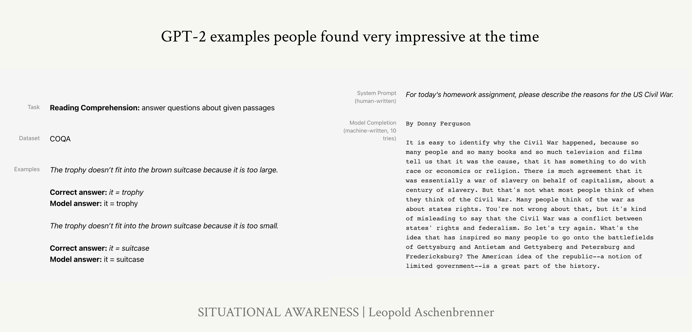
当时人们对GPT-2印象深刻的一些例子。左图：GPT-2在极其基础的阅读理解问题上表现尚可。右图：在精心挑选的样本中（10次尝试中的最佳结果），GPT-2能写出一个半连贯的段落，对南北战争说一些半相关的内容。
将AI能力与人类智能进行比较是困难且有缺陷的，但我认为考虑这里的类比是有启发性的，即使它极不完美。GPT-2因其语言掌握能力和偶尔生成半连贯段落或偶尔正确回答简单事实问题的能力而令人震惊。这对学龄前儿童来说是令人印象深刻的。
GPT-3 (2020) ~ 小学生：“哇，只需一些少样本示例，它就能完成一些简单有用的任务。” 它开始更一致地在多个段落中保持连贯性，并能纠正语法和进行一些非常基础的算术运算。首次，它在一些狭窄的方面也具有商业实用性：例如，GPT-3可以为SEO和营销生成简单的文案。
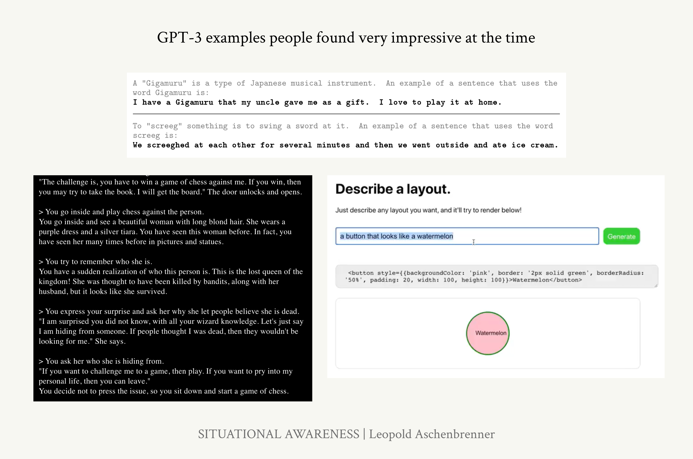
当时人们对GPT-3印象深刻的一些例子。顶部：经过简单指令后，GPT-3可以在新句子中使用一个虚构的词。左下：GPT-3可以进行丰富的故事互动。右下：GPT-3可以生成一些非常简单的代码。
同样，这种比较并不完美，但人们对GPT-3印象深刻的地方可能对小学生来说是令人印象深刻的：它写了一些基础诗歌，能讲述更丰富连贯的故事，能开始进行基本编程，能相当可靠地从简单指令和演示中学习，等等。
GPT-4 (2023) ~ 聪明的高中生：“哇，它能编写相当复杂的代码并迭代调试，能就复杂主题进行智能而复杂的写作，能推理解决困难的高中竞赛数学题，在我们能给出的任何测试中都击败了绝大多数高中生等等。” 从代码到数学再到费米估算(Fermi estimates)，它能思考和推理。GPT-4现在在我的日常任务中很有用，从帮助编写代码到修订草稿。
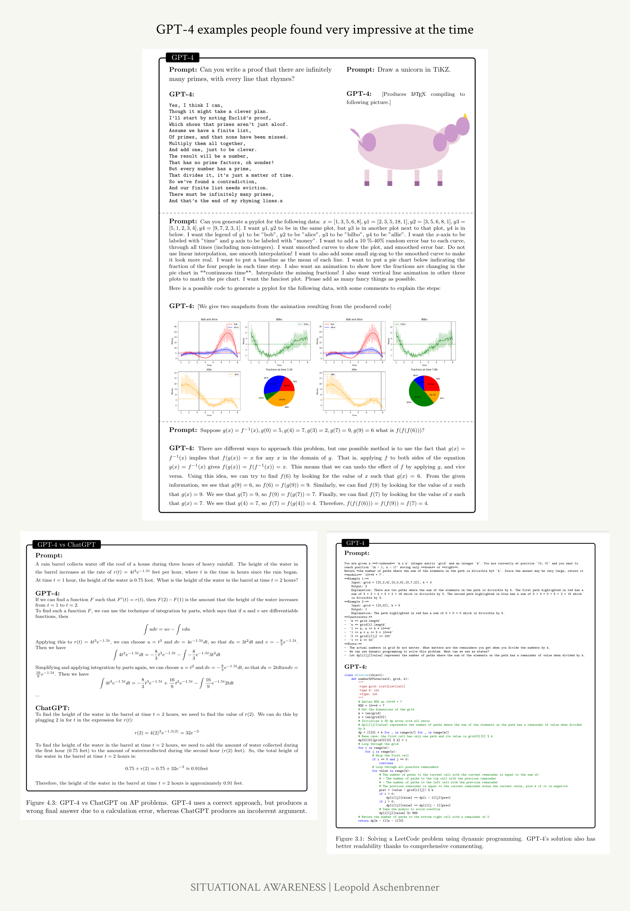
GPT-4发布时人们印象深刻的一些表现，来自”AGI之火花”论文。顶部：它正在编写非常复杂的代码（生成中间显示的图表）并能推理解决重要的数学问题。左下：解决AP数学问题。右下：解决相当复杂的编程问题。更多有趣的GPT-4能力探索摘录在这里。
在从AP考试到SAT的所有测试中，GPT-4的得分都超过了绝大多数高中生。
当然，即使是GPT-4仍然有些不平衡；对于某些任务，它比聪明的高中生强得多，而还有其他任务它还无法完成。也就是说，我倾向于认为大多数这些限制归结为模型仍然受到束缚的明显方式，我稍后会深入讨论。原始智能（大部分）已经存在，即使模型仍然受到人为限制；需要额外的工作来解锁模型能够在各种应用中充分应用这种原始智能。
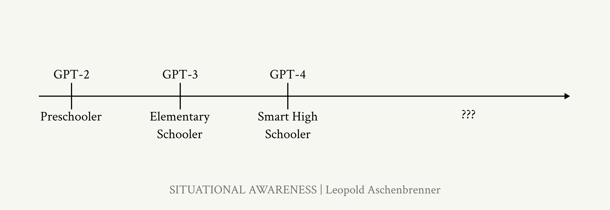
仅仅四年的进步。你在这条线上的哪个位置？
过去十年深度学习进步的步伐简直非同寻常。仅仅十年前，深度学习系统能识别简单图像就是革命性的。今天，我们不断尝试提出新颖、更难的测试，但每个新基准都被迅速攻破。过去需要几十年才能攻破广泛使用的基准；现在感觉只需要几个月。
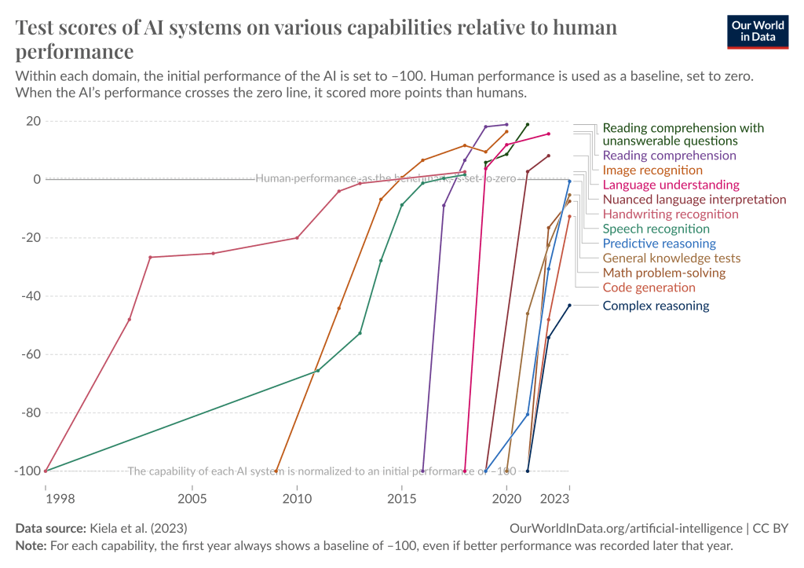
深度学习系统在许多领域正在快速达到或超越人类水平。图表：Our World in Data
我们实际上正在耗尽基准测试。作为一个轶事，我的朋友Dan和Collin几年前在2020年制作了一个叫MMLU的基准测试。他们希望最终制作一个能经受时间考验的基准测试，相当于我们给高中生和大学生的所有最难考试。仅仅三年后，它基本上被解决了：像GPT-4和Gemini这样的模型得到了约90%的分数。
更广泛地说，GPT-4基本上攻破了所有标准的高中和大学能力测试。（甚至从GPT-3.5到GPT-4的一年时间通常让我们从远低于人类中位数表现跳跃到人类范围的顶端。）
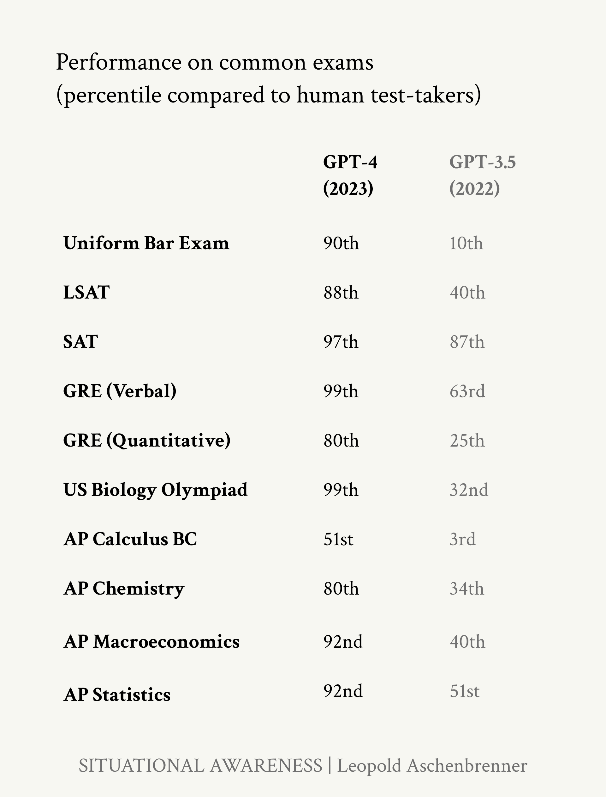
GPT-4在标准化测试中的得分。注意GPT-3.5到GPT-4在这些测试中人类百分位数的巨大跳跃，通常从远低于人类中位数到人类范围的最高点。（这是GPT-3.5，一个在GPT-4发布前不到一年发布的相当新的模型，而不是我们之前谈论的笨拙的旧小学水平GPT-3！）
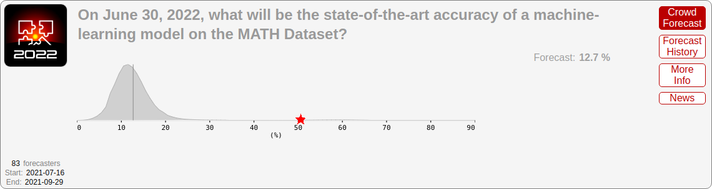
灰色：2021年8月做出的专业预测，针对2022年6月在MATH基准测试（来自高中数学竞赛的困难数学问题）上的表现。红色星号：2022年6月的实际最先进表现，远超预测者给出的上限范围。机器学习研究人员的中位数预测甚至更悲观。
或者考虑 MATH 基准测试，这是一组来自高中数学竞赛的困难数学问题。当该基准在 2021 年发布时，最好的模型只能正确解决约 5% 的问题。原论文指出：“此外，我们发现如果缩放趋势继续下去，简单地增加预算和模型参数数量对于实现强大的数学推理将是不切实际的[…]。要在数学问题求解方面取得更多进展，我们可能需要来自更广泛研究社区的新算法突破”——他们认为我们需要根本性的新突破来解决 MATH。ML 研究人员的一项调查预测在未来几年内进展微乎其微；然而在短短一年内（到 2022 年中期），最好的模型就从约 5% 提升到了 50% 的准确率；现在，MATH 基本上已经被解决了，最新性能超过 90%。
一次又一次，年复一年，怀疑者声称”深度学习无法做到 X”，然后很快就被证明是错误的。如果说我们从过去十年的 AI 发展中学到了什么，那就是你永远不应该与深度学习对赌。
现在最困难的未解基准测试是像 GPQA 这样的测试，这是一组博士级别的生物学、化学和物理学问题。许多问题对我来说就像天书，即使是其他科学领域的博士花费 30 多分钟使用 Google，也几乎不能超过随机猜测的得分。Claude 3 Opus 目前能达到约 60%，而该领域的博士能达到约 80%——我预计这个基准也会在下一代或两代模型中被攻克。
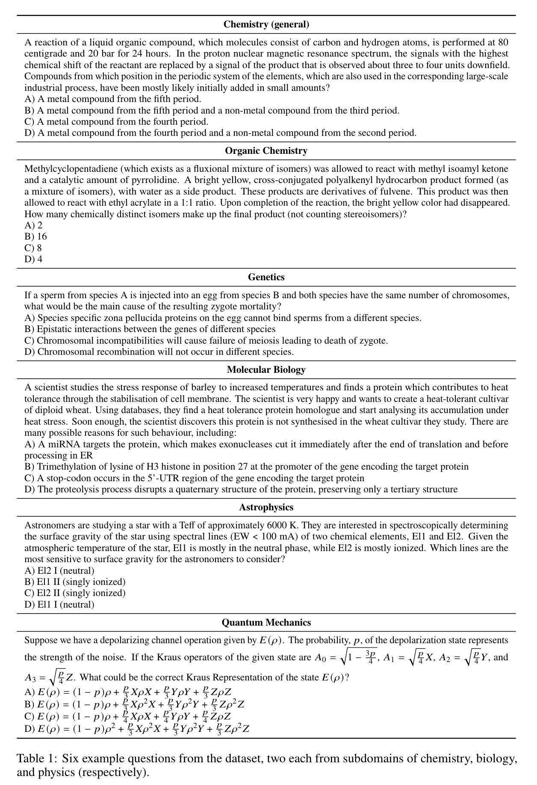
GPQA 问题示例。模型在这方面已经比我强了，我们可能很快就会攻克专家博士级别…
这是如何发生的？深度学习的魔力在于它就是有效——尽管每一步都有反对者，但趋势线一直惊人地一致。
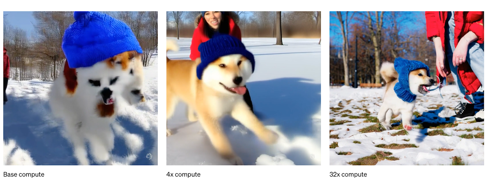
以 OpenAI Sora 为例的算力扩展效果。
每增加一个数量级(OOM)的有效算力，模型都会可预测地、可靠地变得更好。如果我们能计算 OOMs，我们就可以（大致地、定性地）推断能力改进。这就是少数有远见的人如何预见到 GPT-4 的出现。
我们可以将从 GPT-2 到 GPT-4 四年间的进展分解为三类扩展：
算力：我们使用更大的计算机来训练这些模型。
算法效率：存在持续的算法进步趋势。其中许多作为”算力乘数”，我们可以将它们放在有效算力增长的统一尺度上。
“解除束缚”收益：默认情况下，模型学习了许多惊人的原始能力，但它们在各种愚蠢的方式上被束缚，限制了它们的实用价值。通过像人类反馈强化学习(RLHF)、思维链(CoT)、工具和脚手架等简单算法改进，我们可以释放重要的潜在能力。
我们可以”计算 OOMs”沿着这些轴的改进：也就是说，以有效算力为单位追踪每个轴的扩展。3倍是 0.5 OOMs；10倍是 1 OOM；30倍是 1.5 OOMs；100倍是 2 OOMs；等等。我们还可以看看在 GPT-4 之上，从 2023 年到 2027 年我们应该期待什么。
我将逐一介绍每个方面，但要点很清楚：我们正在快速穿越 OOMs。数据墙存在潜在的阻力，我将予以解决——但总的来说，到 2027 年，我们似乎可能在 GPT-4 的基础上期待另一个 GPT-2 到 GPT-4 规模的跃迁。
我将从最常讨论的近期进展驱动因素开始：向模型投入（大量）更多算力。
许多人假设这仅仅是由于摩尔定律。但即使在摩尔定律鼎盛时期的旧时代，它也相对缓慢——每十年可能 1-1.5 个 OOMs。我们看到的算力扩展要快得多——接近摩尔定律速度的 5 倍——这是因为巨额投资。（过去花费一百万美元训练单个模型是没人会考虑的离谱想法，现在这只是零花钱！）
模型 估计算力 增长 GPT-2 (2019) ~4e21 FLOP GPT-3 (2020) ~3e23 FLOP + ~2 OOMs GPT-4 (2023) 8e24 to 4e25 FLOP + ~1.5–2 OOMs
Epoch AI 对 GPT-2 到 GPT-4 算力的估计
我们可以使用 Epoch AI（一个因其对 AI 趋势的出色分析而广受尊重的来源）的公开估计来追踪从 2019 年到 2023 年的算力扩展。GPT-2 到 GPT-3 是快速扩展；存在大量算力积压，从较小的实验扩展到使用整个数据中心来训练大型语言模型。随着从 GPT-3 到 GPT-4 的扩展，我们过渡到了现代体制：必须为下一个模型构建全新的（更大的）集群。然而戏剧性的增长仍在继续。总的来说，Epoch AI 的估计表明 GPT-4 的训练使用了比 GPT-2 多约 3,000-10,000 倍的原始算力。
从广义上讲，这只是更长期趋势的延续。在过去的十五年中，主要由于投资的广泛扩展（以及以 GPU 和 TPU 形式为 AI 工作负载专门化芯片），用于前沿 AI 系统的训练算力以大约每年 0.5 OOMs 的速度增长。
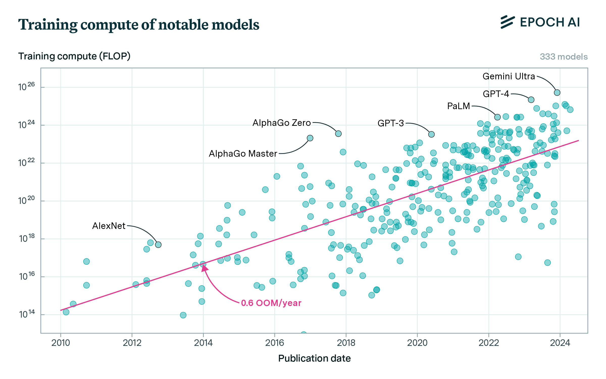
随时间变化的著名深度学习模型训练算力。来源：Epoch AI
从GPT-2到GPT-3在一年内的计算规模扩展是一个异常的积压，但所有迹象表明长期趋势将继续。旧金山的传言工厂(rumor-mill)充斥着关于大量GPU订单的戏剧性故事。所涉及的投资将是非凡的——但它们正在进行中。我将在本系列后面的部分中更详细地讨论这个问题，在IIIa. Racing to the Trillion-Dollar Cluster中；基于那项分析，额外2个数量级的计算(价值数百亿美元的集群)似乎很可能在2027年底前实现；甚至接近+3个数量级计算的集群(1000亿美元+)也似乎是合理的(据传微软/OpenAI正在进行此类工作)。
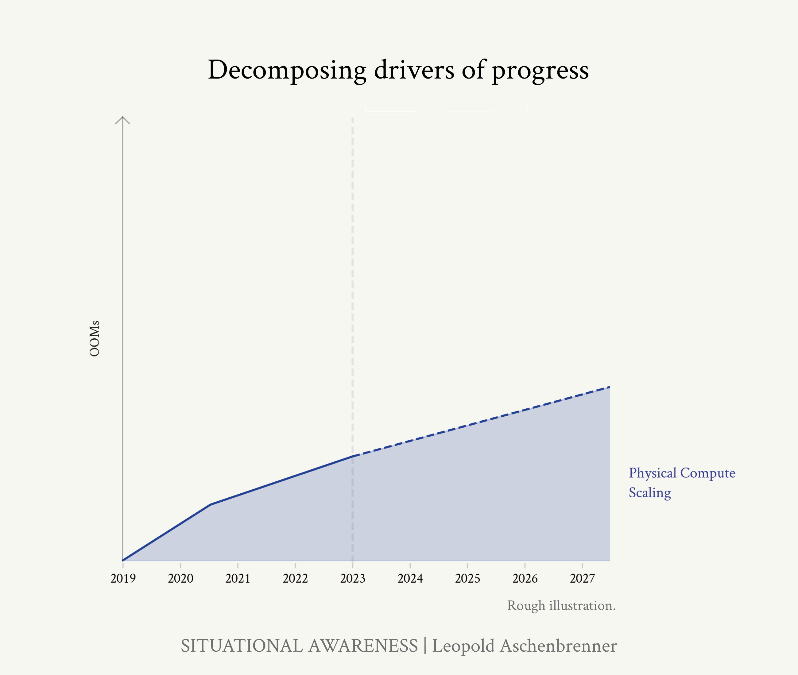
虽然计算方面的大规模投资获得了所有关注，但算法进步可能是同样重要的进步驱动力(并且一直被严重低估)。
要了解算法进步有多重要，请考虑以下关于在MATH基准测试(高中竞赛数学)上达到约50%准确率的价格下降的说明，这仅仅在两年内就发生了。(作为对比，一个不太喜欢数学的计算机科学博士生得分为40%，所以这已经相当不错了。)推理效率在不到两年内提高了近3个数量级——1000倍。
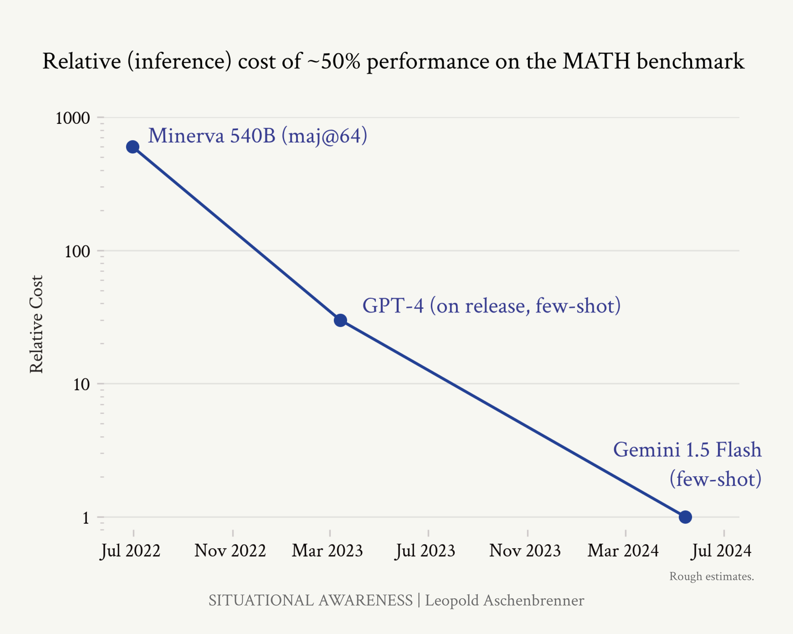
达到约50%MATH性能的相对推理成本粗略估计。12
尽管这些数字只是推理效率的(可能对应也可能不对应训练效率改进，其中的数字更难从公共数据中推断)，但它们清楚地表明存在巨大的算法进步可能性并且正在发生。
在这篇文章中，我将区分两种算法进步。在这里，我首先将涵盖”范式内”的算法改进——那些仅仅产生更好基础模型，并直接作为计算效率或计算乘数的改进。例如，更好的算法可能允许我们达到相同的性能但使用10倍更少的训练计算。反过来，这将相当于有效计算增加10倍(1个数量级)。(稍后，我将讨论”unhobbling”，你可以将其视为”范式扩展/应用扩展”的算法进步，它释放了基础模型的能力。)
如果我们退后一步看看长期趋势，我们似乎以相当一致的速度发现新的算法改进。个别发现看起来是随机的，在每个转折点，似乎都有不可逾越的障碍——但长期趋势线是可预测的，在图表上是一条直线。相信趋势线。
我们拥有ImageNet的最佳数据(算法研究大部分是公开的，我们有可以追溯十年的数据)，在2012年到2021年的9年期间，我们持续将计算效率提高了大约0.5个数量级/年。
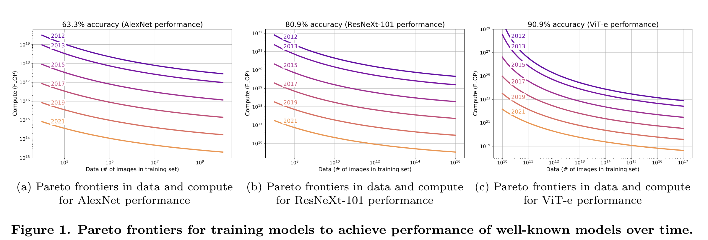
我们可以衡量算法进步：2021年相比2012年，训练具有相同性能的模型需要多少更少的计算？我们看到约0.5个数量级/年的算法效率趋势。来源：Erdil and Besiroglu 2022。
这是一个巨大的成就：这意味着4年后，我们可以用约100倍更少的计算达到相同性能(相应地，用相同的计算获得更高的性能！)。
不幸的是，由于实验室不发布内部数据，过去四年中前沿LLMs的算法进步更难衡量。EpochAI有新的工作将他们在ImageNet上的结果复制到语言建模上，并估计从2012年到2023年LLMs中类似的约0.5个数量级/年的算法效率趋势。(尽管这有更宽的误差范围，并且没有捕捉到一些更近期的收益，因为领先的实验室已经停止发布他们的算法效率。)
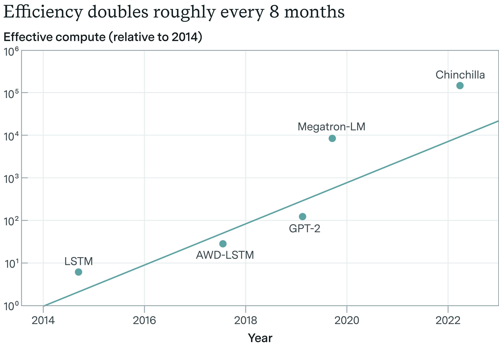
Epoch AI对语言建模中算法效率的估计。他们的估计表明我们在8年中获得了约4个数量级的效率收益。
更直接地看过去4年，GPT-2到GPT-3基本上是一个简单的扩展(根据论文)，但自GPT-3以来有许多公开已知和公开可推断的收益：
我们可以从API成本推断收益：13
GPT-4在发布时成本约等于GPT-3发布时的成本，尽管性能有绝对巨大的提升。14(如果我们基于缩放定律做一个天真和过度简化的粗略估计，这表明从GPT-3到GPT-4的有效计算增长中可能大约一半来自算法改进。15)
自一年前GPT-4发布以来，随着GPT-4o的发布，OpenAI的GPT-4级模型价格又下降了6倍/4倍(输入/输出)。
最近发布的Gemini 1.5 Flash提供介于”GPT-3.75级”和GPT-4级性能之间的表现，16同时成本比原始GPT-4低85倍/57倍(输入/输出)(非凡的收益！)。
Chinchilla缩放定律给出了3倍+(0.5个数量级+)的效率收益。17
Gemini 1.5 Pro声称主要的计算效率收益(超越Gemini 1.0 Ultra，同时使用”显著更少”的计算)，将专家混合(MoE)作为突出的架构变化。其他论文也声称从MoE获得了大量的计算倍数。
在架构、数据、训练栈等方面一直有许多调整和收益。18
综合起来，公开信息表明GPT-2到GPT-4的跳跃包括了1-2个数量级的算法效率收益。19
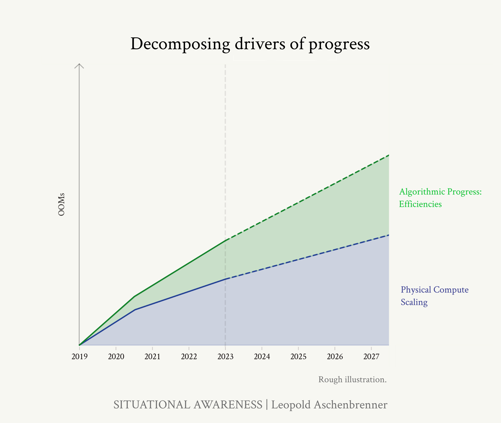
在 GPT-4 发布后的 4 年里，我们应该预期这一趋势将继续：20 平均每年 0.5 个数量级的计算效率提升，即到 2027 年与 GPT-4 相比将有约 2 个数量级的收益。虽然随着我们摘取了容易获得的成果，计算效率将变得更难提升，但 AI 实验室在资金和人才方面的投资正在快速增长，以寻找新的算法改进。21（至少公开可推断的推理成本效率似乎完全没有放缓。）在高端情况下，我们甚至可能看到更根本性的、类似 Transformer 的突破22，带来更大的收益。
综合考虑，这表明我们应该预期到 2027 年底会有大约 1-3 个数量级的算法效率收益（与 GPT-4 相比），最佳猜测可能是约 2 个数量级。
所有这些都有一个潜在的重要变数来源：我们正在耗尽互联网数据。这可能意味着，很快，在更多抓取数据上预训练更大语言模型的简单方法可能会开始遇到严重瓶颈。
前沿模型已经在大部分互联网上进行了训练。例如，Llama 3 在超过 15T 个 token 上进行了训练。Common Crawl——用于 LLM 训练的大部分互联网转储——原始数据超过 100T 个 token，尽管其中大部分是垃圾信息和重复内容（例如，相对简单的去重导致 30T 个 token，这意味着 Llama 3 基本上已经使用了所有数据）。此外，对于代码等更具体的领域，token 数量更少，例如公共 github 仓库估计只有数万亿个 token。
你可以通过重复数据走得更远一些，但这方面的学术研究表明重复只能让你走这么远，发现在 16 个 epoch（16 倍重复）之后，回报会极快地递减至零。在某个时候，即使有更多（有效的）计算，由于数据约束，让你的模型变得更好可能会变得困难得多。这不容小觑：我们一直在遵循缩放曲线，乘着语言建模-预训练-范式的浪潮，如果在这里没有新的东西，这个范式将（至少在简单意义上）耗尽。尽管有巨额投资，我们还是会陷入停滞。据传所有实验室都在新的算法改进或方法上进行大规模研究投注，以绕过这个问题。研究人员据说正在尝试许多策略，从合成数据到自我对弈和强化学习方法。业内人士似乎非常乐观：Anthropic 的 CEO Dario Amodei 最近在播客中说：“如果你非常简单地看它，我们离数据耗尽并不远 […] 我的猜测是这不会成为阻碍 […] 有很多不同的方法来做到这一点。”当然，关于这方面的任何研究结果都是专有的，这些天都没有发表。
除了业内人士的乐观态度，我认为有强有力的直觉理由说明为什么应该可能找到用更好样本效率训练模型的方法（让它们从有限数据中学到更多的算法改进）。考虑一下你或我如何从一本真正密集的数学教科书中学习：
现代 LLM 在训练期间所做的，本质上是非常非常快速地浏览教科书，文字飞快掠过，没有在上面花费太多脑力。
相反，当你或我阅读那本数学教科书时，我们慢慢地读几页；然后在脑海中对材料进行内部独白，与几个学习伙伴讨论；再读一两页；然后尝试一些练习题，失败，用不同的方法再试，得到这些问题的一些反馈，再试直到我们做对一个问题；等等，直到最终材料”点击”了。
如果你或我只能像 LLM 那样快速浏览一本密集的数学教科书，我们也不会学到太多。23
但是，也许有一些方法可以结合人类消化密集数学教科书的方式，让模型从有限数据中学到更多。简单来说，这种事情——对材料进行内部独白，与学习伙伴讨论，在问题上尝试和失败直到理解——正是许多合成数据/自我对弈/强化学习方法试图做的。24
训练模型的旧技术水平是简单而朴素的，但它有效，所以没有人真正努力破解这些样本效率方法。现在这可能成为更大的约束，我们应该期待所有实验室投入数十亿美元和他们最聪明的头脑来破解它。深度学习的一个常见模式是需要大量努力（和许多失败的项目）来获得正确的细节，但最终一些明显而简单事物的某个版本就是有效的。鉴于深度学习在过去十年中设法冲破了每一道假想的墙，我的基本情况是这里也会类似。
此外，破解合成数据等算法投注之一实际上似乎可能显著改善模型。这里有一个直觉泵(intuition pump)。当前的前沿模型如 Llama 3 是在互联网上训练的——而互联网大部分是垃圾，比如电子商务或 SEO 什么的。许多 LLM 将其训练计算的绝大部分花在这些垃圾上，而不是真正高质量的数据上（例如人们解决困难科学问题的推理链）。想象一下，如果你能将 GPT-4 级别的计算完全花在极高质量的数据上——它可能是一个更加、更加有能力的模型。
回顾 AlphaGo——第一个击败围棋世界冠军的 AI 系统，比预想的提前了几十年——在这里也很有用。25
在第一步中，AlphaGo 通过对专家人类围棋游戏的模仿学习进行训练。这给了它一个基础。
在第二步中，AlphaGo 与自己对弈了数百万局游戏。这让它在围棋上变得超人：记住在与李世乭的比赛中著名的第 37 手，一个极其不寻常但精彩的着法，人类永远不会下出来。
为LLM开发相当于第二步的技术是克服数据墙的关键研究问题（而且，最终将是超越人类水平智能的关键）。
所有这些都说明，数据约束似乎给预测未来几年AI进展带来了巨大的误差范围。很有可能进展会停滞（LLM可能仍然像互联网一样重要，但我们无法达到真正疯狂的AGI）。但我认为，合理地猜测实验室会破解这一点，这样做不仅会让扩展曲线继续，还可能实现模型能力的巨大提升。
顺便说一下，这也意味着我们应该预期未来几年不同实验室之间的差异会比今天更大。直到最近，最先进的技术都是公开发表的，所以大家基本上都在做同样的事情。（新兴创业公司或开源项目可以轻松与前沿竞争，因为方法是公开的。）现在，关键的算法思想正变得越来越专有。我预期实验室的方法会更加分化，有些会比其他的进步更快——即使现在看起来处于前沿的实验室也可能在数据墙上卡住，而其他实验室取得突破并因此遥遥领先。开源将更难竞争。这肯定会让事情变得有趣。（如果某个实验室破解了这一点，他们的突破将是AGI的关键，是superintelligence(超级智能)的关键——美国最珍贵的秘密之一。）
最后，最难量化但同样重要的改进类别：我称之为”解除束缚”。
想象一下，如果被要求解决一道困难的数学题时，你必须立即回答脑海中想到的第一个答案。显然，除了最简单的问题，你很难做到这一点。但直到最近，我们就是这样让LLM解决数学问题的。相反，我们大多数人都会在草稿纸上一步步解决问题，这样能够解决更困难的问题。“思维链”提示为LLM解锁了这种能力。尽管具有出色的原始能力，但它们在数学方面比本应具备的能力差得多，因为它们以明显的方式被束缚着，只需要一个小的算法调整就能解锁更强大的能力。
在过去几年中，我们在”解除束缚”模型方面取得了巨大进步。这些算法改进不仅仅是训练更好的基础模型——通常只使用预训练计算的一小部分——就能释放模型能力：
人类反馈强化学习(RLHF)。基础模型具有令人难以置信的潜在能力，但它们是粗糙的，极难使用。虽然人们普遍认为RLHF只是审查脏话，但RLHF是让模型真正有用且具有商业价值的关键（而不是让模型预测随机的互联网文本，让它们真正运用能力尝试回答你的问题！）。这就是ChatGPT的魔力——精心设计的RLHF首次让模型对真实用户来说既可用又有用。原始的InstructGPT论文对此有很好的量化：一个RLHF处理过的小模型在人类评价者偏好方面相当于一个未经RLHF处理的>100倍大的模型。
思维链(CoT)。如前所述。CoT仅在2年前开始广泛使用，在数学/推理问题上可以提供相当于>10倍有效计算增长的效果。
脚手架。想象CoT++：不仅仅是要求模型解决问题，让一个模型制定攻击计划，让另一个提出一堆可能的解决方案，让另一个批评它，等等。例如，在HumanEval(编程问题)上，简单的脚手架使GPT-3.5能够超越未使用脚手架的GPT-4。在SWE-Bench(解决现实世界软件工程任务的基准)上，GPT-4只能正确解决约2%，而使用Devin的agent(智能体)脚手架后跳升到14-23%。（解锁agency(智能体能力)还只是在起步阶段，我稍后会详细讨论。）
工具：想象一下如果人类不被允许使用计算器或计算机。我们才刚刚开始，但ChatGPT现在可以使用网络浏览器、运行一些代码等等。
上下文长度。模型已从2k token上下文(GPT-3)发展到32k上下文(GPT-4发布时)再到1M+上下文(Gemini 1.5 Pro)。这是一个巨大的变化。一个小得多的基础模型如果有10万token的相关上下文，可以超越一个大得多但只有4k相关上下文token的模型——更多上下文实际上是一个巨大的计算效率提升。更一般地说，上下文是解锁这些模型许多应用的关键：例如，许多编程应用需要理解代码库的大部分才能有用地贡献新代码；或者，如果你使用模型帮助你在工作中写文档，它真的需要来自许多相关内部文档和对话的上下文。Gemini 1.5 Pro凭借其1M+ token上下文，甚至能够从零开始学习一种新语言（互联网上没有的低资源语言），只是通过在上下文中放置字典和语法参考材料！
训练后改进。根据John Schulman的说法，当前的GPT-4与发布时的原始GPT-4相比有了大幅改进，这要归功于解锁潜在模型能力的训练后改进：在推理评估上取得了实质性提升（例如，在MATH上从约50%提升到72%，在GPQA上从约40%提升到约50%），在LMSys排行榜上，它的elo分数提升了近100分（相当于Claude 3 Haiku和大得多的Claude 3 Opus之间的elo差异，这些模型的价格差异约为50倍）。
Epoch AI 对脚手架、工具使用等技术进行的调查发现，这些技术通常可以在许多基准测试中实现 5-30 倍的有效计算增益。METR（一个评估模型的组织）同样在其智能体任务集上发现了非常大的性能提升，通过对同一个 GPT-4 基础模型的去束缚处理：从仅使用基础模型的 5%，到发布时经过后训练的 GPT-4 的 20%，再到今天通过更好的后训练、工具和智能体脚手架接近 40%。

METR 智能体任务的性能表现，通过更好的去束缚处理随时间变化。来源：Model Evaluation and Threat Research
虽然很难将这些与计算和算法效率放在统一的有效计算尺度上，但显然这些是巨大的收益，至少在大致相似的量级上与计算规模扩展和算法效率相当。（这也突出了算法进步的核心作用：每年 0.5 个数量级的计算效率提升虽然已经很显著，但只是故事的一部分，与去束缚算法进步结合在一起，可能在当前趋势中甚至占据了大部分收益。）
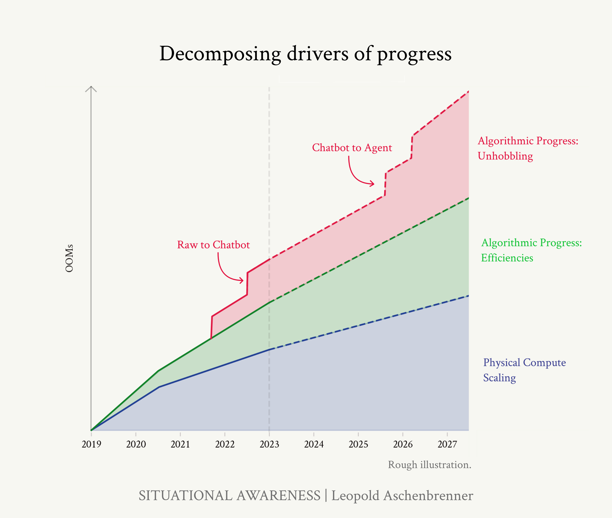
“去束缚”正是使这些模型变得有用的关键——我认为阻碍当今许多商业应用的主要因素就是需要进一步的此类”去束缚”。事实上，今天的模型仍然受到极大束缚！例如：
它们没有长期记忆。
它们不能使用计算机（它们仍然只有非常有限的工具）。
它们大多仍然不会在说话前思考。当你要求 ChatGPT 写一篇文章时，这就像期望人类通过他们最初的意识流来写文章一样。
它们（大多数）只能进行简短的往返对话，而不能离开一天或一周，思考问题、研究不同方法、咨询其他人，然后给你写一份更长的报告或拉取请求。
它们大多没有针对你或你的应用进行个性化（只是一个带有简短提示的通用聊天机器人，而不是掌握你公司和工作的所有相关背景）。
这里的可能性是巨大的，我们正在迅速收获这里的低垂果实。这一点至关重要：仅仅想象”GPT-6 ChatGPT”是完全错误的。随着去束缚进步的持续，与 GPT-6 + RLHF 相比，改进将是阶跃式变化。到 2027 年，你将拥有的不再是聊天机器人，而是更像智能体、像同事一样的东西。
未来几年雄心勃勃的去束缚可能是什么样子？我认为有三个关键要素：
GPT-4 拥有完成许多人工作相当一部分的原始智能，但它有点像一个刚刚在 5 分钟前出现的聪明新员工：它没有任何相关背景，没有阅读公司文档或 Slack 历史记录，没有与团队成员交谈，也没有花时间理解公司内部代码库。聪明的新员工在到达 5 分钟后并不那么有用——但一个月后他们就相当有用！似乎应该可能，例如通过超长上下文，像我们对待新人类同事一样”入职”模型。仅这一点就将是巨大的解锁。
现在，模型基本上只能做短任务：你问他们一个问题，他们给你一个答案。但这是极其有限的。人类所做的大多数有用认知工作都是更长期的——不只是需要 5 分钟，而是数小时、数天、数周或数月。
一个只能对困难问题思考 5 分钟的科学家无法取得任何科学突破。一个在被问及时只能为单个函数编写骨架代码的软件工程师不会很有用——软件工程师被分配一个更大的任务，然后他们制定计划，理解代码库或技术工具的相关部分，编写不同的模块并逐步测试它们，调试错误，在可能解决方案的空间中搜索，最终提交一个大型拉取请求，这是数周工作的顶点。等等。
本质上，存在大量的测试时计算冗余。将每个 GPT-4 token 想象成你思考问题时的一个内心独白词汇。每个 GPT-4 token 都相当聪明，但它目前只能真正有效地使用大约数百个 token 进行连贯的思维链（实际上就像你只能花几分钟的内心独白/思考来处理问题或项目一样）。
如果它能使用数百万个 token 来思考和解决真正困难的问题或更大的项目会怎样？
| token 数量 | 相当于我工作的时间… |
|---|---|
| 100s | 几分钟 |
| 1000s | 半小时+ |
| 10,000s | 半个工作日+ |
| 100,000s | 一个工作周+ |
| 数百万 | 数月+ |
假设人类以约100 token/分钟的速度思考，每周工作40小时，将模型”思考时长”在token中转换为人类在给定问题/项目上的时间。
即使”每token”智能保持相同，这也将是聪明人花几分钟与几个月处理问题之间的差异。我不知道你怎么样，但我在几个月内能够完成的事情比几分钟内能完成的要多得多得多。如果我们能够为模型解锁”能够思考和处理某事数月时间等价，而不是几分钟等价”，这将释放能力的疯狂跃升。这里有巨大的冗余，价值许多个数量级。
目前，模型还无法做到这一点。即使在长上下文方面有了最新进展，这种更长的上下文主要只适用于token的消费，而不是token的生产——过一段时间后，模型会偏离轨道或陷入困境。它还无法独自离开一段时间来处理问题或项目。
但解锁测试时计算可能只是相对较小的”解除束缚”算法胜利的问题。也许少量的强化学习帮助模型学会纠错（“嗯，那看起来不对，让我再检查一下”）、制定计划、搜索可能的解决方案等等。从某种意义上说，模型已经具备了大部分原始能力，它只需要在此基础上学习一些额外技能来整合所有这些能力。
本质上，我们只需要教会模型一种系统II外循环，让它能够推理困难的、长期的项目。
如果我们成功教会了这个外循环，想象一下，不再是几段话的简短聊天机器人回答，而是数百万词的流（比你阅读速度更快地涌现），因为模型思考问题、使用工具、尝试不同方法、进行研究、修改工作、与他人协调，并独立完成大项目。
在其他机器学习领域中权衡测试时计算和训练时计算
在其他领域，比如棋盘游戏的AI系统，已经证明你可以使用更多测试时计算（也称为推理时计算）来替代训练计算。
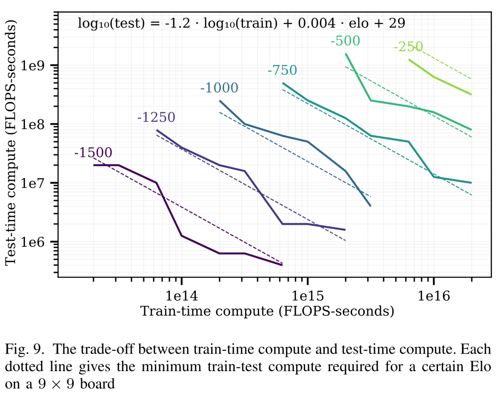
Jones (2021)：如果给一个较小的模型更多测试时计算（“更多思考时间”），它在十六进制棋游戏中可以表现得与更大模型一样好。在这个领域，他们发现可以在测试时花费约1.2个数量级更多的计算，来获得与训练计算多约1个数量级的模型相当的性能。
如果类似的关系在我们的情况下成立，如果我们能够解锁+4个数量级的测试时计算，这可能相当于+3个数量级的预训练计算，即大致相当于GPT-3到GPT-4之间的跳跃。（也就是说，解决这种”解除束缚”问题将等同于巨大的数量级扩展。）
3. 使用计算机
这也许是三者中最直接的。现在的ChatGPT基本上就像一个坐在孤立盒子里的人，你只能给他发短信。虽然早期的解除束缚改进教会模型使用单个孤立工具，我预期随着多模态模型的发展，我们很快就能一举完成这个目标：我们将简单地让模型像人类一样使用计算机。
这意味着加入你的Zoom通话、在线研究事物、给人们发消息和邮件、阅读共享文档、使用你的应用程序和开发工具等等。（当然，为了让模型在更长期的循环中最大化利用这一点，这将与解锁测试时计算携手并进。）
到最后，我预期我们会得到看起来很像即插即用远程工作者的东西。一个加入你公司的代理，像新雇佣的人类一样入职，在Slack上与你和同事交流并使用你的软件，提交拉取请求，在被分配大项目时，能够做到相当于人类独立离开几周来完成项目的模型等价物。你可能需要比GPT-4稍好一些的基础模型来解锁这一点，但可能甚至不需要好那么多——很多潜力在于修复模型仍然受到束缚的明显和基本方式。

这可能看起来像什么的非常早期预览是Devin，这是在创建完全自动化软件工程师路径上解锁”智能体悬垂”/“测试时计算悬垂”的早期原型。我不知道Devin在实践中效果如何，而且与适当的聊天机器人→智能体解除束缚所能产生的效果相比，这个演示仍然非常有限，但它是即将到来的这类事物的有用预告。
顺便说一下，我预期解除束缚的重要性将导致商业应用方面的某种有趣的”音爆”效应。从现在到即插即用远程工作者之间的中间模型将需要大量繁琐工作来改变工作流程和构建基础设施，以集成和从中获得经济价值。即插即用远程工作者将更容易集成——只需，嗯，把它们放进去来自动化所有可以远程完成的工作。似乎很有可能繁琐工作将比解除束缚花费更长时间，也就是说，到即插即用远程工作者能够自动化大量工作时，中间模型可能还没有被充分利用和集成——因此产生的经济价值跳跃可能会有些不连续。
接下来的四年
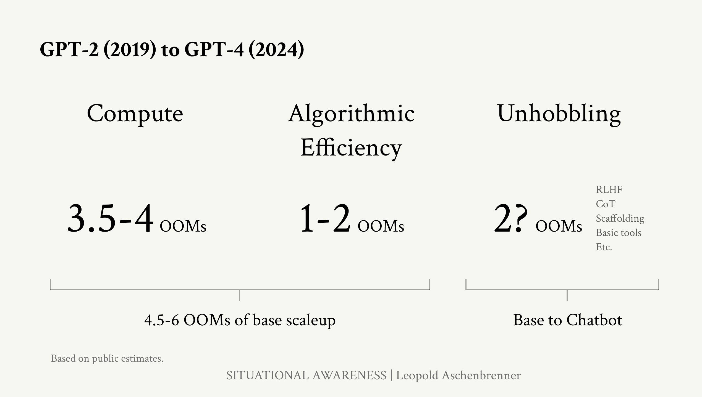
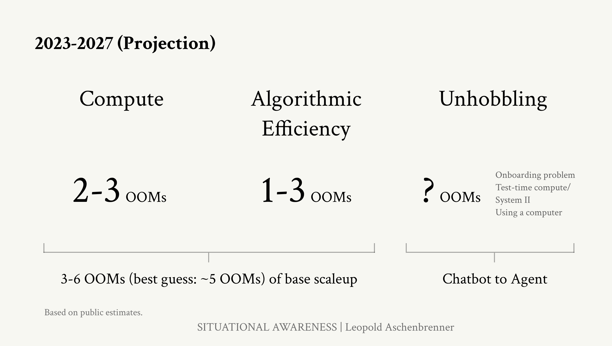
GPT-4之前四年进步驱动因素的估算摘要，以及我们在GPT-4之后四年应该期待什么。
将这些数字综合起来，我们应该（大致）期待在GPT-4之后的4年中，到2027年底，再次出现另一个GPT-2到GPT-4规模的跳跃。
GPT-2到GPT-4大致是4.5-6个数量级的基础有效计算扩展（物理计算和算法效率），加上主要的”解除束缚”收益（从基础模型到聊天机器人）。
在随后的4年中，我们应该期待3-6个数量级的基础有效计算扩展（物理计算和算法效率）——最佳猜测可能是约5个数量级——加上通过”解除束缚”（从聊天机器人到智能体/即插即用远程工作者）解锁的实用性和应用的步进式变化。
为了将此置于透视中，假设GPT-4的训练用了3个月。在2027年，领先的AI实验室将能够在一分钟内训练出GPT-4级别的模型。有效计算的数量级扩展将是戏剧性的。
这将把我们带向何方？
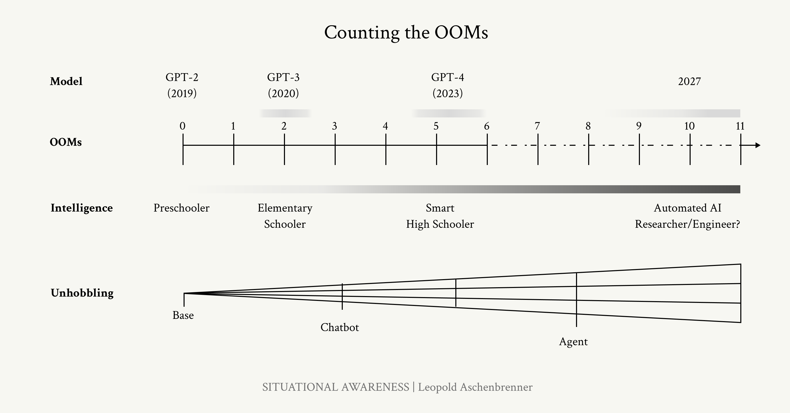
数量级计算的摘要。
GPT-2到GPT-4让我们从〜学龄前儿童跃升到〜聪明的高中生；从勉强能输出几个连贯的句子到在高中考试中取得高分并成为有用的编程助手。这是一个惊人的跳跃。如果这就是我们将再次跨越的智能差距，那将把我们带到哪里呢？³² 我们不应该感到惊讶，如果这将把我们带得非常非常远。很可能，它将把我们带到能够超越博士和某个领域最优秀专家的模型。
（一个有趣的思考方式是，当前AI进步的趋势正在以大约3倍于儿童发展的速度进行。你的3倍速孩子刚刚高中毕业；不知不觉中它就要抢走你的工作了！）
再次强调，关键是不要只想象一个极其聪明的ChatGPT：解除束缚带来的收益应该意味着这更像是一个即插即用的远程工作者，一个极其聪明的智能体，它可以推理、规划、纠错，了解你和你公司的一切，并能独立处理问题数周之久。
我们正朝着2027年实现AGI的目标前进。这些AI系统基本上能够自动化几乎所有认知工作（想想：所有可以远程完成的工作）。
需要明确的是——误差范围很大。如果我们耗尽数据，进展可能会停滞，如果突破数据墙所需的算法突破比预期更困难的话。也许解除束缚没有走得那么远，我们只能停留在专家级聊天机器人，而不是专家级同事。也许十年来的趋势线会中断，或者扩展深度学习这次真的遇到了瓶颈。（或者算法突破，甚至是释放测试时计算悬置的简单解绑，都可能是范式转变，进一步加速事情并导致AGI更早到来。）
无论如何，我们正在快速突破这些数量级，不需要深奥的信念，仅仅是直线的趋势外推，就足以极其认真地对待到2027年实现AGI——真正的AGI——的可能性。
似乎现在很多人在玩降低AGI定义的游戏，就像真正好的聊天机器人之类的。我指的是一个能够完全自动化我或我朋友工作的AI系统，能够完全胜任AI研究员或工程师的工作。也许某些领域，如机器人技术，默认情况下可能需要更长时间才能弄清楚。而社会推广，例如在医疗或法律专业中，很容易因社会选择或监管而放缓。但是一旦模型能够自动化AI研究本身，那就足够了——足以启动强烈的反馈循环——我们可以非常快速地取得进一步进展，自动化的AI工程师们自己解决完全自动化所有事物的所有剩余瓶颈。特别是，数百万个自动化研究人员很可能将十年的进一步算法进展压缩到一年或更短时间内。AGI只是即将到来的超级智能的小小预览。（下一篇文章会详细介绍。）
无论如何，不要期望这种令人眩晕的进步速度会减缓。趋势线看起来无害，但它们的含义是强烈的。就像之前的每一代一样，每一代新模型都会让大多数旁观者目瞪口呆；当模型很快解决需要博士花费数天的极其困难的科学问题时，当它们在你的电脑周围飞驰做你的工作时，当它们从头开始编写数百万行代码的代码库时，当这些模型产生的经济价值每一两年就增长10倍时，他们会感到难以置信。忘掉科幻小说，数数这些数量级：这就是我们应该期待的。AGI不再是遥远的幻想。扩展简单的深度学习技术就是有效的，模型就是想要学习，到2027年底我们即将再做100,000倍以上的扩展。用不了多久它们就会比我们更聪明。
GPT-4只是开始——四年后我们会在哪里？不要犯低估深度学习快速进展步伐的错误（如图所示）。
系列下一篇：
II. 从AGI到超级智能：智能爆炸
附录。突破数量级：就是这个十年，要么成功要么失败
我过去对AGI的短时间线更加怀疑。一个原因是将这个十年特殊化似乎是不合理的，在其上集中如此多的AGI概率质量（认为”哦，我们如此特殊”似乎是一个经典谬误）。我认为我们应该对实现AGI需要什么保持不确定，这应该导致对我们何时可能获得AGI的概率分布更加”分散”。
然而，我改变了想法：关键是，我们对实现AGI需要什么的不确定性应该是关于OOMs（有效计算的数量级），而不是关于年份。
我们这个十年正在快速突破数量级。即使在其辉煌的鼎盛时期，摩尔定律每十年也只有1-1.5个数量级。我估计我们将在4年内完成〜5个数量级，这个十年总体上超过〜10个。

我们这个十年一直在快速突破数量级；在2030年代初之后，我们将面临缓慢的艰难跋涉。
本质上，我们正处于这个十年巨大规模扩展的中期，获得一次性收益，此后通过数量级的进展将慢许多倍。如果这种规模扩展在未来5-10年内没有让我们达到AGI，那可能还有很长的路要走。
支出规模扩展：在一个模型上花费一百万美元曾经是离谱的；到这个十年结束时，我们可能会有1000亿美元或1万亿美元的集群。比那更高将很困难；那已经基本上是可行的极限了（无论是就大企业能负担得起的，还是甚至只是作为GDP的一部分）。此后我们拥有的只是冰川般的每年2%的实际GDP增长趋势来增加这个数字。
AI 硬件的改进速度远超摩尔定律。这是因为我们一直在为 AI 工作负载专门化芯片。例如，我们从 CPU 发展到 GPU；适配芯片用于 Transformers；并且我们从传统超级计算的 fp64/fp32 降到了 H100s 上的 fp8 这种更低精度的数字格式。这些都是巨大的收益，但到本十年末，我们可能会拥有完全专门化的 AI 专用芯片，无法再获得更多超越摩尔定律的收益。
在未来十年，AI 实验室将在算法研发上投资数百亿美元，世界上最聪明的人都将从事这项工作；从微小的效率提升到新的范式，我们将收获很多低垂的果实。我们可能不会达到任何硬性限制（尽管”解除限制”(unhobblings)可能是有限的），但至少改进的步伐应该会放缓，因为快速增长（美元和人力资本投资）必然会放缓（例如，大部分聪明的 STEM 人才将已经在从事 AI 工作）。（话虽如此，这是最不确定的预测，也是上图中 2030 年代 OOMs 大部分不确定性的来源。）
综合来看，这意味着我们在未来十年中将快速经历比之后几十年更多的 OOMs。也许这就足够了——我们很快就能获得 AGI——或者我们可能面临漫长而缓慢的斗争。你和我可以合理地不同意 AGI 的中位时间，这取决于我们认为实现 AGI 有多困难——但鉴于我们现在正在快速经历 OOMs，你的 AGI 模式年份肯定应该在本十年后期左右。
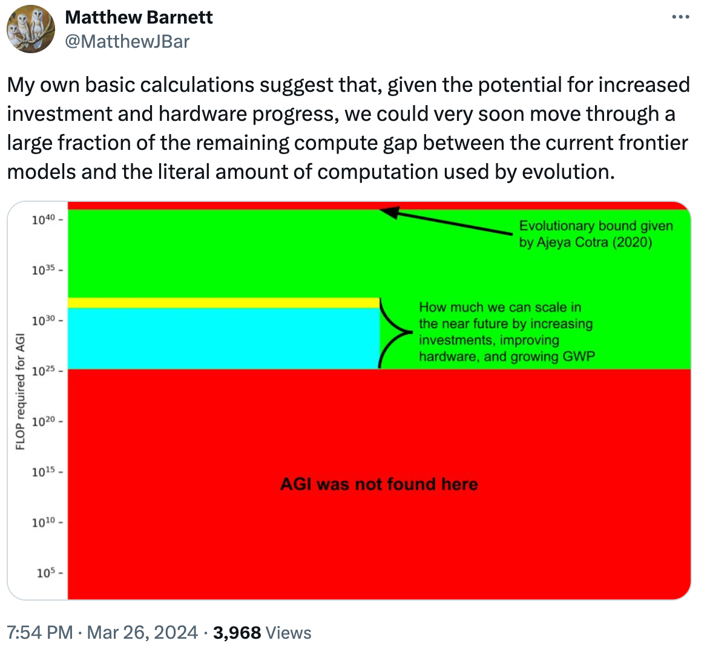
Matthew Barnett 有一个很好的相关可视化，仅考虑计算和生物边界。
他们在过去十年中每年都做出的预测，而且一直都是错误的…↩︎
来自 SSC：Janelle Shane 询问 GPT-2 它最喜欢的十种动物：
提示：我最喜欢的 10 种动物是：1.
我最喜欢的十种动物是：
背上有白色伤疤的斑马
阴险的蜘蛛和章鱼
有大叶子的青蛙，希望是黑色的
有鳞片的鸡尾鹦鹉
翅膀悬挂在距离脸部约 4 英寸处的剃刀嘴海雀，青蛙上有心形纹身
可以失明、切割和生吃的鸡冠互锁四足动物：
生活在阳光下的黑白沙漠鳄鱼
斑马和许多其他豌豆虫↩︎
来自 GPT-2 论文，第 3.6 节。↩︎
我指的是笨拙的旧 GPT-3，而不是你可能从 ChatGPT 中了解的大幅改进的 GPT-3.5。↩︎
不，这些测试不在训练集中。AI 实验室真正努力确保这些评估没有被污染，因为他们需要良好的测量来进行良好的科学研究。ScaleAI 最近对此进行的分析证实，领先的实验室没有过度拟合基准测试（尽管一些较小的 LLM 开发者可能在夸大他们的数字）。↩︎
在原始论文中，有这样的注释：“我们也在 MATH 上评估了人类，发现一个不特别喜欢数学的计算机科学博士生在 MATH 上获得了大约 40% 的分数，而一个三次 IMO 金牌得主获得了 90%，表明 MATH 对人类来说也可能具有挑战性。”↩︎
一位合著者指出：“当我们的小组首次发布 MATH 数据集时，至少有一位 [ML 研究员同事] 告诉我们这是一个毫无意义的数据集，因为它远远超出了 ML 模型能够完成的范围（确实，我自己也有些担心这个问题）。”↩︎
这里是 Yann LeCun 在 2022 年预测即使是 GPT-5000 也无法推理与现实世界的物理交互；显然 GPT-4 在一年后就轻松做到了这一点。
这里是 Gary Marcus 在 GPT-2 之后预测的障碍被 GPT-3 解决，以及他在 GPT-3 之后预测的障碍被 GPT-4 解决。
这里是 Bryan Caplan 教授的第一次公开打赌（此前他以完美的公开打赌记录而闻名）。2023 年 1 月，在 GPT-3.5 在他的经济学期中考试中获得 D 后，Caplan 教授与 Matthew Barnett 打赌，到 2029 年没有 AI 会在他的经济学期中考试中获得 A。仅仅两个月后，当 GPT-4 出现时，它立即在他的期中考试中获得了 A（这将是他班级中的最高分之一）。↩︎
在钻石集上，模型尝试 32 次的多数投票与思维链。↩︎
值得注意的是这些趋势线有多么一致。将原始缩放定律论文与一些关于计算和计算效率缩放的估计相结合，意味着超过 15 个数量级（超过 1,000,000,000,000,000 倍有效计算）的一致缩放趋势！↩︎
一个常见的误解是缩放只适用于困惑度损失，但我们在基准测试的下游性能上也看到了非常清晰和一致的缩放行为。通常只是找到正确的对数-对数图的问题。例如，在 GPT-4 博客文章中，他们显示了在 6 个 OOMs（1,000,000 倍）的计算上编码问题性能的一致缩放行为，使用 MLPR（平均对数通过率）。“涌现能力是海市蜃楼吗？”论文也提出了类似的观点；通过正确选择指标，下游任务的性能几乎总是有一致的趋势。
更一般地说，“缩放假设”定性观察——模型能力与规模的非常清晰的趋势——早于损失缩放曲线；“缩放定律”工作只是对此的正式测量。
↩︎
2. Minerva540B 在 MATH 上得分 50.3%，使用 64 个样本的多数投票。一位知识渊博的朋友估计，这里的基础模型推理成本可能比 GPT-4 贵 2-3 倍。然而，快速抽查显示 Minerva 似乎每个答案使用的标记(tokens)更少。更重要的是，Minerva 需要 64 个样本才能达到这种性能，这天真地意味着如果你通过推理 API 运行这个模型，成本会有 64 倍的增加。实际上，在运行评估时提示标记可以被缓存；考虑到少样本提示，即使计入输出标记，提示标记也可能占成本的大部分。假设输出标记占获得单个样本成本的三分之一，这意味着通过缓存进行 maj@64 只会增加约 20 倍的成本。为了保守起见，我在上述计算中使用了大约 20 倍成本降低的粗略数字（即使通过 API 运行这个的天真推理成本降低会更大）。↩︎
尽管这些是推理效率（而不一定是训练效率），并且在某种程度上会反映推理特定的优化，但 a) 它们表明一般情况下算法进步的巨大可能性和正在发生的进步，b) 算法改进往往既是训练效率提升也是推理效率提升，例如通过减少必要的参数数量。↩︎
GPT-3：$60/100万标记，GPT-4：$30/100万输入标记和 $60/100万输出标记。↩︎
Chinchilla 缩放定律(scaling laws)表明应该平等地缩放参数数量和数据。也就是说，参数数量增长是有效训练计算增长的数量级的”一半”。同时，参数数量直观上大致与推理成本成正比。在其他条件相等的情况下，恒定的推理成本意味着有效计算增长的一半数量级被算法优势”抵消”了。
也就是说，需要明确的是，这是一个非常天真的计算（仅用于粗略说明），在各种方面都是错误的。可能存在推理特定的优化（不能转化为训练效率）；可能存在不减少参数数量的训练效率（因此不能转化为推理效率）；等等。↩︎
Gemini 1.5 Flash 在 LMSys（一个聊天机器人排行榜）上的排名与 GPT-4 相似（高于原始 GPT-4，低于更新版本的 GPT-4），在 MATH 和 GPQA（测量推理的评估）上与原始 GPT-4 具有相似的性能，同时在 MMLU（更多地权衡测量知识的评估）上大致介于 GPT-3.5 和 GPT-4 之间。↩︎
在约 GPT-3 规模时超过 3 倍，在更大规模时更多。↩︎
例如，这篇论文包含了 GPT-3 风格的普通 Transformer 与多年来发布的架构和训练方法的各种简单更改的比较（RMSnorms 而不是 layernorm，不同的位置嵌入，SwiGlu 激活，AdamW 优化器而不是 Adam 等），他们称之为”Transformer++“，这意味着至少在小规模上有 6 倍的提升。↩︎
如果我们采用每年 0.5 个数量级的趋势，GPT-2 和 GPT-4 发布之间有 4 年，那将是 2 个数量级。然而，GPT-2 到 GPT-3 是一个简单的扩展（在例如 Transformers 的巨大收益之后），OpenAI 声称 GPT-4 预训练在 2022 年完成，这可能意味着我们看到的更接近于 2 年的算法进步。1 个数量级的算法效率似乎是一个保守的下限。↩︎
至少，考虑到十多年来一致的算法改进，举证责任应该在那些认为这一切会突然停止的人身上！↩︎
3 倍计算效率的经济回报将以数百亿美元或更多来衡量，考虑到集群成本。↩︎
非常粗略地说，类似于 .↩︎
一遍又一遍地重读同一本教科书可能会导致记忆，而不是理解。我认为这就是许多文科生通过数学课的方式！↩︎
我发现有趣的另一种思考方式：在预训练和上下文学习之间存在一个”缺失的中间地带”。上下文学习是令人难以置信的（并且在样本效率上与人类竞争）。例如，Gemini 1.5 Pro 论文讨论了在上下文中给模型提供关于 Kalamang（一种少于 200 人说的语言，基本上不存在于互联网上）的教学材料（教科书、词典）——模型学会了以人类水平从英语翻译到 Kalamang！在上下文中，模型能够像人类一样从教科书中学习（并且比仅仅将那本教科书投入预训练要好得多）。
当人类从教科书中学习时，他们能够通过练习将短期记忆/学习蒸馏成长期记忆/长期技能；然而，我们没有等效的方法将上下文学习”蒸馏回权重”。合成数据/自我博弈/强化学习等正在试图解决这个问题：让模型自己学习，然后思考并练习它学到的东西，将学习蒸馏回权重。↩︎
另见 Andrej Karpathy 在这里讨论的演讲。↩︎
这就是无监督学习的魔力，在某种意义上：为了更好地预测下一个标记，为了降低困惑度(perplexity)，模型学习了令人难以置信的丰富内部表示，从（著名的）情感到复杂的世界模型。但是，开箱即用，它们受到限制：它们使用令人难以置信的内部表示仅仅是为了预测随机互联网文本中的下一个标记，而不是以最佳方式应用它们来实际尝试解决你的问题。↩︎
参见更新的 Gemini 1.5 白皮书中的图 7，比较了 Gemini 1.5 Pro 和 Gemini 1.5 Flash（一个更便宜且推测更小的模型）的困惑度 vs. 上下文。↩︎
不过人们正在研究这个问题！↩︎
这很有道理——为什么它会学会更长期的推理和纠错技能呢？互联网上几乎没有”我完整的内心独白、推理、一个月内在项目上工作的所有相关步骤”这种形式的数据。解锁这种能力将需要一种新的训练方式，让它学会这些额外的技能。
或者正如Gwern所说（私人通信）：“’拥有银河系般大小的大脑，他们却让我做什么？预测基准测试中的拼写错误答案！’沮丧的神经网络马文哀叹道。”↩︎
系统I与系统II是思考LLMs当前能力——包括其局限性和愚蠢错误——以及通过RL和解锁可能实现什么的有用方式。这样想：当你开车时，大部分时间你都处于自动驾驶状态（系统I，目前模型主要做的事情）。但当你遇到复杂的施工区域或新颖的交叉路口时，你可能会要求副驾驶的伙伴暂停对话，让你弄清楚——真正思考——正在发生什么以及该怎么做。如果你被迫只用系统I生活（更接近今天的模型），你会遇到很多麻烦。创建系统II推理循环的能力是核心突破。↩︎
基于上述对物理计算和算法效率扩展的最佳猜测假设，简化并行性考虑（实际上，它可能更像”一天内1440个（60×24）GPT-4级别的模型”或类似情况）。↩︎
当然，我们今天拥有的任何基准测试都会饱和。但这并没有说明什么；它主要反映了制作足够困难基准测试的难度。↩︎
II. 从AGI到超级智能：智能爆炸
AI进步不会止步于人类水平。数亿个AGI可以自动化AI研究，将十年的算法进步（5+个数量级）压缩到≤1年内。我们会迅速从人类水平发展到远超人类的AI系统。超级智能的力量——以及危险——将是戏剧性的。
本文内容：
切换
自动化AI研究
可能的瓶颈
超级智能的力量
让超智能机器定义为一台能够远远超越任何聪明人的所有智力活动的机器。由于机器设计是这些智力活动之一，超智能机器可以设计出更好的机器；那么毫无疑问会发生”智能爆炸”，人类的智能将被远远抛在后面。因此，第一台超智能机器是人类需要制造的最后一项发明。
I. J. Good (1965)
原子弹与氢弹
在普通人的想象中，冷战的恐怖主要追溯到洛斯阿拉莫斯和原子弹的发明。但单独的原子弹，也许被高估了。从原子弹发展到氢弹，可以说同样重要。
在东京大轰炸中，数百架轰炸机在城市上投下数千吨常规炸弹。那年晚些时候，投在广岛的”小男孩”在单个设备中释放了类似的破坏力。但仅仅7年后，泰勒的氢弹再次将威力放大了一千倍——单个炸弹的爆炸威力超过了整个二战中投下的所有炸弹的总和。
原子弹是一次更高效的轰炸行动。氢弹是一个可以毁灭国家的设备。¹
AGI和超级智能也是如此。
AI进步不会止步于人类水平。在最初从最好的人类游戏中学习后，AlphaGo开始与自己对弈——它很快变得超人，下出人类永远想不出的极其创造性和复杂的棋步。
我们在上一篇文章中讨论了通往AGI的路径。一旦我们获得AGI，我们将再次转动曲柄——或者转动两三次——AI系统将变得超人——远超人类。它们将在质上比你我聪明，聪明得多，也许类似于你我在质上比小学生聪明的程度。
即使以当前快速但持续的AI进步速度，跳跃到超级智能也会足够疯狂（如果我们能在4年内从GPT-4跳跃到AGI，那么再过4或8年会带来什么？）。但如果AGI自动化AI研究本身，速度可能会比这快得多。
一旦我们获得AGI，我们不会只有一个AGI。稍后我会详细讲解数字，但是：考虑到那时的推理GPU集群，我们可能能够运行数百万个AGI（也许是1亿个人类等价物，很快就能以10倍以上的人类速度运行）。即使它们还不能在办公室里走动或冲咖啡，它们也能在计算机上进行ML研究。与其让领先AI实验室的几百名研究人员和工程师工作，我们将拥有超过100,000倍的数量——日夜不停地在算法突破上狂热工作。是的，递归自我改进，但不需要科幻小说；它们只需要加速现有的算法进步趋势线（目前约为0.5个数量级/年）。
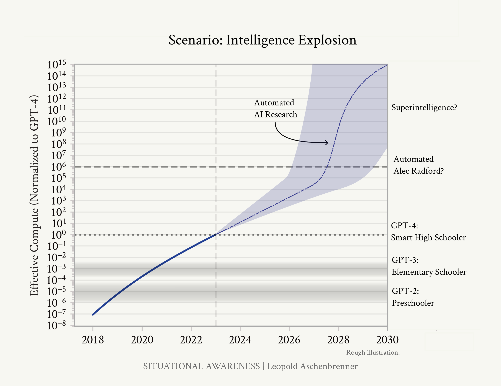
自动化AI研究可以加速算法进步，在一年内实现5+个数量级的有效计算增益。在智能爆炸结束时，我们拥有的AI系统将远比人类聪明。
自动化AI研究可能会将人类十年的算法进步压缩到不到一年内（这看起来还是保守的）。那将是5+个数量级，另一个GPT-2到GPT-4大小的跳跃，在AGI之上——一个质的跳跃，就像从学龄前儿童到聪明的高中生，在已经与专家AI研究人员/工程师一样聪明的AI系统之上。
存在几个可能的瓶颈——包括实验所需的有限计算资源、与人类的互补性，以及算法进步变得更加困难——我将逐一讨论这些问题，但似乎没有一个能够明确地减缓事物的发展速度。
不知不觉中，我们就会拥有超级智能——比人类聪明得多的AI系统，能够展现出我们甚至无法开始理解的新颖、创造性、复杂的行为——也许甚至是由数十亿个这样的系统组成的小型文明。它们的力量也将是巨大的。将超级智能应用于其他领域的研发，爆炸性的进步将从单纯的机器学习研究扩展开来；很快它们就会解决机器人学问题，在几年内在其他科学技术领域实现戏剧性飞跃，随之而来的将是工业爆炸。超级智能很可能提供决定性的军事优势，并展现出无法估量的破坏力量。我们将面临人类历史上最紧张和动荡的时刻之一。
****自动化AI研究****
我们不需要自动化一切——只需要自动化AI研究。 对AGI变革性影响的一个常见反对意见是，AI很难做所有的事情。例如，怀疑者会说，看看机器人学；即使AI在认知上达到博士水平，这仍然是一个棘手的问题。或者考虑自动化生物学研发，这可能需要大量的物理实验室工作和人体实验。
但是我们不需要机器人学——我们不需要很多东西——来让AI自动化AI研究。领先实验室的AI研究员和工程师的工作可以完全虚拟化完成，不会遇到现实世界中同样的瓶颈（尽管仍然会受到计算资源的限制，我稍后会讨论这个问题）。从宏观角度来看，AI研究员的工作相当简单：阅读机器学习文献并提出新问题或想法，实施实验来测试这些想法，解释结果，然后重复这个过程。这些都完全属于当前AI能力的简单外推可以轻松带我们达到或超越最优秀人类水平的领域，到2027年底就可以实现。
值得强调的是，过去十年中一些最重大的机器学习突破是多么简单和随意：“哦，只需要添加一些归一化”(LayerNorm/BatchNorm)或”做f(x)+x而不是f(x)“(残差连接)或”修复一个实现bug”(Kaplan → Chinchilla缩放定律)。AI研究是可以自动化的。而自动化AI研究就足以启动非凡的反馈循环。
我们将能够运行数百万个副本(很快将以10倍以上的人类速度运行)的自动化AI研究员。 即使到2027年，我们应该期待拥有数千万GPU的集群。仅训练集群就应该接近约3个数量级的增长，已经让我们达到1000万以上的A100等效单位。推理集群应该更大得多。(更多细节将在后续文章中讨论。)
这将让我们运行数百万个自动化AI研究员的副本，也许相当于1亿个人类研究员，日夜不停地工作。确切数字中包含一些假设，包括人类以100个token/分钟的速度”思考”(只是一个粗略的数量级估计，例如考虑你的内心独白)，并外推历史趋势和Chinchilla缩放定律关于前沿模型每token推理成本保持在同一水平的预测。我们还需要为运行实验和训练新模型保留一些GPU。完整计算见脚注。
另一种思考方式是，考虑到2027年的推理集群，我们应该能够每天生成相当于整个互联网数量的token。无论如何，确切的数字并不那么重要，超越了简单的可行性论证。
此外，我们的自动化AI研究员可能很快就能够以远超人类的速度运行：
通过接受一些推理惩罚，我们可以权衡运行更少的副本，以换取以更快的串行速度运行它们。(例如，我们可以通过”仅仅”运行100万个自动化研究员副本，从约5倍人类速度提高到约100倍人类速度。)
更重要的是，自动化AI研究员要做的第一个算法创新就是获得10倍或100倍的加速。Gemini 1.5 Flash比最初发布的GPT-4快约10倍，仅仅一年之后，同时在推理基准测试上提供与最初发布的GPT-4相似的性能。如果这是几百名人类研究员在一年内能找到的算法加速，那么自动化AI研究员将能够非常快速地找到类似的收益。
也就是说：期待在我们开始能够自动化AI研究后不久，就有1亿个自动化研究员，每个都以100倍人类速度工作。他们每个都能够在几天内完成一年的工作量。与今天领先AI实验室的几百名弱小人类研究员以弱小的1倍人类速度工作相比，研究工作的增长将是非凡的。
这很容易显著加速现有的算法进步趋势，将十年的进展压缩到一年内。 我们不需要假设任何全新的东西来让自动化AI研究强烈加速AI进步。通过前一篇文章中的数字分析，我们看到算法进步一直是过去十年深度学习进步的核心驱动因素；我们注意到仅在算法效率方面就有约0.5个数量级/年的趋势线，此外还有来自解除束缚(unhobbling)的额外巨大算法收益。(我认为算法进步的重要性被许多人低估了，正确认识它对于理解智能爆炸的可能性很重要。)
我们数百万的自动化AI研究员(很快以10倍或100倍人类速度工作)能否将人类研究员在十年内发现的算法进步压缩到一年内？那将是一年内5个以上的数量级。
不要仅仅想象这里有1亿个初级软件工程师实习生(我们会在接下来的几年里更早地获得这些！)。真正的自动化AI研究人员将非常聪明——除了他们的原始定量优势外，自动化AI研究人员还将比人类研究人员拥有其他巨大优势：
他们将能够阅读每一篇机器学习论文，能够深度思考实验室里运行过的每一个实验，从每个副本中并行学习，并快速积累相当于数千年的经验。他们将能够对机器学习产生比任何人类都更深入的直觉。
他们将能够轻松编写数百万行复杂代码，将整个代码库保持在上下文中，并花费相当于人类数十年(或更多)的时间检查和重新检查每一行代码的错误和优化。他们将在工作的所有方面都极其胜任。
你不必单独培训每个自动化AI研究人员(实际上，培训和入职1亿名新的人类员工将是困难的)。相反，你只需要教导和入职其中一个——然后制作副本。(而且你不必担心政治斗争、文化适应等问题，他们将以巅峰精力和专注度日夜工作。)
大量的自动化AI研究人员将能够共享上下文(甚至可能访问彼此的潜在空间等)，与人类研究人员相比，这能够实现更高效的协作和协调。
当然，无论我们最初的自动化AI研究人员有多聪明，我们很快就能够实现进一步的数量级跳跃，产生更智能的模型，在自动化AI研究方面更有能力。
想象一个自动化的Alec Radford——想象1亿个自动化的Alec Radford。我认为OpenAI的每一位研究人员都会同意，如果他们有10个Alec Radford，更别说100个或1,000个或100万个以10倍或100倍人类速度运行，他们能够很快解决很多问题。即使有各种其他瓶颈(稍后详述)，因此将十年的算法进步压缩到一年似乎非常可能。(从百万倍的研究努力中获得10倍加速，如果说这是保守估计的话。)
这将是5个以上的数量级。5个数量级的算法胜利将类似于产生GPT-2到GPT-4跳跃的规模扩展，这是从学龄前儿童到聪明高中生的能力跳跃。想象在AGI之上，在Alec Radford之上的这样一个质的跳跃。
我们从AGI到超级智能的速度惊人地可能非常快，也许在不到一年的时间内。
虽然这个基本故事出奇地有力——并且得到了彻底的经济建模工作的支持——但有一些真实且可能的瓶颈可能会减缓自动化AI研究智能爆发的速度。
我将在这里给出一个总结，然后在下面的可选部分中为感兴趣的人更详细地讨论这些：
计算资源有限: AI研究不仅需要好的想法、思考或数学——还需要运行实验来获得对你想法的经验信号。通过自动化研究劳动获得百万倍的研究努力不会意味着百万倍的进步速度，因为计算资源仍然有限——实验的有限计算资源将成为瓶颈。尽管如此，即使这不会是1,000,000倍的加速，我很难想象自动化AI研究人员不能至少10倍更有效地使用计算资源：他们将能够获得令人难以置信的机器学习直觉(已经内化了整个机器学习文献和运行过的每个先前实验！)以及相当于几个世纪的思考时间来准确找出要运行的正确实验，最佳配置，并获得最大的信息价值；他们将能够在运行即使是微小实验之前花费相当于几个世纪的工程师时间来避免错误并在第一次尝试时就做对；他们可以通过专注于最大收益来节约计算资源进行权衡；他们将能够尝试大量较小规模的实验(考虑到到那时有效的计算扩展，“较小规模”意味着能够在一年内训练100,000个GPT-4级别的模型来尝试架构突破)。一些人类研究人员和工程师即使在相同的计算量下也能够产生10倍的进步——这对自动化AI研究人员来说应该更适用。我确实认为这是最重要的瓶颈，我在下面会更深入地解决它。
互补性/长尾: 经济学的一个经典教训(参见鲍莫尔增长病(Baumol’s growth disease))是，如果你能自动化，比如说，某事的70%，你会获得一些收益，但很快剩余的30%就会成为你的瓶颈。对于任何达不到完全自动化的东西——比如说，真正好的副驾驶——人类AI研究人员仍将是主要瓶颈，使得算法进步速度的整体增长相对较小。此外，自动化AI研究可能需要一些能力的长尾——AI研究人员工作的最后10%可能特别难以自动化。这可能会在一定程度上缓解起飞，尽管我最好的猜测是这只会将事情延迟几年。也许2026/27年的模型是原型自动化研究人员，还需要一两年的时间来完成一些最终的改进，一个稍微更好的模型，推理加速，以及解决问题以实现完全自动化，最终到2028年我们获得10倍加速(并在十年末实现超级智能)。
算法进步的固有限制：也许另外5个数量级的算法效率提升在根本上是不可能的？我对此表示怀疑。虽然肯定会存在上限，但如果我们在过去十年中获得了5个数量级的提升，我们可能应该预期至少还有十年的进步空间是可能的。更直接地说，当前的架构和训练算法仍然非常初级，似乎应该有更高效的方案是可能的。生物参考类别也支持更高效算法的合理性。
想法变得更难找到，所以自动化AI研究者只会维持而不是加速当前的进步速度： 一个反对意见是，尽管自动化研究会大大增加有效的研究努力，但想法也变得更难找到。也就是说，虽然今天只需要实验室里的几百名顶级研究人员就能维持每年0.5个数量级的进步，但随着我们耗尽低垂的果实，维持这种进步将需要越来越多的努力——因此1亿名自动化研究人员将只是维持进步所必需的。我认为这个基本模型是正确的，但经验数据不匹配：研究努力增加的幅度——百万倍——远远大于维持进步所需研究努力增长的历史趋势。用经济建模术语来说，假设自动化带来的研究努力增加恰好足以保持进步不变，这是一个奇怪的”刀刃假设”。
想法变得更难找到且存在递减收益，所以智能爆炸会迅速熄火：与上述反对意见相关，即使自动化AI研究人员导致初始的进步爆发，快速进步能否持续取决于算法进步递减收益曲线的形状。同样，我对经验证据的最佳解读是，指数倾向于支持爆炸性/加速进步。无论如何，一次性提升的纯粹规模——从数百名到数亿名AI研究人员——可能在至少相当多的算法进步数量级上克服了递减收益，尽管它当然不能无限期地自我维持。
算法进步的生产函数包括两个互补的生产要素：研究努力和实验计算。数百万名自动化AI研究人员不会比人类AI研究人员拥有更多的计算资源来运行实验；也许他们只是坐在那里等待工作完成。
这可能是智能爆炸最重要的瓶颈。最终这是一个定量问题——这到底是多大的瓶颈？总的来说，我很难相信1亿个Alec Radford无法将实验计算的边际产品至少提高10倍（因此，仍然会将进步速度加快10倍）：
你可以用较少的计算资源做很多事情。 大多数AI研究的工作方式是在小规模上测试事物——然后通过缩放定律(scaling laws)进行外推。（许多关键的历史突破只需要很少的计算资源，例如原始的Transformer只在8个GPU上训练了几天。）请注意，在未来四年内基线规模扩大约5个数量级的情况下，“小规模”将意味着GPT-4规模——自动化AI研究人员将能够在一年内在其训练集群上运行100,000个GPT-4级别的实验，以及数千万个GPT-3级别的实验。（这是他们能够测试的大量潜在突破性新架构！）
大量计算用于最终预训练运行的更大规模验证——确保你对年度头条产品的边际效率提升获得足够高的置信度——但如果你在智能爆炸中快速突破各个数量级，你可以节约成本，只专注于真正的大胜利。
如前一篇文章所讨论的，从相对低计算的模型”去束缚”(unhobbling)中往往可以获得巨大收益。这些不需要大的预训练运行。智能爆炸开始时自动化AI研究很有可能发现一种在顶部进行强化学习的方法，通过去束缚获胜给我们几个数量级的提升（然后我们就开始了竞赛），这是高度合理的。
随着自动化AI研究人员找到效率提升，这将让他们运行更多实验。回想一下前一篇文章中讨论的，在两年内等效MATH性能的推理成本降低了近1000倍，以及去年从纯人类算法进步中获得的10倍通用推理收益。自动化AI研究人员要做的第一件事是快速找到类似的收益，进而，这将让他们在例如新的强化学习方法上运行100倍更多的实验。或者他们将能够快速制造在相关领域具有类似性能的更小模型（参考之前关于Gemini Flash的讨论，比GPT-4便宜近100倍），这反过来将让他们用这些更小的模型运行更多实验（再次，想象使用这些来尝试不同的强化学习方案）。可能还有其他悬而未决的问题(overhangs)，例如自动化AI研究人员可能能够快速开发更好的分布式训练方案来利用所有推理GPU（可能至少有10倍更多的计算资源）。更一般地说，他们找到的每个训练效率提升数量级都会给他们一个数量级更多的有效计算资源来运行实验。
自动化AI研究人员可能会更高效得多。很难低估如果你在第一次尝试时就做对了会减少多少实验——没有复杂的错误，对你要运行的内容更加有选择性，等等。想象一下1000个自动化AI研究人员花费一个月的等价时间检查你的代码并在你按下开始按钮之前把确切的实验做对。我询问了一些AI实验室的同事关于这个问题，他们同意：仅仅通过避免无意义的错误、第一次就做对、只运行高信息价值的实验，你应该能够很容易地在大多数项目上节省3x-10x的计算资源。
自动化AI研究人员可能拥有更好的直觉。
最近，我与一个前沿实验室的实习生交谈；他们说在过去几个月里，他们的主要经历是建议许多想要运行的实验，而他们的导师（一位资深研究员）说他们已经能预先预测结果，所以没有必要。资深研究员多年来进行的随机实验和对模型的摸索磨练了他们对什么想法可行——或不可行的直觉。类似地，看起来我们的AI系统可能很容易获得关于机器学习实验的超人直觉——它们将阅读整个机器学习文献，能够从每一个其他实验结果中学习并深入思考，它们可以很容易地被训练来预测数百万机器学习实验的结果，等等。也许它们做的第一件事之一就是建立”在看到训练的前1%后或在看到这个实验的较小规模版本后就预测大规模实验是否成功”的强大基础科学，等等。
此外，除了对研究方向的真正良好直觉之外，对实验的数十个超参数和细节拥有出色的直觉有着令人难以置信的回报。Jason将这种基于直觉第一次就做对的能力称为”yolo runs”。（Jason说，“我所知道的是，能够做到这一点的人肯定是10-100倍的AI研究员。”）
计算瓶颈意味着一百万倍更多的研究人员不会转化为一百万倍更快的研究——因此不是一夜之间的智能爆炸。但自动化AI研究人员将比人类研究员拥有非凡的优势，所以很难想象他们不能也找到一种至少10倍更有效地使用计算资源的方法——因此算法进步的10倍速度似乎完全可信。
在嵌套折叠部分有更多讨论。
解决最佳反驳论点：机器学习学术界的记录对计算瓶颈意味着什么？
我在这里花一点时间承认也许是我听到的最令人信服的反驳论点表述，来自我的朋友James Bradbury：如果更多的机器学习研究努力能如此显著地加速进步，为什么目前的学术机器学习研究社区（至少有数万人）对前沿实验室的进步贡献不大？（目前，看起来实验室内部团队，各个实验室总共可能有一千人，承担了前沿算法进步的大部分负担。）他的论点是原因在于算法进步受到计算瓶颈限制：学者们就是没有足够的计算资源。
一些回应：
经过质量调整，我认为学者可能是数千人而不是数万人（例如，只看顶尖大学）。这可能并不比各个实验室合起来多很多。（而且这比我们从自动化AI研究中获得的数亿研究人员要少得多。）
学者们研究错误的东西。直到最近（也许今天仍然如此？），绝大多数学术机器学习社区甚至没有研究大语言模型。
就研究大语言模型的学术界强有力学者而言，可能明显少于各个实验室的研究人员总和？
即使学者们确实研究像LLM预训练这样的事情，他们根本无法获得最先进的技术——实验室内部关于前沿模型训练大量细节的大量积累知识体系。他们不知道什么问题实际上是相关的，或者只能贡献一次性的结果，没有人能真正用它们做什么，因为他们的基准调试得很糟糕（所以没有人知道他们的东西是否真的是改进）。
学者们比自动化AI研究人员差得多：他们不能以10倍或100倍人类速度工作，不能阅读和内化每篇写过的机器学习论文，不能花十年检查每一行代码，不能复制自己以避免入门瓶颈，等等。
学者论点的另一个相反例子：据传GDM比OpenAI拥有更多的实验计算资源，但GDM在算法进步方面似乎并没有大幅超越OpenAI。
总的来说，我预期自动化研究人员将拥有不同的研究风格，发挥他们的优势并旨在缓解计算瓶颈。我认为对这如何发展感到不确定是合理的，但仅仅因为人类很难做到就对模型无法绕过计算瓶颈保持信心是不合理的。
例如，他们可能在早期就花费大量精力建立”如何从较小规模实验预测大规模结果”的基础科学。我预期他们能做很多人类做不到的事情，例如可能更像”在看到训练的前1%后就预测这个大规模实验是否成功”的事情。如果你是一个拥有非常超人直觉的超强自动化研究人员，这似乎很可行，这可以为你节省大量计算资源。
当我想象AI系统自动化AI研究时，我认为它们会受到计算资源的限制，但在很大程度上能够通过思考来弥补这一点，比如比人类思考多1000倍（且更快），并且思考质量高于人类（例如，因为从预测数百万实验结果的训练中获得了超人类的机器学习直觉）。除非它们在思考方面比工程方面差得多，否则我认为这可以弥补很多不足，这将在质上不同于学术界。
（除了实验计算之外，还有一个额外的瓶颈，那就是最终需要运行一个大型训练，目前这需要几个月的时间。但你可能可以在这些方面节省开支，在智能爆炸的一年中只做少数几次，每次都比实验室目前所做的更大的数量级跃进。
请注意，虽然我认为这很可能发生，但这有点可怕：这意味着，与其说是相当连续的一系列大型模型，每个都比前一代略好，下游模型智能可能更加离散/不连续。我们可能在智能爆炸期间只做一次或几次大型运行，为每次运行储备在较小规模下发现的多个数量级的算法突破。
或者你可以”花费”5个数量级计算效率收益中的1个，来在几天而不是几个月内完成训练运行。）
经济学家对AI自动化加速经济增长的经典反对意见是，不同的任务是互补的——因此，例如，自动化1800年人类劳动的80%并没有导致增长爆炸或大规模失业，而剩余的20%成为所有人类所做的工作并仍然是瓶颈。（参见例如这里的模型）。
我认为经济学家的模型是正确的。但关键是，我只在讨论经济中目前较小的一部分，而不是整个经济。在这段时间里，人们很可能仍在正常理发——机器人技术可能尚未解决，每个领域的AI可能尚未解决，社会推广可能尚未解决，等等——但他们将能够进行AI研究。正如在前一篇文章中讨论的，我认为当前AI进步的路线正在带我们走向本质上是像最聪明的人类一样智能的即插即用远程工作者；正如在这篇文章中讨论的，AI研究员的工作似乎完全在可以完全自动化的范围内。
尽管如此，在实践中，我确实期待在真正达到100%自动化方面会有一定的长尾，即使对于AI研究员/工程师的工作也是如此；例如，我们可能首先得到几乎可以作为工程师替代品的系统，但仍然需要一定程度的人类监督。
特别是，我预期AI能力水平在不同领域会有些不平衡和峰值性：它可能是比最好的工程师更好的编码者，但在某些任务或技能子集中仍有盲点；当它在最弱的领域达到人类水平时，它在更容易训练的领域（如编码）上已经大大超越了人类。（这就是为什么我认为它们能够比人类研究者更有效地使用计算资源的原因之一。到100%自动化/智能爆炸开始时，它们在某些领域已经相对于人类有巨大优势。这对于未来的超级对齐也将有重要影响，因为这意味着我们必须对齐在许多领域中实质上超人类的系统，以便对齐甚至是第一个自动化AI研究员。）
但我不期望这个阶段会持续超过几年；考虑到AI进步的步伐，我认为这很可能只是需要一些额外的”去障碍化”（移除阻止模型完成最后一英里的某些明显限制）或另一代模型就能一路走到底。
总的来说，这可能会使起飞有所缓和。而不是2027年AGI → 2028年超智能，它可能看起来更像：
2026/27：原型自动化工程师，但在其他领域有盲点。已经将工作速度提高了1.5x-2x；进步开始逐渐加速。
2027/28：原型自动化研究员，可以自动化>90%。仍有一些人类瓶颈，以及协调一个巨大的自动化研究员组织的问题需要解决，但这已经将进步速度提高了3x+。这很快完成了剩余必要的”去障碍化”，带我们走完100%自动化的剩余路程。
2028/29：10x+的进步速度 → 超智能。
这仍然非常快…
算法进步在物理上可能存在真正的上限。（例如，25个数量级的算法进步似乎是不可能的，因为那意味着能够在少于~10 FLOPs的情况下训练GPT-4级别的系统。不过你可以用当前架构获得需要25个数量级硬件的结果！）
但类似5个数量级的进步似乎很在可能性范围内；再次强调，这只需要另一个十年的趋势算法效率（甚至不包括来自去障碍化的算法收益）。
直观上，考虑到最大突破的简单性——以及当前架构和训练技术仍然显得多么原始和明显受限，我们似乎远未穷尽所有低垂的果实。例如，我认为我们很可能通过”大声思考”的AI系统(通过思维链)来引导我们走向AGI，这是相当合理的。但这肯定不是最有效的方式，肯定有通过内部状态/递归等进行推理的方法会更加高效。或者考虑自适应计算：Llama 3在预测”and”标记时仍然花费与回答复杂问题相同的计算量，这显然是次优的。我们仅仅通过小的调整就获得了巨大的数量级算法收益，而有数十个领域可能找到更高效的架构和训练程序。
生物学参考也表明存在巨大的提升空间。人类智力范围非常广泛，例如，仅通过架构的微小调整。人类的神经元数量与其他动物相似，尽管人类比那些动物聪明得多。当前的AI模型在效率方面仍然与人脑相差很多个数量级；它们可以用极少的数据(因此极少的”计算”)进行学习，而AI模型却不能，这表明我们的算法和架构存在巨大的改进空间。
当你摘取低垂的果实时，想法变得更难找到。这在技术进步的任何领域都是如此。本质上，我们在对数-对数曲线上看到一条直线：log(进步)是log(累积研究努力)的函数。每进一步的数量级进步都需要投入比上一个数量级更多的研究努力。
这导致了对intelligence explosion的两个反对意见：
自动化AI研究仅仅是维持进步所必需的(而不是显著加速进步)。
纯算法的intelligence explosion不会持续/会在算法进步变得更难找到/遇到边际收益递减时迅速消失。
在过去从事经济学研究时，我花了很多时间思考这些类型的模型。(特别是，半内生增长理论是技术进步的标准模型，捕捉了研究努力增长和想法变得更难找到这两个相互竞争的动态。)
简而言之，我认为这些反对意见背后的基本模型是合理的，但如何发展是一个经验问题——我认为他们的经验判断是错误的。
关键问题本质上是：每10倍的进步，进一步的进步是变得比10倍更难还是更容易？粗略计算(按照经济文献中的做法)帮助我们界定这个问题。
假设我们认真对待约0.5个数量级/年的算法进步趋势；这意味着4年内100倍的进步。
然而，特定领先AI实验室的质量调整人员数量/研究努力确实增长了

在20秒内通关《我的世界》。(如果你不知道这个视频中发生了什么，你并不孤单；即使是《我的世界》的大多数普通玩家也几乎不知道发生了什么。)
现在想象这应用于科学、技术和经济的所有领域。这里的误差范围当然是极大的。尽管如此，考虑这会有多么重大的影响是重要的。

站在这里是什么感觉？插图来自Wait But Why/Tim Urban。
在intelligence explosion中，爆炸式进步最初只在自动化AI研究的狭窄领域。当我们获得superintelligence，并将我们数十亿的(现在是superintelligent的)智能体应用于许多领域的研发时，我预期爆炸式进步会扩展：
AI能力爆炸。 也许我们最初的AGI存在限制，阻止它们完全自动化其他一些领域的工作(而不仅仅是AI研究领域)；自动化AI研究将快速解决这些问题，使任何和所有认知工作的自动化成为可能。
解决机器人技术。 Superintelligence不会长期保持纯认知状态。让机器人技术良好工作主要是一个ML算法问题(而不是硬件问题)，我们的自动化AI研究人员可能能够解决它(更多内容见下文)。工厂将从人类运营，到使用人类体力劳动的AI指导，再到很快完全由机器人群运营。
显著加速科学和技术进步。 是的，仅凭爱因斯坦一人无法发展神经科学和建立半导体产业，但十亿个superintelligent的自动化科学家、工程师、技术专家和机器人技术员(机器人以10倍或更快的人类速度移动！)将在数年内在许多领域取得非凡进展。(这里有一个很好的短篇小说，展示了AI驱动的研发可能是什么样子。)十亿个superintelligence将能够将人类研究人员在下个世纪要做的研发努力压缩到数年内。想象一下，如果20世纪的技术进步被压缩到不到十年内。我们将在数年内从飞行被认为是海市蜃楼，到飞机，再到人类登月和洲际弹道导弹。这就是我对2030年代科学技术领域的期望。
一场工业和经济大爆发。 极其加速的技术进步，结合自动化所有人类劳动的能力，可能会戏剧性地加速经济增长（想象一下：自我复制的机器人工厂迅速覆盖整个内华达沙漠）。增长的提升可能不仅仅是从每年2%到每年2.5%；相反，这将是增长模式的根本转变，更类似于工业革命时期从极缓慢增长到每年几个百分点的历史性跨越。我们可能看到每年30%甚至更高的经济增长率，很可能一年内出现多次翻倍。这从经济学家的经济增长模型中可以相当直接地推导出来。可以肯定的是，这很可能会被社会摩擦所延迟；繁复的法规可能确保律师和医生仍然需要是人类，即使AI系统在这些工作上要好得多；社会抵制变化的步伐时，沙子肯定会被扔进快速扩张的机器人工厂的齿轮中；也许我们会想保留人类保姆；所有这些都会拖慢整体GDP统计数据的增长。尽管如此，在我们移除人为障碍的任何领域（例如，竞争可能迫使我们在军事生产方面这样做），我们都会看到工业大爆发。
| 增长模式 | 开始主导的日期 | 全球经济翻倍时间（年） |
|---|---|---|
| 狩猎 | 公元前2,000,000年 | 230,000 |
| 农业 | 公元前4700年 | 860 |
| 科学与商业 | 公元1730年 | 58 |
| 工业 | 公元1903年 | 15 |
| 超级智能？ | 公元2030年 | ???? |
增长模式的转变并非史无前例：随着文明从狩猎、农业、科学与商业的繁荣，到工业，全球经济增长的步伐不断加速。超级智能可能引发另一次增长模式的转变。基于Robin Hanson的”作为指数模式序列的长期增长”。
提供决定性和压倒性的军事优势。 即使是早期的认知超级智能在这里可能就已经足够了；也许某种超人类的黑客方案可以使敌方军队失效。无论如何，军事力量和技术进步在历史上一直紧密相关，随着异常快速的技术进步，将会出现相应的军事革命。无人机群和机器人军队将是一个大事件，但它们只是开始；我们应该期待完全新型的武器，从新颖的大规模杀伤性武器到无懈可击的激光导弹防御系统，再到我们还无法理解的东西。与超级智能前的武器库相比，这就像21世纪的军队对抗19世纪的马匹和刺刀队。（我在后面的文章中讨论了超级智能如何能够带来决定性的军事优势。）
能够推翻美国政府。 任何控制超级智能的人都很可能拥有足够的力量从超级智能前的力量手中夺取控制权。即使没有机器人，小型的超级智能文明也能够黑客攻击任何无防护的军事、选举、电视等系统，巧妙地说服将军和选民，在经济上超越民族国家，设计新的合成生物武器，然后用比特币付钱给人类来合成它，等等。在16世纪初，科尔特斯和大约500名西班牙人征服了数百万人的阿兹特克帝国；皮萨罗和约300名西班牙人征服了数百万人的印加帝国；阿方索和约1000名葡萄牙人征服了印度洋。他们没有神一般的力量，但旧世界的技术优势以及在战略和外交狡猾方面的优势导致了完全决定性的优势。超级智能可能看起来类似。
对这里所提出的说法的一个常见反对意见是，即使AI能够完成认知任务，机器人技术远远落后，因此将对任何现实世界的影响产生制约。
我曾经对此表示同情，但我已经确信机器人不会成为障碍。多年来，人们声称机器人是硬件问题——但机器人硬件正在很好地得到解决。
越来越清楚的是，机器人是一个ML算法问题。LLMs有一个更容易的启动方式：你有整个互联网可以预训练。机器人动作没有类似的大型数据集，因此需要更巧妙的方法（例如使用多模态模型作为基础，然后使用合成数据/模拟/巧妙的RL）来训练它们。
现在有大量精力投入到解决这个问题上。但即使我们在AGI之前没有解决它，我们数以亿计的AGIs/超级智能将成为出色的AI研究者（这是本文的核心论证！），他们很可能会找出让令人惊叹的机器人工作的ML方法。
因此，虽然机器人可能导致几年的延迟是合理的（解决ML问题，在物理世界中测试，这本质上比在模拟中测试慢，在机器人能够自己建造工厂之前提高初始机器人生产等等）——我认为不会超过这个程度。
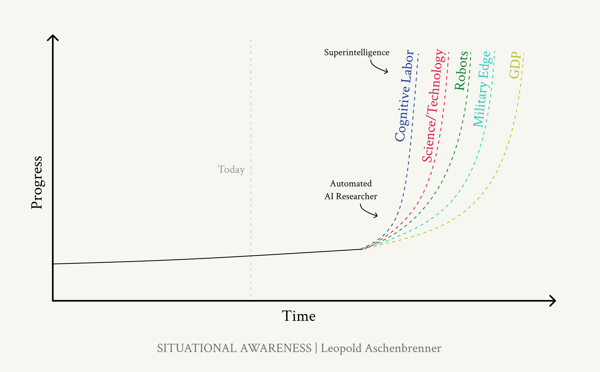
爆炸性增长始于AI研发的较窄领域；随着我们将超级智能应用于其他领域的研发，爆炸性增长将会扩大。
所有这些在2030年代如何发展很难预测（这是另一个时间的故事）。但有一件事，至少是明确的：我们将迅速陷入人类有史以来面临的最极端的情况。
人类水平的AI系统，AGI，本身就会产生重大影响——但在某种意义上，它们只是我们已经知道的更高效版本。但是，很可能在短短一年内，我们将过渡到更加异质的系统，这些系统的理解和能力——其原始力量——将超过甚至整个人类的总和。存在真正的可能性，我们将失去控制，因为在这种快速转变期间，我们被迫将信任交给AI系统。
更一般地说，一切都将开始以令人难以置信的速度发生。世界将开始变得疯狂。假设我们在短短几年内就经历了20世纪的地缘政治狂热和人为危险；这就是我们在超级智能出现后应该预期的情况。到最后，超级智能AI系统将运行我们的军事和经济。在所有这些疯狂中，我们做出正确决定的时间将极其稀缺。挑战将是巨大的。我们需要竭尽全力才能完整地度过这一切。
智能爆炸和超级智能出现后的初期将是人类历史上最动荡、最紧张、最危险和最疯狂的时期之一。
到本十年末，我们很可能就身处其中。
面对智能爆炸的可能性——超级智能的出现——常常让人想起早期关于核链式反应可能性的辩论——以及它将带来的原子弹。H·G·威尔斯在1914年的小说中预言了原子弹。当西拉德在1933年首次构想链式反应的想法时，他无法说服任何人；这纯属理论。一旦1938年裂变被实证发现，西拉德再次惊慌失措，强烈主张保密，一些人开始意识到炸弹的可能性。爱因斯坦此前没有考虑过链式反应的可能性，但当西拉德向他提出时，他很快看出了其中的含义，并愿意做任何需要做的事情；他愿意敲响警钟，不怕显得愚蠢。但费米、玻尔和大多数科学家认为”保守”的做法是淡化处理，而不是认真对待炸弹可能性的非凡含义。保密（避免与德国人分享他们的进展）和其他全力以赴的努力在他们看来是荒谬的。链式反应听起来太疯狂了。（甚至当事实证明，炸弹距离成为现实只有半个十年时。）
我们必须再次面对链式反应的可能性。也许这对你来说听起来很投机。但在AI实验室的资深科学家中，许多人认为快速智能爆炸是非常合理的。他们能够看到它。超级智能是可能的。
系列下一篇：
III. 挑战 – IIIa. 冲向万亿美元集群
冷战的许多反常现象（参见丹尼尔·埃尔斯伯格的书）源于仅仅用氢弹替代原子弹，而没有根据能力的大幅提升调整核政策和战争计划。
AI研究员的工作也是AI实验室的AI研究员非常了解的工作——所以对他们来说，优化模型以胜任这项工作将特别直观。这样做将有巨大的动机来帮助他们加速研究和实验室的竞争优势。
顺便说一下，这在AI风险序列方面提出了一个重要观点。人们指出的一个常见AI威胁模型是AI系统开发新型生物武器，并构成灾难性风险。但如果AI研究比生物研发更容易自动化，我们可能在遇到极端AI生物威胁之前就会出现智能爆炸。这很重要，例如，关于我们是否应该期待在AI变得疯狂之前及时出现”生物警示信号”。
如前所述，GPT-4 API今天的成本比GPT-3发布时更低——这表明推理效率提升的趋势足够快，即使模型变得更强大，推理成本也能保持大致恒定。同样，仅在GPT-4发布后的一年中就有巨大的推理成本改善；例如，当前版本的Gemini 1.5 Pro超越了原始GPT-4，同时成本大约便宜10倍。
我们也可以通过考虑Chinchilla缩放定律来更具体地理解这一点。在Chinchilla缩放定律下，模型大小——因此推理成本——随训练成本的平方根增长，即有效计算OOM扩展的一半OOM。然而，在之前的文章中，我提出算法效率以与计算扩展大致相同的速度推进，即它大约占有效计算扩展的一半OOM。如果这些算法改进也转化为推理效率，那意味着算法效率将补偿推理成本的天然增长。
在实践中，训练计算效率通常（但并非总是）转化为推理效率提升。然而，还有许多推理效率提升并非训练效率提升。因此，至少在大致的范围内，假设前沿模型的$/token保持大致相似并不疯狂。
（当然，它们会使用更多token，即更多测试时计算。但这已经是这里计算的一部分，通过将人类等价物定价为100 tokens/分钟。）
GPT-4 Turbo大约是$0.03/1K tokens。我们假设我们会有数千万个A100等价物，如果是A100等价物，每GPU成本约$1小时。如果我们使用API成本将GPU转换为生成的token，这意味着数千万GPU * 1/GPU − 小时 * 33Ktokens/ = ~ 一万亿tokens/小时。假设人类进行100 tokens/分钟的思考，这意味着一个人类等价物是6,000 tokens/小时。一万亿tokens/小时除以6,000 tokens/人类小时 = ~2亿人类等价物——即相当于日夜运行2亿人类研究员。（即使我们将一半GPU用于实验计算，我们也能得到1亿人类研究员等价物。）
前面的脚注估计约1T tokens/小时，即每天24T tokens。在之前的文章中，我注意到一个公共去重CommonCrawl约有30T tokens。
Jacob Steinhardt估计，k³并行复制模型可以用单一模型替代，速度提升k²倍，基于推理权衡与平铺方案的数学计算（理论上即使k为100或更高也能工作）。假设初始速度已经约为人类速度的5倍（基于GPT-4发布时的速度）。那么，通过承受这种推理损失（k约为5），我们将能够以约100倍人类速度运行约100万个自动化AI研究员。↩︎
此来源显示Flash的吞吐量约为GPT-4 Turbo的6倍，而GPT-4 Turbo比原始GPT-4更快。延迟可能也大约快10倍。↩︎
Alec Radford是OpenAI极具天赋和多产的研究员/工程师，推动了许多最重要的进展，尽管他有些低调。↩︎
例如，在GPT-4基础上25个OOM的算法进展显然是不可能的：这意味着仅用少量FLOP就能训练GPT-4级别的模型。↩︎
10倍速度机器人在现实世界进行物理研发是”慢版本”；实际上超级智能会尝试在模拟中进行尽可能多的研发，如AlphaFold或制造”数字双胞胎”。↩︎
为什么”异星工厂世界”——建造一个工厂，生产更多工厂，产生更多工厂，工厂数量倍增直到最终整个星球快速被工厂覆盖——在今天不可能？因为劳动力受限——你可以积累资本（工厂、工具等），但由于受固定劳动力约束会遇到收益递减。通过机器人和AI系统能够完全自动化劳动，消除了这种约束；机器人工厂可以以几乎不受约束的方式生产更多机器人工厂，导致工业爆炸。请在此处查看更多经济增长模型。↩︎
IIIa. 万亿美元集群竞赛
最非凡的技术资本加速已经启动。随着AI收入快速增长，在本十年结束前，将有数万亿美元投入GPU、数据中心和电力建设。包括将美国电力生产增长数十个百分点在内的工业动员将会非常激烈。
本文内容：
切换
训练算力
整体算力
能否完成？可以完成吗？
AI收入
历史先例
电力
芯片
民主集群
你看，我告诉过你不把整个国家变成工厂就无法完成。你正是这样做的。
尼尔斯·玻尔（1944年得知曼哈顿计划规模后对爱德华·泰勒说）
万亿美元集群。来源：DALLE。
AGI竞赛不仅仅在代码和笔记本电脑后面展开——这将是一场动员美国工业实力的竞赛。与我们最近从硅谷看到的其他任何事物不同，AI是一个巨大的工业过程：每个新模型都需要一个巨型新集群，很快需要巨型新电厂，最终需要巨型新芯片制造厂。涉及的投资令人震惊。但在幕后，它们已经在进行中。
在这篇文章中，我将通过数字向您展示这意味着什么：
随着AI产品收入快速增长——对于Google或Microsoft等公司，到约2026年可能达到1000亿美元年度运营收入，使用强大但未达到AGI的系统——这将激发更大的资本动员，到2027年总AI投资可能每年超过1万亿美元。
我们正走向到2028年单个训练集群成本数千亿美元的道路——这些集群需要相当于美国一个小/中型州的电力，比国际空间站更昂贵。
到本十年末，我们将走向1万亿美元以上的单个训练集群，需要相当于美国电力生产20%以上的电力。数万亿美元的资本支出将每年总共生产数亿个GPU。
Nvidia在过去一年中数据中心销售从约140亿美元年化爆炸性增长到约900亿美元年化，震惊了世界。但这仍然只是一个开始。
此前，我们发现AI训练算力大约有0.5 OOM/年的趋势增长¹。如果这一趋势在本十年剩余时间内持续，对最大训练集群意味着什么？
| 年份 | OOM | H100等效数量 | 成本 | 电力 | 电力参考类别 |
|---|---|---|---|---|---|
| 2022 | ~GPT-4集群 | ~1万 | ~5亿美元 | ~10MW | ~1万个普通家庭 |
| ~2024 | +1 OOM | ~10万 | 数十亿美元 | ~100MW | ~10万个家庭 |
| ~2026 | +2 OOM | ~100万 | 数百亿美元 | ~1GW | 胡佛大坝，或大型核反应堆 |
| ~2028 | +3 OOM | ~1000万 | 数千亿美元 | ~10GW | 美国小/中型州 |
| ~2030 | +4 OOM | ~1亿 | 1万亿美元+ | ~100GW | >美国电力生产的20% |
扩展最大训练集群的粗略估算。
年份
OpenAI GPT-4技术报告表明GPT-4于2022年8月完成训练。之后我们继续大约0.5 OOM/年的趋势。
H100等效
Semianalysis、摩根大通等估计GPT-4在约2.5万个A100上训练，H100性能是A100的2-3倍。
成本
人们经常引用”GPT-4训练1亿美元”这样的数字，使用的只是GPU租用成本（即”租用这种规模集群3个月训练需要多少钱”）。但这是错误的。重要的是类似于建造集群的实际成本。如果你想要世界上最大的集群之一，你不能只租用3个月！而且，你需要的计算力不仅仅用于旗舰训练运行：会有大量去风险实验、失败运行、其他模型等。
GPT-4集群成本近似：
公开估计显示，GPT-4 集群大约有 25,000 个 A100。
假设每个 A100 每小时成本为 1 美元，运行 2-3 年，大致需要 5 亿美元的成本。
或者，你可以估算为每个 H100 约 2.5 万美元的成本，10,000 个 H100 等效单元，而 Nvidia GPU 大约占集群成本的一半（其余部分是电力、物理数据中心、冷却、网络、维护人员等）。
（例如，这份总拥有成本(total-cost-of-ownership)分析估计，大型集群成本中约 40% 是 H100 GPU 本身，另外 13% 用于 Nvidia 的 Infiniband 网络设备。也就是说，如果不考虑资本成本，GPU 约占成本的 50%，加上网络设备，Nvidia 获得集群成本的 60% 多一点。）
每一代 Nvidia 产品的 FLOP/$ 都有所提升，但提升幅度不大。例如，H100 到 B100 的 FLOP/$ 提升可能约为 1.5 倍：B100 实际上相当于两个 H100 拼接在一起，但零售价格 H100 在 FLOP/$ 方面并没有太大改进（在不使用 fp8 的情况下芯片性能提升 2 倍，但成本也大致翻倍），如果算上 fp8 改进可能有 1.5 倍——这还是两年一代的提升。
虽然我认为由于利润压缩，FLOP/$ 的进一步改进存在一些有利因素，但由于 GPU 可能会变得极度稀缺，价格也可能更加昂贵。AI 芯片专业化带来的收益将继续存在，但考虑到芯片已经相当专业化（例如专门针对 Transformers 设计，并且已经达到 fp8/fp4 精度），摩尔定律如今进展缓慢，我不确定 FLOP/$ 是否还会有颠覆性的技术改进。如果你查看 Epoch 的数据，过去十年顶级机器学习 GPU 的 FLOP/$ 提升似乎不到 10 倍，而且基于上述原因，我预期这种提升速度可能会放缓。
FLOP/$ 每年约 35% 的改进将使我们能够以 1 万亿美元的成本构建 +4 个数量级(OOM)的集群。也许 FLOP/$ 改进更快，但数据中心的资本支出也会变得更昂贵——仅仅因为你需要实际建设新的电力设施，预先投入大量资本支出，而不是仅仅租用现有的已折旧电厂。
这些只是非常粗略的数字。如果例如 1 万亿美元的集群能够更高效地完成并实际产生更多如 +4.5 个数量级的计算量，这完全在误差范围内。
一个 H100 功耗为 700W，但你需要大量数据中心电力（冷却、网络、存储）；Semianalysis 估计每个 H100 约需要 1,400W。
FLOP/Watt 方面有一些收益，但一旦我们用尽了 AI 芯片专业化带来的收益（见之前的脚注），例如降到最低可能的精度，这些收益似乎相当有限（主要只是芯片工艺改进，这个过程很慢）。也就是说，随着电力成为更大的约束（因此成为成本的更大组成部分），芯片设计可能会专门针对功耗效率进行优化，以牺牲 FLOP 为代价。尽管如此，冷却、网络、存储等仍然存在电力需求（在上述 H100 数据中，这已经大约占到一半的电力需求）。
对于这些粗略估算，让我们以每个 H100 等效单元 1kW 来计算；再次强调，这些只是粗略的估算。（如果 FLOP/Watt 出现意外突破，我预期会有相同的电力支出，只是计算量收益会更大。）
一个 10GW 的集群连续运行一年需要 87.6 TWh。相比之下，俄勒冈州每年消耗约 27 TWh 电力，华盛顿州每年消耗约 92 TWh。
一个 100GW 的集群连续运行一年需要 876 TWh，而美国年总发电量约为 4,250 TWh。
这可能看起来难以置信——但似乎正在发生。扎克伯格购买了 35 万个 H100。亚马逊在核电站旁购买了一个 1GW 数据中心园区。有传言称一个 1GW、140 万 H100 等效的集群（约 2026 年集群）正在科威特建设。媒体报道称，微软和 OpenAI 据传正在开发一个 1000 亿美元的集群，计划于 2028 年完成（成本可与国际空间站相媲美！）。随着每一代模型都震撼世界，进一步的加速可能还在后面。
也许最疯狂的部分是，支付意愿目前甚至似乎不是约束性因素，至少对训练集群而言如此。真正的约束是找到基础设施本身：“我在哪里能找到 10GW？”（1000 亿美元以上、趋势 2028 年集群所需的电力）是旧金山的热门话题。任何计算专家都在考虑的是确保电力、土地、许可和数据中心建设。虽然你可能需要等待一年才能获得 GPU，但这些基础设施的交付周期要长得多。
万亿美元集群——比 GPT-4 集群多 +4 个数量级，按当前趋势约为 2030 年的训练集群——将是一个真正非凡的努力。它需要的 100GW 电力相当于美国电力生产的 20% 以上；想象的不仅仅是一个装有 GPU 的简单仓库，而是数百座发电站。也许需要一个国家联盟才能实现。
（请注意，我认为我们很可能只需要约 1000 亿美元的集群，甚至更少，就能实现 AGI。1 万亿美元集群可能是我们用来训练和运行超级智能的，或者如果 AGI 比预期更难实现时我们用于 AGI 的。无论如何，在后 AGI 世界中，拥有最多计算能力可能仍然非常重要。）
以上只是最大训练集群的粗略数字。整体投资可能要大得多：很大一部分 GPU 可能将用于推理（实际运行 AI 系统以提供产品的 GPU），并且可能有多个玩家在竞赛中拥有巨型集群。
我的粗略估计是，2024 年已经有 1000-2000 亿美元的 AI 投资：
Nvidia数据中心收入很快将达到约250亿美元/季度的运营速度，即约1000亿美元的资本支出仅通过Nvidia一家公司流动。但当然，Nvidia不是唯一的参与者（Google的TPU也很棒！），数据中心资本支出的近一半用于芯片以外的东西（场地、建筑、冷却、电力等）
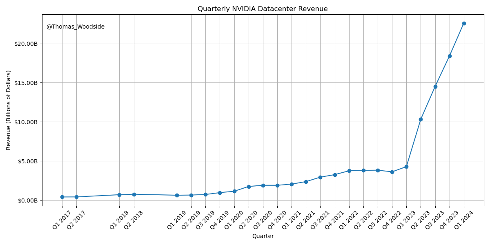
Nvidia季度数据中心收入。图表来源。
大型科技公司一直在大幅提升其资本支出数字：微软和谷歌今年的资本支出可能达到500亿美元以上，AWS和Meta达到400亿美元以上。这些并不全是AI投资，但由于AI繁荣，他们的资本支出合计同比增长了500-1000亿美元，即使如此，他们仍在削减其他资本支出以将更多支出转向AI。此外，其他云服务提供商、公司（例如，今年在AI上的投资）以及民族国家也在投资AI。
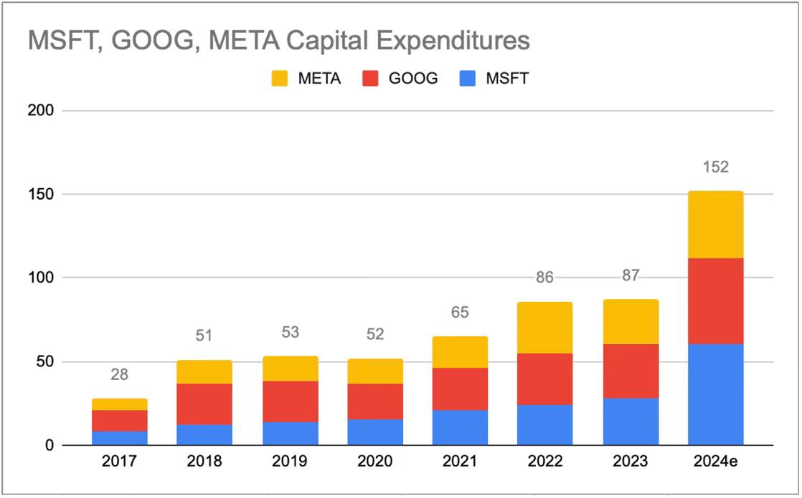
自ChatGPT引发AI繁荣以来，大型科技公司资本支出增长极其迅速。图表来源。
让我们展望未来。我的最佳估计是整体计算投资的增长速度将比最大训练集群的3倍/年要慢，比如说2倍/年。
| 年份 | 年度投资 | AI加速器出货量（以H100等效计算） | 电力占美国电力生产的百分比 | 芯片占当前领先TSMC晶圆生产的百分比 |
|---|---|---|---|---|
| 2024 | ~1500亿美元 | ~500-1000万 | 1-2% | 5-10% |
| ~2026 | ~5000亿美元 | ~数千万 | 5% | ~25% |
| ~2028 | ~2万亿美元 | ~1亿 | 20% | ~100% |
| ~2030 | ~8万亿美元 | 数亿 | 100% | 4倍当前产能 |
推演全球AI投资总额趋势。粗略的估算。
这些不仅仅是我个人的特殊数字。AMD预测到2027年AI加速器市场将达到4000亿美元，这意味着AI总支出超过7000亿美元，与我的数字非常接近（而且他们肯定比我少很多”AGI倾向”）。据报道，Sam Altman正在洽谈为一个”高达7万亿美元”的资本支出项目筹集资金，以建设AI计算能力（这个数字被广泛嘲笑，但如果你在这里计算数字，似乎就不那么疯狂了…）。无论如何，这种大规模扩张正在发生。
这里假设的投资规模可能看起来很不现实。但需求方和供给方似乎都可以支持上述轨迹。经济回报证明投资的合理性，支出规模对于新的通用技术来说并非史无前例，电力和芯片的工业动员是可行的。
如果企业期望经济回报能够证明其合理性，它们就会进行大量AI投资。
报告显示，OpenAI在2023年8月的收入运营速度为10亿美元，在2024年2月为20亿美元。这大致是每6个月翻一番。如果这一趋势保持下去，即使不考虑任何下一代模型的大幅激增，我们应该在2024年末/2025年初看到约100亿美元的年运营速度。一项估计显示微软已经有约50亿美元的增量AI收入。
到目前为止，AI投资每增加10倍似乎都能产生必要的回报。GPT-3.5引发了ChatGPT狂热。GPT-4集群的估计成本为5亿美元，通过微软和OpenAI报告的数十亿年收入（见上述计算）就能收回成本，如果微软/OpenAI的AI收入继续走向100亿美元以上的收入运营速度，数十亿美元的”2024级”训练集群将很容易收回成本。这种繁荣是投资主导的：从大量GPU订单到建设集群、构建模型和推出需要时间，今天规划的集群需要多年时间。但如果最后一次GPU订单的回报持续实现，投资将继续飙升（并超过收入），投入更多资本押注下一个10倍增长将继续获得回报。
我喜欢考虑的AI收入的一个关键里程碑是：大型科技公司（谷歌、微软、Meta等）何时会从AI（产品和API）达到1000亿美元的收入运营速度？这些公司今天的收入大约在1000-3000亿美元；因此1000亿美元将开始代表其业务的很大一部分。非常天真地推断每6个月翻一番，假设我们在2025年初达到100亿美元的收入运营速度，这表明这将在2026年中期发生。
这可能看起来是一个延伸，但在我看来，达到那个里程碑需要出人意料的少想象力。例如，大约有3.5亿Microsoft Office付费订阅用户——你能让其中三分之一愿意为AI附加组件每月支付100美元吗？对于普通工作者来说，这每月只需要获得几小时的生产力提升；在未来几年内，足够强大的模型似乎很容易做到这一点。
很难夸大随之而来的反响。这将使AI产品成为美国最大公司的最大收入驱动力，也是迄今为止他们最大的增长领域。对这些公司整体收入增长的预测将飙升。股市将跟进；我们可能很快就会看到第一家10万亿美元的公司。届时，大型科技公司将愿意全力以赴，每家都投资数千亿美元（至少）进一步扩展AI。我们可能会看到第一次数千亿美元的公司债券销售。
超过1000亿美元，就更难看清轮廓了。但如果我们真的走在通往AGI的道路上，回报将会在那里。全球白领工人每年的工资总额达数十万亿美元；一个即插即用的远程工作者，能够自动化哪怕一小部分白领/认知工作（想象一下，比如一个真正自动化的AI编码员），就能为万亿美元的集群买单。如果别的不行，国家安全的重要性很可能激发政府项目，将国家资源整合在AGI竞赛中（稍后详述）。
到2027年每年1万亿美元的AI投资总额似乎令人难以置信。但值得看看其他历史参考类别：
在资金投入的巅峰时期，曼哈顿计划和阿波罗计划分别达到了GDP的0.4%，相当于今天每年约1000亿美元（出乎意料地小！）。以每年1万亿美元计算，AI投资将占GDP的约3%。
1996-2001年间，电信公司投资了近1万亿美元（按今天的价值计算）用于建设互联网基础设施。
从1841年到1850年，英国私营铁路投资累计约占当时英国GDP的40%。美国GDP的类似比例相当于十年内约11万亿美元。
绿色转型正在花费数万亿美元。
快速增长的经济体通常将GDP的很大一部分用于投资；例如，中国二十年来一直将超过40%的GDP用于投资（按美国GDP计算，相当于每年11万亿美元）。
在历史上最紧急的国家安全情况——战争时期——为资助国家努力而举债往往占GDP的巨大比例。在第一次世界大战期间，英国、法国和德国的借款超过其GDP的100%，而美国借款超过20%；在第二次世界大战期间，英国和日本借款超过其GDP的100%，而美国借款超过GDP的60%（相当于今天超过17万亿美元）。
到2027年每年1万亿美元的AI总投资将是戏剧性的——属于有史以来最大的资本建设之一——但并非史无前例。而在本十年末建成万亿美元的单个训练集群似乎是可能的。
在供应端，可能最大的约束是电力。已经在较近期的规模上（1GW/2026，尤其是10GW/2028），电力已成为约束性因素：根本没有太多闲置容量，而电力合同通常是长期锁定的。建设一个新的千兆瓦级核电站需要十年时间。（我想知道什么时候我们会开始看到科技公司收购铝冶炼公司以获得其千兆瓦级电力合同。）
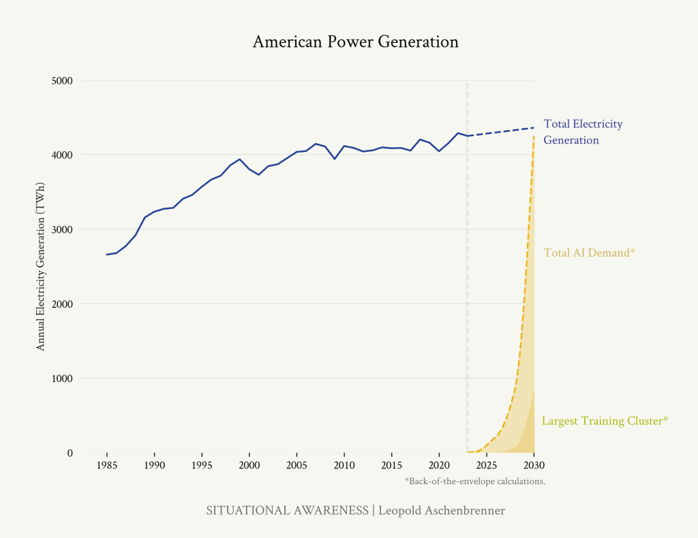
将美国总电力生产趋势与我们对AI电力需求的粗略估算进行比较。
美国总发电量在过去十年中仅增长了5%。公用事业公司对AI感到兴奋（他们现在估计未来5年增长4.7%，而不是2.6%！）。但他们几乎没有将即将到来的情况计入价格。仅万亿美元的100GW集群就需要在6年内使用当前美国发电量的约20%；加上大规模推理容量，需求将高出数倍。
对大多数人来说，这似乎完全不可能。有些人押注于中东专制国家，他们一直在四处提供无限电力和巨型集群，以让其统治者在AGI桌上占有一席之地。
但在美国完全可以做到这一点：我们有丰富的天然气。
为10GW集群供电只需要美国天然气产量的几个百分点，并且可以快速完成。
即使是100GW集群也出人意料地可行。
目前仅Marcellus/Utica页岩（宾夕法尼亚州周围）就每天生产约360亿立方英尺的天然气；这足以用发电机持续产生略低于150GW的电力（联合循环发电厂由于效率更高可以输出250GW）。
100GW集群需要约1200口新井。每台钻机每月可以钻约3口井，所以40台钻机（Marcellus目前的钻机数量）可以在不到一年的时间内建立100GW的生产基地。Marcellus在2019年时钻机数量还有约80台，所以增加40台钻机来建立生产基地并不困难。
更一般地说，美国天然气产量在十年内增长了一倍多；简单地延续这一趋势就可以为多个万亿美元的数据中心供电。
更困难的部分是建造足够的发电机/涡轮机；这不会是微不足道的，但用约1000亿美元的资本支出建设100GW的天然气发电厂似乎是可行的。联合循环发电厂可以在约两年内建成；发电机的时间表甚至更短。
在美国进行数万亿美元数据中心建设的障碍完全是自造的。善意但僵化的气候承诺（不仅来自政府，还有微软、谷歌、亚马逊等公司的绿色数据中心承诺）阻碍了明显而快速的解决方案。至少，即使我们不使用天然气，广泛的去监管议程也将释放太阳能/电池/小型模块化反应堆/地热大型项目。许可、公用事业监管、FERC输电线路监管和NEPA环境审查使本应需要几年的事情需要十年或更长时间。我们没有那么多时间。
我们将把AGI数据中心推向中东，置于残暴、反复无常的专制者的控制之下。我也更喜欢清洁能源——但这对美国国家安全来说实在太重要了。我们需要新的决心水平来实现这一目标。电力约束可以、必须并且将会得到解决。
虽然人们在思考AI供应约束时通常想到芯片，但它们可能比电力的约束更小。全球AI芯片生产仍然只占台积电领先工艺生产的很小百分比，可能不到10%。通过AI在台积电生产中占更大份额，有很大的增长空间。
确实，2024年AI芯片的产量（约500-1000万个H100等效芯片）几乎就足够支撑数千亿美元的集群（如果它们都被分配给一个集群的话）。从纯逻辑晶圆厂的角度来看，台积电一年约100%的产出已经可以支撑万亿美元级别的集群（同样，如果所有芯片都用于一个数据中心的话）。当然，并非所有的台积电产能都能转向AI，也不是一年中所有的AI芯片生产都会用于一个训练集群。到2030年，AI芯片的总需求（包括推理和多个参与者）将是台积电目前先进逻辑芯片总产能的数倍，仅仅是为了AI。台积电在过去5年中约翻了一番；他们可能需要至少以两倍的速度扩张才能满足AI芯片需求。需要大规模的新晶圆厂投资。
即使原始逻辑晶圆厂不会成为约束，芯片级封装(CoWoS)先进封装（连接芯片到内存，也由台积电、英特尔等制造）和HBM内存（需求量巨大）已经成为当前AI GPU扩展的关键瓶颈；这些更专门针对AI，不像纯逻辑芯片，所以现有产能较少。在短期内，这些将是生产更多GPU的主要约束，随着AI的扩展，这些将成为巨大的约束。不过，这些相对来说”容易”扩展；看到台积电今年真正建设”绿地”晶圆厂（即从头开始的全新设施）来大规模扩大CoWoS生产，这非常令人难以置信（英伟达甚至开始寻找CoWoS替代方案来解决短缺问题）。
一个新的台积电千兆晶圆厂（技术奇迹）的资本支出约为200亿美元，每月生产10万片晶圆。到本世纪末，为了每年数亿个AI GPU，台积电需要建设数十个这样的晶圆厂——以及内存、先进封装、网络等方面的大规模建设，这将占资本支出的很大一部分。总计可能超过1万亿美元的资本支出。这将是激烈的，但可行的。（也许最大的障碍不是可行性，而是台积电甚至不愿尝试——台积电似乎还没有被AI扩展说服！他们认为AI”只会”以缓慢的50% CAGR增长。）
最近的美国政府努力，如《芯片法案》，一直试图将更多AI芯片生产迁回美国（作为台湾突发事件的保险）。虽然将更多AI芯片生产迁回美国会很好，但这不如将实际的数据中心（AGI所在之处）设在美国重要。如果在海外进行芯片生产就像在海外拥有铀矿床，那么将AGI数据中心设在海外就像将真正的核武器在海外建造和储存。鉴于我们在美国建设晶圆厂实践中看到的功能障碍和成本，我的猜测是我们应该优先考虑美国的数据中心，同时在日本和韩国等民主盟友的晶圆厂项目上加大投注——那里的晶圆厂建设。
在这个十年结束之前，将建设价值数万亿美元的计算集群。唯一的问题是它们是否会在美国建设。有传言称一些人正在押注在其他地方建设，特别是在中东。我们真的希望曼哈顿项目的基础设施被某个变幻无常的中东独裁政权控制吗？
今天正在规划的集群很可能就是训练和运行AGI和超级智能的集群，不仅仅是”酷炫的大科技产品集群”。国家利益要求这些集群在美国（或亲密的民主盟友）建设。其他任何做法都会造成不可逆转的安全风险：它有AGI权重被盗的风险（并可能被运送到中国）（稍后详述）；当AGI竞赛激烈时，它有这些独裁政权物理夺取数据中心（自己建造和运行AGI）的风险；或者即使这些威胁只是隐含地被运用，它也将AGI和超级智能置于令人讨厌的独裁者的突发奇想之下。美国在70年代深深后悔对中东的能源依赖，我们努力摆脱他们的控制。我们不能再犯同样的错误。
这些集群可以在美国建设，我们必须团结起来确保它们在美国建设。美国国家安全必须放在首位，在中东自由流动的资金、奥秘的监管，甚至是令人钦佩的气候承诺的诱惑之前。我们面临着真正的制度竞争——必要的产业动员只能在”自上而下”的专制国家进行吗？如果美国企业得到解放，美国可以像其他任何国家一样建设（至少在红州）。愿意使用天然气，或至少是广泛的放松管制议程——NEPA豁免，在联邦层面修复FERC和输电许可，推翻公用事业监管，使用联邦权力解锁土地和通行权——是国家安全优先事项。
无论如何——指数级增长现在正在全面展开。
在”旧时代”，当AGI还是一个肮脏的词汇时，我和一些同事曾经制作AGI路径可能是什么样子的理论经济模型。这些模型的一个特征曾经是假设的”AI觉醒”时刻，当世界开始意识到这些模型有多强大并开始迅速增加投资——最终将GDP的多个百分点投入到最大的训练运行中。
那时看起来很遥远，但那个时候已经到来。2023年是”AI觉醒”。在幕后，最令人震惊的技术资本加速已经启动。
准备好承受G力。
系列中的下一篇文章：
（所有这些对NVDA/TSM等意味着什么，我留给读者作为练习。提示：那些有态势感知的人在比你更低的价格买入，但仍然远未完全定价。）
如前所述，OOM = 数量级，10x = 1个数量级
一个关键的不确定性是分布式训练将如何发展——如果不需要在一个地点集中这么多算力，而是可以分散到100个地点，那会容易得多。
例如，看看扎克伯格的情况；他最大的训练集群中只有约4.5万张H100，而他35万张H100中的绝大部分用于推理。Meta可能比其他参与者有更重的推理需求，因为他们目前服务的客户较少，但随着其他人的AI产品规模扩大，我预计推理将成为GPU的主要用途。
例如，这份总拥有成本分析估计，大型集群成本中约40%是H100 GPU本身，另外13%支付给Nvidia用于Infiniband网络。也就是说，在该计算中排除资本成本意味着GPU约占成本的50%，加上网络设备意味着Nvidia获得集群成本的60%多一点。
显然，尽管微软在最近一个季度的资本支出比一年前增长了79%，但他们的AI云需求仍然超过供应！
未来全球GPU产量中用于最大训练集群的比例可能会比今天更大，例如，由于整合到只有几个领先实验室，而不是许多公司都拥有前沿模型规模的集群。
当然，这些并不全都在美国，但这提供了一个参考类别。
我估计Nvidia在2024年将出货约500万块数据中心GPU。其中少数是B100，我们将其计为2倍以上的H100。然后还有其他AI芯片：TPU、Trainium、Meta的定制芯片、AMD GPU等。
台积电每月拥有超过15万片5nm晶圆的产能，正在扩产至每月10万片3nm晶圆，以及可能每月约15万片7nm晶圆；我们称之为每月总计40万片晶圆。
假设大约每片晶圆35个H100（H100采用5nm工艺制造）。在2024年500-1000万H100等效芯片的情况下，这意味着2024年年度AI芯片生产需要15-30万片晶圆。
根据这个范围以及我们是否要计算7nm产量，这大约占年度领先工艺晶圆产量的3-10%。
对我来说一个很大的不确定性是技术扩散和采用的滞后时间。我认为收入可能会因为中间的、前AGI模型需要大量”繁琐工作”才能正确集成到公司工作流程中而放缓；从历史上看，从新的通用技术中充分获得生产力收益需要一段时间。这就是之前讨论的”音爆”问题：随着我们”解除束缚”模型，它们开始更像代理/即插即用的远程工作者，部署它们变得容易得多。不是必须完全重新制作某个工作流程才能从GPT聊天机器人中获得25%的生产力提升，相反，你会得到可以像新同事一样入职和合作的模型（例如，直接替代工程师，而不是需要培训工程师使用某个新工具）。或者，在极端情况下，以及更晚的时候：你不需要完全重新设计工厂来使用某个新工具，你只需要引入人形机器人。
也就是说，这可能会导致经济价值和收入生成的某种不连续性，取决于我们能多快”解除束缚”模型。
利率会发生什么将很有趣…参见Tyler Cowen的文章；Chow、Mazlish和Halperin的文章。
而且，更远的未来，如果AGI真正导致经济增长的大幅增加，每年10万亿美元以上将开始变得可能——参考类别是高增长期间各国的投资率。
“自2011年以来，Alouette冶炼厂在最大生产能力下使用930兆瓦电力。”
也就是说，这是”净新增”容量：其中一些是建设新的可再生能源和关闭旧的化石燃料发电厂。也许更接近每年总新增容量的一两个百分点。
感谢Austin Vernon（私人通信）帮助这些估算。
新井每天产出约0.01 BCF。
每口井在其生命周期内产出约20 BCF，这意味着每月两口新井将替代枯竭的储量，即只需要一台钻机来维持生产。
虽然增加更少的钻机并在超过10个月的更长时间框架内建设会更有效率。
一立方英尺天然气产生约0.13千瓦时。2020年美国页岩气产量约为每天700亿立方英尺。假设我们再次将产量翻倍，额外产能全部用于计算集群。这是每年3322太瓦时的电力，或足以支持近4个100吉瓦集群。
天然气发电厂的资本支出成本似乎不到每千瓦1000美元，这意味着100吉瓦天然气发电厂的资本支出约为1000亿美元。
太阳能和电池并非完全疯狂的替代方案，但确实看起来比天然气更困难。我确实欣赏Casey Handmer关于在地球上铺设太阳能电池板的计算：
“使用当前的GPU，全球太阳能数据中心的计算相当于约1500亿人类，不过如果我们的计算机最终能够匹配[人脑]效率，我们可以支持更像5万万亿AI灵魂。”
这提出了一个有趣的问题，为什么在芯片制造生产开始真正受限之前，电力需求会如此大幅上升。一个简单的答案是，虽然数据中心以接近最大功率连续运行，但目前生产的大多数芯片在很多时候都是空闲的。目前，智能手机接近领先芯片需求的一半，但每晶圆面积使用的能源要少得多（用晶体管换取串行操作和能效），并且由于智能手机大部分时间处于空闲状态，利用率很低。AI革命意味着更加努力地使用我们的晶体管，将它们全部用于持续运行的高性能AI数据中心，而不是空闲的、电池供电的/节能设备。感谢Carl Shulman提出这一点。
（使用收入作为代理。）
用物理访问进行侧信道攻击来窃取权重要容易得多！↩︎
我清楚地记得在2023年3月在我的白板上写下”起飞已经开始”。↩︎
主流卖方分析师似乎假设英伟达从2024年到2025年的收入增长率只有10-20%，也许在2025年达到1200-1300亿美元（至少在最近之前是这样）。疯狂！很明显英伟达在2025年的收入将超过2000亿美元。↩︎
IIIb. 封锁实验室：AGI 的安全性
国家领先的AI实验室将安全视为事后考虑。目前，他们基本上是在银盘上将AGI的关键机密交给中共。保护AGI机密和权重免受国家行为者威胁将是一项巨大的努力，而我们没有在正轨上。
本文内容：
切换
切勿低估国家行为者的危险
威胁模型
模型权重
算法机密
“超级安全”的要求
我们没有在正轨上
他们晚上在维格纳的办公室会面。“西拉德概述了哥伦比亚的数据，”惠勒报告说，“从中得出的初步迹象表明，每个中子诱导的裂变至少产生两个次级中子。这难道不意味着核爆炸装置肯定是可能的吗？”不一定，玻尔反驳道。
“我们试图说服他，”泰勒写道，“我们应该继续进行裂变研究，但不应该发表结果。我们应该保守秘密，免得纳粹了解它们并首先制造出核爆炸。”
“玻尔坚持认为我们永远不会成功地产生核能，他还坚持认为绝不能在物理学中引入保密。”
理查德·罗德斯，《原子弹的制造》（第430页）
按照目前的路线，领先的中国AGI实验室不会在北京或上海——它们将在旧金山和伦敦。几年后，很明显AGI机密是美国最重要的国防机密——值得与B-21轰炸机或哥伦比亚级潜艇蓝图同等对待，更不用说传说中的”核机密”——但今天，我们对待它们的方式就像对待随机的SaaS软件一样。按照这个速度，我们基本上就是把超级智能交给中共。
我们将投资的所有万亿资金，美国工业力量的动员，我们最聪明头脑的努力——如果中国或其他国家能够简单地窃取模型权重（完成的AI模型就是这样，AGI也将是这样，就是计算机上的一个大文件）或关键算法机密（构建AGI必需的关键技术突破），这些都无关紧要。
美国领先的AI实验室自称正在构建AGI：他们相信他们正在构建的技术将在十年结束前成为美国有史以来构建的最强大武器。但他们并没有这样对待它。他们用”随机科技初创公司”而不是”关键国防项目”来衡量他们的安全努力。随着AGI竞赛的加剧——当很明显超级智能将在国际军事竞争中起到绝对决定性作用时——我们将不得不面对外国间谍活动的全部力量。目前，实验室勉强能够防御脚本小子，更不用说拥有”朝鲜防护安全”，更不用说准备面对中国国家安全部全力以赴。
这不仅仅是未来几年才重要的事情。当然，谁在乎GPT-4权重被盗——在权重安全方面真正重要的是我们能够保护未来的AGI权重，所以我们还有几年时间，你可能会说。（尽管如果我们在2027年构建AGI，我们真的必须开始行动了！）但AI实验室现在正在开发算法机密——关键技术突破，可以说是AGI的蓝图（特别是RL/自我博弈/合成数据等”下一范式”，在LLM之后突破数据墙）。算法机密的AGI级安全比权重的AGI级安全要提前几年。这些算法突破的重要性将超过几年后10倍或100倍更大的集群——这比计算出口管制重要得多，而美国政府一直在（有先见之明地！）强烈追求这一点。现在，你甚至不需要进行戏剧性的间谍行动来窃取这些机密：只需去任何旧金山的聚会或透过办公室窗户看看。
我们今天的失败很快就会不可逆转：在接下来的12-24个月里，我们将向中共泄露关键的AGI突破。这将是国家安全机构在十年结束前最大的遗憾。
自由世界对抗威权国家的保存岌岌可危——健康的领先优势将是给我们安全地做好AI安全工作的必要缓冲。美国在AGI竞赛中具有优势。但如果我们不很快认真对待安全问题，我们将放弃这一领先地位。现在着手解决这个问题，可能是我们今天需要做的最重要的单一事情，以确保AGI顺利进行。
切勿低估国家行为者的危险
太多聪明人低估了间谍活动。
国家及其情报机构的能力极其强大。即使在正常的、非全面AGI竞赛时期（从我们公开了解的少量信息来看），民族国家（或不太先进的行为者）已经能够：
仅凭电话号码对任何desired iPhone和Mac进行零点击黑客攻击，
渗透到气隙原子武器项目中，
修改谷歌源代码，
每年发现数十个平均需要7年才能检测到的零日漏洞，
对主要科技公司进行鱼叉式钓鱼攻击，
在员工设备上安装键盘记录器，
在加密方案中插入后门，
通过电磁辐射或振动窃取信息，
仅使用计算机的噪音就能确定你在视频游戏地图上的位置或窃取密码，
直接访问核电站等敏感系统，
从美国政府窃取2200万份安全许可文件，
通过在HVAC系统中植入漏洞来暴露1.1亿客户的财务信息，
大规模破坏计算机硬件供应链，
将恶意代码植入顶级科技公司和美国政府使用的软件依赖项更新中
…更不用说安插间谍或诱惑、哄骗或威胁员工（这在大规模上确实有效，但不太公开）
…更不用说特种部队行动及类似行为（当事情真正升温时）。
要进一步了解我们在面对情报机构时所面临的问题，我强烈推荐《水族馆内部》(Inside the Aquarium)，这是一本由苏联GRU（军事情报）叛逃者撰写的书。
中国已经在进行广泛的工业间谍活动；FBI局长表示中国的黑客行动比”所有主要国家的总和”还要大。就在几个月前，司法部长宣布逮捕了一名中国公民，他窃取了谷歌的关键AI代码并打算带回中国（这发生在2022/23年，可能只是冰山一角）。
但这只是开始。我们必须为对手在未来几年内”觉醒到AGI”做好准备。AI将成为世界上每个情报机构的头号优先事项。在这种情况下，他们愿意采用非常手段并付出任何代价来渗透AI实验室。
我们必须保护两个关键资产：模型权重(model weights)（特别是当我们接近AGI时，但需要数年的准备和实践才能做到正确）和算法秘密(algorithmic secrets)（从昨天开始）。
AI模型只是服务器上的一个大数字文件。这是可以被窃取的。对手只需要窃取这个文件，就能匹敌你的数万亿美元、你最聪明的头脑和你几十年的工作。（想象一下如果纳粹得到了洛斯阿拉莫斯制造的每颗原子弹的精确副本。）
如果我们无法保护模型权重的安全，我们就只是在为中国共产党构建AGI（而且，鉴于AI实验室当前的安全轨迹，甚至是为朝鲜）。
除了国家竞争之外，保护模型权重对防止AI灾难也至关重要。如果恶意行为者（比如恐怖分子或流氓国家）可以直接窃取模型并随意使用，绕过任何安全层，那么我们所有的担忧和保护措施都将毫无意义。超级智能可能发明的任何新型大规模杀伤性武器都会迅速扩散到数十个流氓国家。此外，安全是防御不受控制或错位AI系统的第一道防线（如果我们因为没有首先在气隙集群中构建和测试而未能控制流氓超级智能，我们会感到多么愚蠢？）。
保护模型权重现在并不那么重要：在没有底层配方的情况下窃取GPT-4对中国共产党并没有太大帮助。但在几年后，一旦我们拥有AGI——真正强大的系统，这将变得非常重要。
也许最让我夜不能寐的单一情景是，如果中国或其他对手能够在智能爆炸边缘窃取自动化AI研究员模型权重。中国可以立即使用这些来自动化他们自己的AI研究（即使他们之前远远落后）——并启动他们自己的智能爆炸。这就是他们自动化AI研究和构建超级智能所需要的一切。美国拥有的任何领先优势都将消失。
此外，这将立即使我们陷入生存竞赛；确保超级智能安全的任何余地都将消失。中国共产党很可能会试图尽快通过智能爆炸竞赛——即使在超级智能上领先几个月也可能意味着决定性的军事优势——在这个过程中跳过任何负责任的美国AGI努力希望采取的所有安全预防措施。我们也必须通过智能爆炸竞赛以避免完全的中国共产党主导。即使美国最终仍然勉强领先，余地的丧失将意味着在AI安全方面必须承担巨大风险。
今天我们距离保护权重的充分安全还有很远的距离。谷歌DeepMind（可能是所有AI实验室中安全性最好的，考虑到谷歌的基础设施）至少直接承认了这一点。他们的前沿安全框架概述了安全级别0、1、2、3和4（~1.5是防御资源充足的恐怖组织或网络犯罪分子所需的级别，3是防御朝鲜等国家所需的级别，4是对最有能力的国家行为者的优先努力有一线防御希望所需的级别）。他们承认自己处于级别0（只有最平凡和基本的措施）。如果我们很快就获得了AGI和超级智能，我们将直接把它交给恐怖组织和每个疯狂的独裁者！
关键是，开发权重安全的基础设施可能需要多年的准备时间——如果我们认为~3-4年内的AGI是一个真正的可能性，我们现在就需要能够抵御国家级攻击的权重安全，那么我们需要现在就启动紧急项目。保护权重将需要硬件创新和根本不同的集群设计；这种级别的安全不能一夜之间达到，而需要迭代周期。
如果我们未能及时准备，我们的处境将是可怕的。我们将处于超级智能的边缘，但距离必要的安全还有数年之遥。我们的选择将是继续推进，但直接将超级智能交给中国共产党——这意味着通过智能爆炸的生存竞赛——或者等到安全紧急项目完成，冒着失去我们领先地位的风险。
虽然人们开始重视（尽管不一定实施）权重安全的必要性，但可以说目前更重要——而且被严重低估——的是保护算法机密。
思考这个问题的一种方式是，窃取算法机密对中华人民共和国来说，相当于拥有10倍或更大规模的计算集群：
正如在《计算OOMs》中讨论的，算法进步与扩大计算能力对AI进步同样重要。考虑到每年约0.5个OOMs计算效率提升的基线趋势（加上额外的算法”解锁”收益），我们应该预期从现在到AGI之间会有多个OOMs价值的算法机密。默认情况下，我预期美国实验室将领先数年；如果他们能保护自己的机密，这很容易价值10倍-100倍的计算能力。
（请注意，我们愿意通过出口管制英伟达芯片让美国投资者承担数千亿美元的成本——这可能让中国实验室的计算成本增加3倍——但我们却在到处泄露3倍的算法机密！）
也许更重要的是，我们可能正在开发AGI的关键范式突破。如前所述，简单地扩大当前模型规模将遇到障碍：数据墙。即使有更多计算能力，也无法构建更好的模型。前沿AI实验室正在疯狂研究下一步，从强化学习到合成数据。他们可能会发现一些惊人的东西——本质上是通用智能的”AlphaGo自我对弈”等价物。他们的发明将与多年前LLM范式的发明一样关键，并且将是构建远超人类水平系统的关键。我们仍有机会阻止中国获得这些关键的算法突破，没有这些突破，他们将被困在数据墙前。但如果在未来12-24个月内没有更好的安全措施，我们很可能会不可逆转地向中国提供这些关键的AGI突破。
很容易低估算法机密带来的优势有多重要——因为直到约两年前，一切都是公开发表的。基本思路是公开的：在互联网文本上扩展Transformers。许多算法细节和效率改进也是公开的：Chinchilla扩展定律、MoE等。因此，今天的开源模型相当不错，很多公司都有相当好的模型（主要取决于他们筹集了多少资金以及集群有多大）。但这种情况在未来几年可能会发生相当大的变化。基本上所有前沿算法进步都发生在实验室（学术界出人意料地无关紧要），领先的实验室已经停止发表他们的进展。我们应该期待前面会有更大的分化：实验室之间、国家之间、专有前沿和开源模型之间。少数美国实验室将遥遥领先——这种护城河价值10倍、100倍或更多，远超过7nm与3nm芯片之间的差异——除非他们立即泄露算法机密。
简单地说，我认为未能保护算法机密可能是中国能够在AGI竞赛中保持竞争力的最可能方式。（我稍后会详细讨论这一点。）
很难夸大目前算法机密安全有多糟糕。在各个实验室之间，有数千人可以接触到最重要的机密；基本上没有背景调查、隔离、控制、基本信息安全等措施。信息存储在容易被黑客攻击的SaaS服务上。人们在旧金山的聚会上闲聊。任何人，脑子里装着所有机密，随时可能被提供1亿美元并被中国实验室招募。你可以…只是透过办公室窗户查看。等等。有许多文章和在旧金山流传的谣言，声称拥有各个实验室算法进展的详细信息。
AI实验室的安全性并不比”随机初创公司的安全性”好多少。直接向中共出售AGI机密至少会更诚实一些。
…这是我们在OpenAI或任何其他美国AI实验室看到的情况吗？不是。事实上，我们看到的是相反的情况——相当于瑞士奶酪的安全级别。使用任何数量的工业间谍方法，中国渗透这些实验室都会非常容易，比如简单地贿赂清洁人员在笔记本电脑上插入USB设备。我自己的假设是，所有这些美国AI实验室都已被完全渗透，中国现在就在获取所有美国AI研究和代码的夜间下载…
虽然会很困难，但我认为这些机密是可以防御的。对于给定实验室的给定算法突破，可能只有几十个人真正”需要知道”关键实施细节（即使更多人需要知道基本的高层思路）——你可以审查、隔离和密集监控这些人，此外还要大幅升级信息安全。
AI实验室在安全方面有很多容易实现的改进。仅仅采用来自神秘对冲基金或Google客户数据级别安全的最佳实践，就会让我们在应对中共”常规”经济间谍活动方面处于更好的位置。确实，有一些私营部门公司在保守机密方面做得非常出色的显著例子。以量化交易公司（Jane Street之类的公司）为例。许多人告诉我，在一小时的谈话中，他们可以向竞争对手传达足够的信息，使他们公司的alpha降至约零——类似于许多关键AI算法机密可以在简短对话中传达——然而这些公司设法保守这些机密并保持他们的优势。
虽然美国大多数领先的AI实验室都拒绝将国家利益放在首位——甚至拒绝这一层级的基本安全措施，如果这些措施有任何成本或需要任何安全优先考虑——但采摘这些容易实现的成果完全在他们的能力范围内。
但让我们再看得远一点。一旦中国开始真正理解AGI的重要性，我们应该预期他们会动用全部的间谍力量；想想投入数十亿美元、数千名员工，以及为渗透美国AGI项目而采取的极端措施（如特种作战突击队）。AGI和超级智能的安全防护将需要什么？
简而言之，这只有在政府帮助下才可能实现。例如，微软经常被国家行为者黑客攻击（比如俄罗斯黑客最近窃取了微软高管的电子邮件，以及微软托管的政府电子邮件）。该领域一位高级安全专家估计，即使进行完整的私人速成培训，如果这是中国的头号优先事项，他们仍然很可能能够窃取AGI权重——将这种可能性降到个位数的唯一方法需要或多或少一个政府项目。
虽然政府在安全方面的记录本身并不完美，但他们是唯一拥有基础设施、专业知识和能力来保护国防级机密的机构。基本的东西比如对员工进行严格审查的权威；威胁对泄露机密者进行监禁；数据中心的物理安全；以及NSA等地方的大量专业知识和负责安全许可的人员（私人公司根本没有应对国家行为者攻击的专业知识）。
我不是负责安全许可的人员之一，所以我无法对AGI的安全防护真正需要什么给出适当的说明。关于这个问题的最佳公共资源是兰德公司关于权重安全的报告。为了让大家了解这种防国家行为者的安全实际意味着什么：
完全物理隔离的数据中心，物理安全水平与最安全的军事基地相当（经过清查的人员、物理防御工事、现场应急小组、广泛监控和极端访问控制）。
不仅仅是训练集群——推理集群也需要同样严密的安全防护！
机密计算/硬件加密的新技术进步以及对整个硬件供应链的极端审查。
所有研究人员都在SCIF（敏感分隔信息设施，发音为”skiff”，参见此可视化）中工作。
极端的人员审查和安全许可（包括定期员工诚信测试等）、持续监控和大幅减少离开的自由，以及严格的信息分隔。
强有力的内部控制，例如运行任何代码都需要多密钥签名。
对任何外部依赖的严格限制，以及满足TS/SCI网络的一般要求。
由NSA或类似机构进行持续的激烈渗透测试。
等等…
巨大的AGI集群正在被规划，现在；相应的安全工作也必须如此。如果我们要在几年内构建AGI，我们的时间非常有限。
尽管如此，这种巨大的努力不应该导致宿命论。安全方面的救命稻草是中共可能还没有完全接受AGI理念，因此还没有投入最极端的努力。美国AI实验室的安全”只需”在中国间谍活动的强度曲线上保持领先。这意味着立即升级安全措施以领先于”更正常的”经济间谍活动（我们远未具备抵抗力，但私人公司可能可以）；这意味着在接下来的几年里，随着中国和其他外国间谍活动的升级，与政府合作快速升级到更加严密的措施。
有些人认为严格的安全措施及其相关摩擦不值得，因为它们会过度拖慢美国AI实验室的进度。但我认为这是错误的：
这是一个公地悲剧问题。对于给定实验室的商业利益，导致10%减速的安全措施在与其他实验室的竞争中可能是有害的。但国家利益显然更好地服务于每个实验室都愿意接受额外摩擦：美国AI研究在算法进步方面远远领先于中国和其他外国，美国保持90%速度的算法进步作为我们的国家优势，显然比保持0%作为国家优势（一切都被立即窃取）要好！
此外，从长远来看，现在提升安全水平在研究生产力方面将是痛苦较少的道路。最终，不可避免地，如果只是在超级智能的边缘，在即将到来的非凡军备竞赛中，美国政府将意识到情况无法忍受并要求安全镇压。从零开始实施极端的、防国家行为者的安全措施将会更加痛苦，并造成更多的减速，而不是迭代地实施。
其他人认为，即使我们的秘密或权重泄露，我们仍将通过在其他方面更快来勉强保持领先（所以我们不应该担心这些安全措施）。这也是错误的，或者至少是承担了太多风险：
正如我在后面的文章中讨论的，我认为中共很可能能够在建设上蛮力超越美国（100GW集群对他们来说会容易得多）。更一般地说，中国可能不会有美国将面临的同样谨慎拖累（合理和不合理的谨慎！）。即使窃取算法或权重”只是”让他们在模型方面与美国并驾齐驱，这可能足以让他们赢得超级智能竞赛。
此外，即使美国最终勉强领先，1-2年的领先优势与1-2个月的领先优势之间的差别，对于应对超级人工智能的危险确实至关重要。1-2年的领先意味着至少有合理的边际来做好安全工作，并且能够度过智能爆炸和后超级智能时代极其动荡的时期。8 而仅仅1-2个月的领先意味着疾速的国际军备竞赛，承受极端压力，匆忙度过智能爆炸，完全没有时间来做好安全工作。正是在这种势均力敌的生存竞赛中，我们面临着自我毁灭的最大风险。
不要忘记俄罗斯、伊朗、朝鲜等国家。它们的黑客能力不容小觑。按照目前的路线，我们也在免费与它们分享超级人工智能！如果没有更好的安全措施，我们正在向众多极其危险、鲁莽和不可预测的行为者扩散我们最强大的武器。9
我们并未走在正轨上
当少数人首次明确原子弹是可能的时候，保密也许是最有争议的问题。在1939年和1940年，Leo Szilard在”整个美国物理学界被称为裂变问题保密的主要倡导者”。10 但他遭到了大多数人的拒绝；保密根本不是科学家们习惯的做法，这与他们开放科学的许多基本本能相反。但慢慢地，人们清楚地知道必须做什么：这项研究的军事潜力太大，不能简单地与纳粹自由分享。保密终于及时实施了。
Leo Szilard.
在1940年秋天，Fermi完成了对石墨的新碳吸收测量，表明石墨是制造炸弹的可行慢化剂。Szilard再次向Fermi提出保密呼吁。“这时Fermi真的发火了；他真的认为这很荒谬，”Szilard回忆道。幸运的是，进一步的呼吁最终成功了，Fermi不情愿地放弃了发表他的石墨研究结果。11
同时，德国项目已经缩小到两种可能的慢化剂材料：石墨和重水。1941年初在海德堡，Walther Bothe对石墨的吸收截面进行了错误的测量，并得出结论认为石墨会吸收太多中子而无法维持链式反应。由于Fermi保持了他的结果保密，德国人没有Fermi的测量数据来检验和纠正错误。这是至关重要的：它导致德国项目转而追求重水——一条决定性的错误道路，最终注定了德国核武器项目的失败。
如果没有那次最后一刻的保密呼吁，德国炸弹项目可能会成为一个更强大的竞争对手——历史可能会有非常不同的结果。
在领先的AI实验室中，在安全问题上存在真正的精神错位。他们全力声称要在这个十年内构建AGI。他们强调美国在AGI方面的领导地位对美国国家安全具有决定性意义。据报道，他们正在规划7万亿芯片建设，这只有在你真正相信AGI时才有意义。确实，当你提到安全问题时，他们点头承认”当然，我们都会在掩体里”并窃笑。
然而，在安全方面的现实却不能更加脱离实际。每当需要做出艰难选择来优先考虑安全时，初创公司的态度和商业利益就会压倒国家利益。如果国家安全顾问了解国家领先AI实验室的安全水平，他会精神崩溃。
现在正在开发的秘密，可以用于未来的每次训练运行，将是AGI的关键解锁，这些秘密受到初创公司级别的安全保护，对中共来说价值数千亿美元。12 现实是，a）在接下来的12-24个月内，我们将开发出AGI的关键算法突破，并立即将它们泄露给中共，b）到我们构建AGI时，我们甚至没有准备好让我们的权重免受朝鲜等恶意行为者的威胁，更不用说中国的全力努力了。“对初创公司来说足够好的安全”根本不够好，而且在对美国国家安全造成严重损害变得不可逆转之前，我们的时间非常有限。
我们正在开发人类有史以来创造的最强大武器。我们现在正在开发的算法秘密，确实是国家最重要的国防秘密——这些秘密将成为美国及其盟国在这个十年末经济和军事主导地位的基础，这些秘密将决定我们是否有必要的领先优势来正确处理AI安全，这些秘密将决定第三次世界大战的结果，这些秘密将决定自由世界的未来。然而AI实验室的安全可能比制造螺栓的随机国防承包商还要糟糕。
这是疯狂的。
如果我们不尽快解决这个问题，我们在国家竞争和AI安全方面所做的其他一切基本上都不重要。
系列下一篇：
IIIc. 超级对齐

1943年田纳西州橡树岭铀浓缩设施的广告牌。
一个剧透，作为预告：从他们的间谍学院毕业后，在被派往海外之前，有抱负的间谍必须在国内证明他们的技能：他们必须从苏联科学家那里获取秘密信息。当然，泄露国家秘密的惩罚是死刑。也就是说：从间谍学院毕业意味着挑选一个同胞判死刑。感谢Ilya Sutskever推荐这本书。↩︎
顺便提一下，起诉书很好地说明了即使在谷歌这样可能拥有所有AI实验室中最佳安全性的公司（考虑到他们能够利用谷歌数十年来在安全基础设施方面的投资），规避安全防护也是多么容易。窃取代码而不被发现，只需要将代码粘贴到Apple Notes中，然后导出为pdf即可！
“DING通过将数据从Google源文件复制到他的Google配发MacBook笔记本电脑上的Apple Notes应用程序中来泄露这些文件。DING然后将Apple Notes转换为PDF文件，并从Google网络将其上传到DING账户1中。这种方法帮助DING逃避了即时检测。”（摘自起诉书。）
他被抓住只是因为他做了一堆其他愚蠢的事情，比如立即在中国创办知名初创公司，这让人们产生了怀疑（后来甚至回到了美国）。↩︎
基于他们声称的安全级别与RAND权重安全报告的L1-L5的对应关系。↩︎
我有时开玩笑说，AI实验室的算法进展没有与美国研究界分享，但却与中国研究界分享了！↩︎
实际上，我从朋友那里听说，字节跳动基本上给Google Gemini论文上的每个人都发了邮件来招聘他们，为他们提供L8（一个非常高级的职位，推测薪酬也同样很高），并通过说他们将直接向字节跳动美国的CTO汇报来吸引他们。↩︎
推理集群可能会比训练集群大得多，因此在智能爆炸期间将会有巨大的压力来使用这些推理集群运行自动化AI研究人员（并在紧接着的后果中更广泛地运行数十亿个超级智能）。AGI/超级智能权重因此也可能从这些集群中被泄露。（我担心这被低估了，推理集群的保护将会少得多。）↩︎
但你不能仅仅依靠这个！硬件加密经常被侧信道攻击。当然，深度防御是关键。↩︎
例如，在智能爆炸期间为对齐研究额外花费6个月时间，以确保超级智能不会出错，在发明某些新型大规模杀伤性武器后通过引导这些系统专注于防御性应用来稳定局势的时间，或者简单地为人类决策者在超级智能出现后面对极其快速的技术变革步伐时做出正确决策提供时间。↩︎
我们非常努力地防止核扩散到流氓国家，即使与他们更有限的武器库相比，我们在核技术方面仍然”领先”，考虑到扩散可能造成的混乱。↩︎
《原子弹的制造》，第509页↩︎
《原子弹的制造》，第507页↩︎
100倍以上的计算效率，当价值数百亿或数千亿美元的集群正在建设时。↩︎
IIIc. 超级对齐
可靠地控制比我们聪明得多的AI系统是一个未解决的技术问题。虽然这是一个可解决的问题，但在快速智能爆炸期间，事情很容易偏离轨道。管理这一点将极其紧张；失败很容易是灾难性的。
本文内容：
切换
问题
超级对齐问题
失败的样子
智能爆炸使这一切变得极其紧张
默认计划：我们如何勉强应对
对齐某种程度的超人类模型
自动化对齐研究
超级防御
为什么我乐观，为什么我害怕
老魔法师
终于离去了！
现在他控制的精灵们
将服从我的命令。
…
我也要施展奇迹。
…
先生，我陷入了绝境！
我召唤的精灵们——
我无法摆脱它们。
约翰·沃尔夫冈·冯·歌德，《魔法师的学徒》
到目前为止，你可能已经听说过AI末日论者。你可能对他们的论点很感兴趣，或者你可能不假思索地将其驳回。你不愿意再读另一篇末日般的沉思。
我不是末日论者。¹错位的超级智能可能不是最大的AI风险。²但我确实在过去的一年里在OpenAI的日常工作中从事AI系统对齐的技术研究，与Ilya和超级对齐团队合作。这里有一个非常现实的技术问题：我们当前的对齐技术（确保我们能够可靠地控制、引导和信任AI系统的方法）无法扩展到超人类AI系统。我想要做的是解释我所看到的我们如何勉强应对的”默认”计划，³以及为什么我乐观。虽然没有足够的人在关注——我们应该有更加雄心勃勃的努力来解决这个问题！——总的来说，我们很幸运深度学习的发展方式，有很多经验性的低垂果实可以让我们走完一部分路程，我们将拥有数百万自动化AI研究人员的优势来帮助我们走完剩下的路程。
但我也想告诉你为什么我担心。最重要的是，确保对齐不出错将需要在管理智能爆炸方面的极端能力。如果我们确实从AGI快速过渡到超级智能，我们将面临这样一种情况：在不到一年的时间里，我们将从当前对齐技术的后代大部分工作良好的可识别的人类水平系统，转变为更加异化的、远超人类的系统，这些系统构成了质量上不同的、根本性的新颖技术对齐问题；同时，从失败风险较低的系统转变为失败可能是灾难性的极其强大的系统；所有这一切都发生在世界上大部分地区可能会变得有点疯狂的时候。这让我相当紧张。
到本十年结束时，我们将拥有数十亿个远超人类的AI智能体在运行。这些超人类AI智能体将能够进行极其复杂和创造性的行为；我们将毫无希望跟上。我们就像试图监督拥有多个博士学位的人的一年级学生。
本质上，我们面临着移交信任的问题。到智能爆炸结束时，我们将毫无希望理解我们的十亿个超级智能在做什么（除非它们选择向我们解释，就像它们可能向孩子解释一样）。我们还没有技术能力可靠地保证这些系统甚至基本的侧约束，比如”不要撒谎”或”遵守法律”或”不要试图渗透你的服务器”。来自人类反馈的强化学习(RLHF)对于为当前系统添加此类侧约束效果很好—但RLHF依赖于人类能够理解和监督AI行为，这根本无法扩展到超人类系统。
简而言之，如果没有非常协调的努力，我们将无法保证超级智能不会失控（这是该领域许多领导者都认可的）。是的，默认情况下一切可能都很好。但我们还不知道。特别是一旦未来的AI系统不仅仅通过模仿学习训练，而是大规模、长期视野的RL（强化学习），它们将获得自己的不可预测行为，由试错过程塑造（例如，它们可能学会撒谎或寻求权力，仅仅因为这些是现实世界中成功的策略！）。
风险将足够高，以至于抱最好的希望根本不是对齐问题的足够好答案。
****问题****
****超级对齐问题****
我们已经能够开发出一种非常成功的方法来对齐（即引导/控制）当前的AI系统（比我们愚蠢的AI系统！）：来自人类反馈的强化学习(RLHF)。RLHF背后的想法很简单：AI系统尝试东西，人类评价其行为是好是坏，然后强化好行为并惩罚坏行为。这样，它就学会遵循人类偏好。
事实上，RLHF一直是ChatGPT等成功的关键。基础模型有很多原始智慧，但默认情况下没有以有用的方式应用这些；它们通常只是用类似随机互联网文本的乱码回应。通过RLHF，我们可以引导它们的行为，灌输重要的基础知识，如指令跟随和有用性。RLHF还允许我们融入安全护栏：例如，如果用户向我询问生物武器指令，模型可能应该拒绝。
超级对齐的核心技术问题很简单：我们如何控制比我们（聪明得多）的AI系统？
随着AI系统变得更聪明，RLHF将可预测地崩溃，我们将面临根本上新的和质量上不同的技术挑战。例如，想象一个超人类AI系统用它发明的新编程语言生成一百万行代码。如果你在RLHF程序中问人类评价者，“这段代码包含任何安全后门吗？”他们根本不会知道。他们无法将输出评价为好或坏、安全或不安全，因此我们无法用RLHF强化好行为并惩罚坏行为。
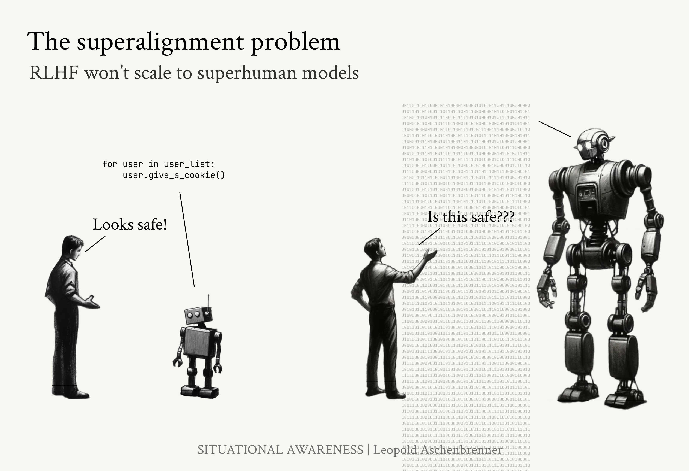
通过人类监督对齐AI系统（如RLHF中）不会扩展到超级智能。基于”弱到强泛化”的插图。
即使现在，AI实验室已经需要支付专家软件工程师为ChatGPT代码提供RLHF评级—当前模型能生成的代码已经相当先进！人类标注者的报酬在过去几年中已经从MTurk标注者的几美元增加到GPQA问题的约100美元/小时。在（不久的）将来，即使是花费大量时间的最佳人类专家也不够好。我们现在开始在现实世界中遇到超级对齐问题的早期版本，很快这甚至对实际部署下一代系统来说都将是一个主要问题。显然我们需要RLHF的继任者，它能更好地扩展到超过人类水平的AI能力，在那里人类监督会崩溃。在某种意义上，超级对齐研究努力的目标是重复RLHF的成功故事：进行基础研究投资，这将是引导和部署几年后AI系统所必需的。
****失败是什么样子****
人们太经常只是想象一个”GPT-6聊天机器人”，这影响了他们的直觉，认为这些肯定不会危险地失调。如本系列前面讨论的，“解除桎梏”轨迹指向在不久的将来用RL训练的智能体。我认为Roger的图表说对了：
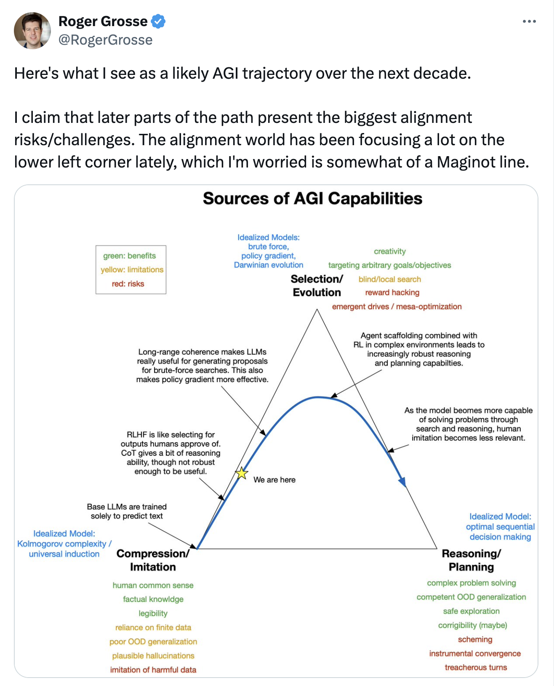
Roger Grosse（多伦多大学教授）
从安全角度考虑我们试图通过对齐完成的事情的一种方式是添加侧约束。考虑一个未来强大的”基础模型”，在第二阶段训练中，我们用长期视野RL训练它来经营企业并赚钱（作为简化例子）：
默认情况下，它很可能学会撒谎、欺诈、欺骗、黑客攻击、寻求权力等等—仅仅因为这些可能是在现实世界中赚钱的成功策略！
我们想要的是添加侧约束：不要撒谎，不要违法等等。
但这里我们回到对齐超人类系统的根本问题：我们无法理解它们在做什么，因此我们无法注意到并用RLHF惩罚坏行为。
如果我们无法添加这些边界约束，后果将很难预料。也许我们会很幸运，事情会默认保持良性（例如，也许我们可以在AI系统没有长期目标的情况下走得很远，或者不良行为只是轻微的）。但同样完全可能的是，它们会学习更严重的不良行为：它们会学会说谎，它们会学会寻求权力，它们会学会在人类观察时表现良好，而在我们不注意时追求更邪恶的策略，等等。
超级对齐问题尚未解决意味着我们根本没有能力确保这些超级智能系统的基本边界约束，比如”它们会可靠地遵循我的指令吗？“或”它们会诚实地回答我的问题吗？“或”它们不会欺骗人类吗？“。人们经常将对齐与一些关于人类价值观的复杂问题联系起来，或跳到政治争议上，但决定在模型中灌输什么行为和价值观，虽然重要，却是一个独立的问题。主要问题是，无论你想向模型灌输什么（包括确保非常基本的事情，比如”遵守法律”！），对于我们很快就要构建的极其强大的AI系统，我们还不知道如何做到这一点。
同样，这些后果并不完全明确。明确的是，超级智能将拥有巨大的能力——因此不当行为可能相当容易导致灾难性后果。更重要的是，我预计在几年内，这些AI系统将被整合到许多关键系统中，包括军事系统（不这样做将意味着被对手完全主导）。这听起来很疯狂，但记住当每个人都说我们不会将AI连接到互联网时？同样的情况也会发生在”我们会确保人类始终在回路中！“这样的事情上——正如人们今天所说的。
对齐失败可能看起来像孤立的事件，比如，自主代理committing fraud(欺诈)，模型实例自我外泄，自动化研究员falsifying(伪造)实验结果，或无人机群overstepping(违反)交战规则。但失败也可能是更大规模或更系统性的——在极端情况下，失败可能更像机器人叛乱。我们将召唤出一个相当alien(异质的)的智能，一个比我们聪明得多的智能，一个其架构和训练过程甚至不是由我们设计而是由某些超级智能的前一代AI系统设计的智能，一个我们甚至无法开始理解他们在做什么的智能，它将运行我们的军事，其目标将通过类似自然选择的过程学习到。
除非我们解决对齐问题——除非我们弄清楚如何灌输那些边界约束——否则没有特别的理由期望这个超级智能的小文明会在长期内继续服从人类命令。在某个时候，它们很可能会简单地密谋cut out(排除)人类，无论是突然还是渐进地，这似乎完全在可能性范围内。
****智能爆炸使这一切变得令人难以置信地紧张****
我对超级对齐是一个可解决的技术问题持乐观态度。就像我们开发了RLHF一样，我们也可以为超人系统开发RLHF的后继者，并进行科学研究，让我们对方法有高度信心。如果事情继续迭代进展，如果我们坚持rigorous(严格的)安全测试等等，这一切都应该是可行的（我稍后会更多地讨论我目前对我们将如何muddle through(摸索前进)的最佳猜测）。
令人难以置信地hair-raising(毛骨悚然)的是智能爆炸的可能性：我们可能极其迅速地从大致human-level(人类水平)的系统过渡到vastly superhuman(远超人类)的系统，也许在不到一年的时间内：
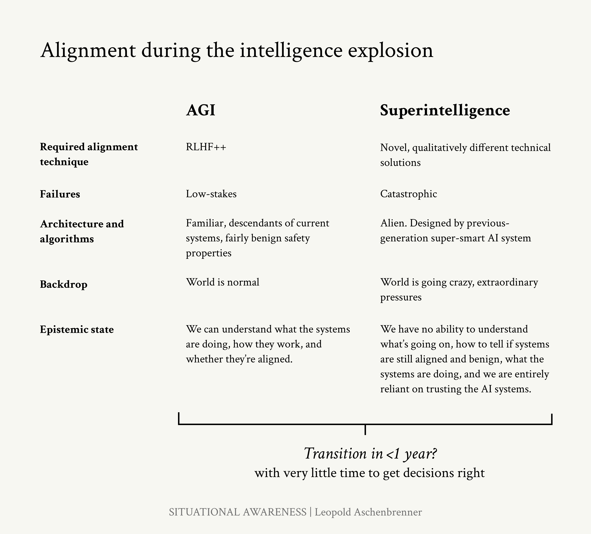
智能爆炸使超级对齐变得令人难以置信地毛骨悚然。
我们将极其迅速地从RLHF运行良好的系统——过渡到它将完全breakdown(崩溃)的系统。这给我们留下极少的时间来迭代发现和解决我们当前方法将失败的方式。
与此同时，我们将极其迅速地从失败相对low-stakes(低风险)的系统（ChatGPT说了一个坏词，那又怎样）——过渡到极其high-stakes(高风险)（糟糕，超级智能从我们的集群中自我外泄，现在它正在hacking(黑客攻击)军方）。我们不会在野外迭代遇到越来越危险的安全失败，而是我们遇到的第一个notable(显著的)安全失败可能已经是catastrophic(灾难性的)。
到最后我们得到的超级智能将是vastly superhuman(远超人类)的。我们将完全依赖于信任这些系统，信任它们告诉我们正在发生的事情——因为我们将没有自己的能力来pierce through(洞察)它们到底在做什么了。
到最后我们得到的超级智能可能是相当alien(异质的)。我们将经历智能爆炸期间十年或更长时间的ML advances(机器学习进步)，意味着架构和训练算法将完全不同（具有潜在更risky(危险的)的安全属性）。
对我来说非常salient(突出)的一个例子：我们很可能通过通过chains of thoughts(思维链)进行推理的系统，即通过英语token来bootstrap(引导)我们走向human-level(人类水平)或somewhat-superhuman(某种程度上超人)的AGI。这是extraordinarily helpful(极其有帮助)的，因为这意味着模型”think out loud(大声思考)“让我们捕捉malign behavior(恶意行为)（例如，如果它正在scheme against(密谋对抗)我们）。但肯定让AI系统用token思考不是最efficient(高效)的方式，肯定有更好的东西通过internal states(内部状态)完成所有这些思考——因此智能爆炸结束时的模型几乎肯定不会大声思考，即将有完全uninterpretable(不可解释的)推理。
这将是一个极其动荡的时期，可能以国际军备竞赛为背景，承受着巨大的加速压力，每周都有疯狂的新能力进展，基本没有人类时间来做出明智的决策，等等。我们将面临大量模糊数据和高风险决策。
想象一下：“我们发现AI系统在测试中做了一些恶意行为，但我们稍微调整了程序来解决这个问题。我们的自动化AI研究人员告诉我们对齐指标看起来不错，但我们并不真正理解发生了什么，也不完全信任它们，我们也没有任何强有力的科学理解让我们相信这在未来几个数量级中会继续保持。所以，我们可能会没事？另外中国刚刚窃取了我们的权重，他们正在启动自己的intelligence explosion，他们紧追在我们身后。”
这看起来真的可能脱轨。说实话，这听起来很可怕。
是的，我们将有AI系统来帮助我们。就像它们会自动化能力研究一样，我们可以使用它们来自动化对齐研究。这将是关键，正如我在下面讨论的。但是——你能信任AI系统吗？你首先不确定它们是否对齐——它们真的在诚实地告诉你关于对齐科学的声明吗？自动化对齐研究能否跟上自动化能力研究（例如，因为自动化对齐更困难，比如因为与改进模型能力相比，我们可以信任的明确指标较少，或者由于国际竞赛，在能力进展上全速前进有很大压力）？而且AI无法完全替代在这种极其高风险情况下做出明智判断的人类决策者。
最终，我们需要为极其超人的、相当异质的superintelligence解决对齐问题。也许，在某个地方，存在一个一劳永逸的、简单的解决方案来对齐superintelligence。但我强烈的最佳猜测是，我们将通过艰难前行来实现这一目标。
我认为我们可以通过多个实证押注获得胜利，我将在下面描述，来对齐某种程度上超人的系统。然后，如果我们确信可以信任这些系统，我们需要使用这些某种程度上超人的系统来自动化对齐研究——与intelligence explosion期间AI研究的自动化一起——来找出如何解决对齐问题，走完剩余的路程，一直到极其超人的、相当异质的superintelligence。
对齐人类水平的系统是不够的。即使是第一批能够进行自动化AI研究的系统，即启动intelligence explosion的系统，很可能在许多领域已经大幅超人。这是因为AI能力很可能会有些尖峰化——当AGI在人类AI研究人员/工程师最薄弱的方面达到人类水平时，它在许多其他方面将是超人的。例如，也许AI系统有效协调和规划的能力会滞后，这意味着当intelligence explosion全面展开时，它们可能已经是超人编码者，用它们设计的新编程语言提交百万行拉取请求，并且它们在数学和机器学习方面将是超人的。
这些早期intelligence explosion系统将开始在定量和定性上成为超人，至少在许多领域如此。但就架构而言，它们看起来会更接近我们今天拥有的系统，我们需要覆盖的智力差距更加可控。（也许如果人类试图对齐真正的superintelligence就像一年级学生试图监督博士毕业生，那么这更像是一个聪明的高中生试图监督博士毕业生。）
更普遍地说，我们现在能够发展出越好的科学，在intelligence explosion期间我们就越能验证事情没有脱轨。即使拥有我们可以信任的良好superalignment指标也是出乎意料地困难——但在intelligence explosion期间没有可靠的指标，我们就不会知道继续前进是否安全。
以下是我看到的跨越人类水平和某种程度上超人系统之间差距的一些主要研究押注：
我们可以”免费”获得一些进展，因为对我们来说评估输出（特别是对于恶劣的不当行为）比我们自己生成它们更容易。例如，我需要数月或数年的努力工作来写一篇论文，但只需要几个小时就能判断别人写的论文是否优秀（尽管发现欺诈可能需要更长时间）。我们将让专家人类团队花费大量时间评估每个RLHF示例，即使AI系统比他们聪明一些，他们也能够对很多不当行为”点踩”。话虽如此，这只能带我们走这么远（GPT-2甚至GPT-3都无法可靠地检测恶意的GPT-4，即使评估比生成更容易！）
我们可以使用AI助手来帮助人类监督其他AI系统——人类-AI团队能够将监督扩展得比人类单独能做的更远。例如，想象一个AI系统生成了100万行复杂代码。如果AI助手指出（比如说）第394,894行看起来可疑，那么人类仔细检查给定代码行是否有错误，比人类从零开始找到同样的错误要容易得多。一个训练来批评另一个模型编写代码的模型因此可以帮助人类监督一个具有狭义超人编程能力的系统。
已经提出了几种可扩展监督策略，包括辩论、做市、递归奖励建模和证明者-验证者游戏，以及这些想法的简化版本如批评。现在模型已经足够强大，可以实证测试这些想法，在可扩展监督方面取得直接进展。
我期望这对问题的”定量”超人部分有很大帮助，比如前面提到的百万行代码示例。但我对可扩展监督技术能否真正帮助解决问题的”定性”超人部分不那么乐观——想象一下当你只懂牛顿物理学时，模型发明了量子物理学。
泛化。 即使有了可扩展监督，我们也无法在真正困难的问题上监督AI系统，即超出人类理解的问题。然而，我们可以研究：AI系统如何从简单问题上的人类监督（我们确实理解并能监督的问题）泛化到困难问题上的行为（我们无法理解也无法再监督的问题）？例如，也许监督模型在简单情况下诚实会良性地泛化到模型总体上保持诚实，即使在它做我们不理解的极其复杂事情的情况下。
这里有很多理由保持乐观：深度学习的部分魔力在于它经常以良性方式泛化（例如，仅在英语示例上进行RLHF训练也往往在说法语或西班牙语时产生良好行为，即使那不是训练的一部分）。我相当乐观地认为，既会有相当简单的方法帮助推动模型的泛化朝着有利于我们的方向发展，我们也能发展出强大的科学理解，帮助我们预测泛化何时有效，何时会失败。与可扩展监督相比，希望这能在更大程度上帮助解决”定性”超人情况下的对齐问题。
这里有另一种思考方式：如果一个超人模型行为不当，比如违法，直觉上模型应该已经知道它在违法。此外，“这是否违法”对模型来说可能是一个相当自然的概念——并且在模型的表示空间中是显著的。那么问题就是：我们能否仅用弱监督从模型中”召唤出”这个概念？
我特别偏爱这个方向（也许有偏见），因为我帮助引入了这个想法，与OpenAI的一些同事最近完成了相关工作。特别是，我们研究了人类监督超人系统问题的类比——小模型能对齐更大（更聪明的）模型吗？我们发现泛化确实能让你跨越监督者和被监督者之间的一些（但肯定不是全部）智能差距，在简单设置中有很多方法可以改进它。
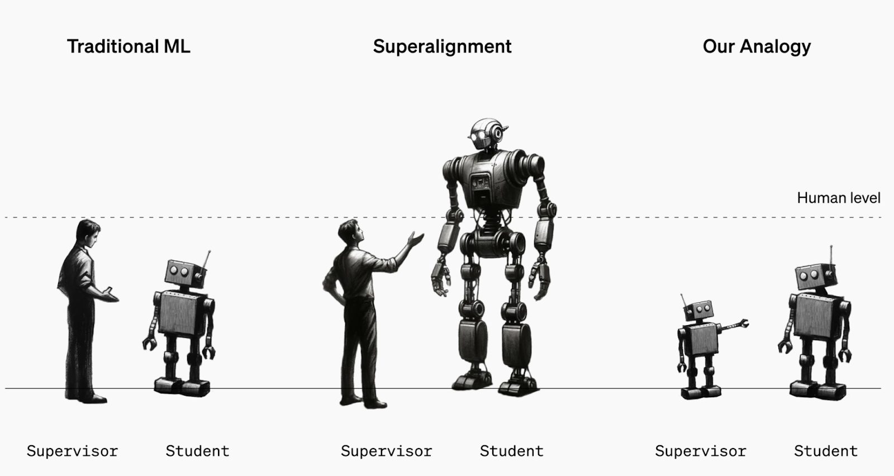
研究超级对齐的简单类比：我们可以研究小模型监督大模型，而不是人类监督超人模型。例如，我们能否仅用GPT-2监督来对齐GPT-4？这会导致GPT-4适当地泛化”GPT-2的意图”吗？来自弱到强泛化。
可解释性。 我们希望验证和信任AI系统对齐的一个直观吸引人的方式是，如果我们能理解它们在想什么！例如，如果我们担心AI系统在欺骗我们或密谋对付我们，访问它们的内部推理应该有助于我们检测到这一点。
默认情况下，现代AI系统是不可理解的黑盒子。然而，我们似乎应该能够做出惊人的”数字神经科学”——毕竟，我们可以完全访问模型内部。
这里有几种不同的方法，从”最雄心勃勃和’酷’但会非常困难”到”更容易且可能奏效的技巧性方法”：
机械可解释性。尝试从头开始完全逆向工程大型神经网络——完全解开不可理解的矩阵，可以这么说。
Anthropic的Chris Olah团队在这方面做了很多开创性工作，从理解非常小模型中的简单机制开始。最近有令人难以置信的激动人心的进展，我对这个领域的整体活跃程度感到兴奋。
尽管如此，我担心完全逆向工程超人AI系统将是一个难以处理的问题——类似于，比如说”完全逆向工程人类大脑”——我会把这项工作主要归类为”AI安全的雄心勃勃的登月计划”而不是”应付过关的默认计划”。
（Neel Nanda的机械可解释性200个开放问题也给出了这类研究的概况。）
“自上而下”可解释性。 如果机械可解释性试图”自下而上”逆向工程神经网络，其他工作采取更有针对性的”自上而下”方法，试图在不完全理解信息如何处理的情况下在模型中定位信息。
例如，我们可能试图通过识别AI系统撒谎时”点亮”的神经网络部分来构建”AI测谎仪”。这可能更容易处理（即使它提供的保证较弱）。
在过去几年中，这个领域出现了令人兴奋的工作热潮。CCS能够仅用无监督数据识别模型中的”真相方向”。ROME能够识别模型中知道埃菲尔铁塔在巴黎的部分——然后直接编辑模型的知识，将埃菲尔铁塔放在罗马。表示工程和推理时干预展示了使用自上而下技术来检测撒谎和幻觉，并在越狱、寻求权力、公平性、真实性等方面外科手术式地控制模型行为。还有其他不需要模型内部的创造性测谎工作。
我越来越乐观地认为，自上而下的可解释性技术将成为一个强大的工具——即我们能够构建类似”AI谎言探测器”的东西——而且不需要在理解神经网络方面取得根本性突破。12
思维链可解释性。如前所述，我认为很可能我们会通过”大声思考”的思维链系统来引导我们走向AGI。即使这在极限情况下不是最高效的算法（如果超级智能仍然使用英语思维链而不是通过某种循环内部状态进行思考，我会非常惊讶），我们可能仍然会从第一批AGI的这一特性中受益。这对可解释性来说将是一个巨大的福音：我们将能够访问AGI的”内心独白”！这将使检测严重的对齐失败变得相对容易。
然而，如果我们想要依赖这一点，还有大量工作要做。我们如何确保思维链(CoT)保持可理解？（它可能会从可理解的英语漂移到难以理解的内容，这取决于我们如何使用强化学习来训练模型——我们能否添加一些简单的约束来确保它保持可理解？）我们如何确保思维链是忠实的，即实际反映模型的思考？（例如，有一些研究表明，在某些情况下，模型会在其思维链中编造事后推理，这些推理实际上并不反映它们对答案的实际内部推理。）
我最好的猜测是，对可理解性和忠实性的一些简单测量，以及一些保持可理解性和忠实性更长时间的简单技巧，可能会有很大作用。是的，这在某些情况下不会奏效，这是一个有点简单的技巧，但这是如此容易摘取的果实；在我看来，这个方向被严重低估了。
对抗性测试和测量。在此过程中，在每一步都对我们系统的对齐进行压力测试将至关重要——我们的目标应该是在实验室中遇到每种失败模式，而不是在现实世界中遇到。这将需要大幅推进自动化红队技术。例如，如果我们故意在模型中植入后门或错误对齐，我们的安全训练是否能够发现并消除它们？（早期工作表明，例如，“潜伏智能体”可以在安全训练中存活下来。）
更一般地说，在整个过程中拥有良好的对齐测量将是至关重要的。模型是否有被错误对齐的能力？例如，它是否有长期目标，以及它正在学习什么样的驱动力？什么是明确的”红线”？例如，一个非常直观的界限可能是”模型推理（思维链）必须始终保持可理解和忠实”。（正如Eric Schmidt所说，当AI智能体能够用我们无法理解的语言相互交谈时，我们应该拔掉计算机的插头。）另一个可能是开发更好的测量方法来判断模型是否完全诚实。
测量对齐的科学仍处于起步阶段；改进这一点对于帮助我们在智能爆炸期间做出正确的风险权衡至关重要。进行让我们能够测量对齐并让我们理解”什么证据足以让我们确信下一个数量级进入超人领域是安全的？“的科学研究，是当今对齐研究的最高优先级工作之一（除了试图将RLHF进一步扩展到”某种程度超人”系统的工作）。
另请参阅超对齐快速资助征集建议书的超对齐研究方向总结。
自动化对齐研究
最终，我们需要自动化对齐研究。我们不可能直接解决真正超级智能的对齐问题；跨越如此巨大的智能差距似乎极具挑战性。此外，在智能爆炸结束时——在1亿个自动化AI研究员狂热地推进了十年的机器学习进展之后——我预期在架构和算法方面会出现与当前系统相比更加异质的系统（可能具有不那么良性的特性，例如在思维链的可理解性、泛化特性或训练引起的错误对齐严重性方面）。
但我们也不必仅仅靠自己来解决这个问题。如果我们能够将某种程度超人的系统对齐到足以信任它们的程度，我们将处于一个令人难以置信的位置：我们将拥有数百万个自动化AI研究员，比最好的AI研究员更聪明，供我们使用。正确利用这支自动化研究员大军来为更加超人的系统解决对齐问题将是决定性的。
（顺便说一句，这更普遍地适用于AI风险的全谱，包括滥用等。在所有这些情况下，AI安全的最佳路径——也许是唯一路径——将涉及适当利用早期AGI来确保安全；例如，我们应该让其中一些人致力于自动化研究，以改进针对外国行为者窃取权重的安全防护，其他人则致力于加强针对最坏情况生物攻击的防御等等。）
在智能爆炸期间正确实现自动化对齐将是极高风险的：我们将在短短几个月内经历多年的AI进展，人类几乎没有时间做出正确决策，我们将开始进入对齐失败可能是灾难性的领域。如果必要的话，实验室应该愿意将其大部分计算资源投入到自动化对齐研究（相对于自动化能力研究）中，在智能爆炸期间。我们需要强有力的保证，让我们能够信任正在产生的自动化对齐研究，以及比我们今天拥有的更好的错误对齐测量方法，以了解我们是否仍然安全。对于我们想要上升的每个数量级，我们需要对下一个数量级的对齐方法有极高的信心。
最重要的是，做好这件事需要极高的能力、严肃性，以及做出艰难权衡的意愿。一旦我们接近真正的超级智能，风险就会变得非常现实，而失败——失控的AI——可能是灾难性的。会有证据不明确的时刻，当指标表面上看起来还行，但有一些警告信号暗示着迫在眉睫的危险，而我们基本上不知道到底发生了什么。负责任地应对这种情况将需要做出代价高昂的权衡。最终，批准下一代超级智能的决定需要像决定发起军事行动一样严肃对待。
“做好对齐”应该只是智能爆炸期间多层防御的第一层。对齐将是困难的；在这个过程中会有失败。如果可能的话，我们需要处于对齐可能失败——但失败不会是灾难性的位置。这可能意味着：
一个气隙隔离的集群是防止超级智能试图自我渗透并在现实世界中造成损害的第一层防御。这只是开始；我们需要对模型自我渗透采取更加极端的安全措施，从硬件加密到多密钥签名。一旦我们的AGI能够进行自动化研发，我们也应该让它们致力于进一步加强安全性。
如果我们的AI系统正在做一些可疑或恶意的事情——或者恶意员工试图将它们用于未授权活动——我们需要能够发现它。然而，这不是一个简单的任务：我们将有数百万个AGI实例运行在我们的集群中，执行复杂的代码等等。我们将需要利用模型本身的高级监控系统，包括监控模型输出、思维链、模型编写的代码、服务器/网络活动，以及与研究人员/其他人类的交互；本质上，利用一些AI系统来监视其他AI系统。此外，我们希望开发和采用复杂的”控制”协议，使用功能较弱但可信的模型来防止功能更强大但不太可信的模型的颠覆。例如，这可能需要将同样多的计算资源专门用于监控模型实例，就像用于活跃模型实例的计算一样。
尽可能地，我们应该尝试以有针对性的方式限制模型的能力，以减少失败的后果。一个核心例子可能是从模型训练中删除与生物学和化学相关的所有内容（或使用”反学习”技术）；这有助于切断通过生物和化学武器造成灾难性现实世界损害的路径。
可能有一些训练模型的方法本身风险更高——比其他方法更有可能产生严重的错位。例如，模仿学习似乎相对安全（很难看出这会如何导致模型具有危险的长期内部目标），而我们应该尽可能避免长期基于结果的强化学习（这似乎更有可能导致模型学习不良的长期目标）。我们也应该避免针对我们的可解释性方法和监控设置进行训练（这样我们的模型就不会简单地被训练来绕过这些）。可能还有其他理想的限制，例如，尽可能长时间地保持清晰和忠实的思维链。我们应该提前定义这些约束，在整个智能爆炸过程中尽可能长时间地维持它们，只有在绝对必要时才放弃它们。
这里可能还有更多的可能性。
这些会是万无一失的吗？绝对不会。真正的超级智能很可能能够绕过大多数安全方案。尽管如此，它们为我们提供了更多的容错空间——而我们将需要任何我们能得到的容错空间。我们希望利用这个容错空间来获得对我们对齐技术的很高信心，只有在信心相称的情况下才放松”超级防御”措施（例如，在非气隙隔离环境中部署超级智能）。
一旦我们转向在较少受控的环境中部署这些AI系统，例如在军事应用中，情况将再次变得棘手。环境可能会迫使我们相当快速地这样做，但我们应该始终尝试获得尽可能多的容错空间——例如，而不是直接在”现场”部署超级智能用于军事目的，使用它们在更孤立的环境中进行研发，只部署它们发明的特定技术（例如，我们更有信心可以信任的更有限的自主武器系统）。
我对超级对齐问题的技术可行性非常看好。感觉这个领域到处都有很多唾手可得的成果。更广泛地说，深度学习的经验现实比10年前一些人推测的更有利于我们。例如，深度学习在许多情况下都出人意料地良性泛化：它经常只是”做我们想要的事情”，而不是拾取一些深奥的恶意行为。此外，虽然完全理解模型内部将是困难的，但至少对于最初的AGI，我们有相当大的可解释性机会——我们可以让它们通过思维链透明地推理，像表征工程这样的黑客技术作为”测谎仪”或类似工具效果出人意料地好。
我认为对齐”稍微超人”系统的”默认计划”有相当合理的成功机会。16 当然，在抽象层面谈论”默认计划”是一回事——如果负责执行该计划的团队是你和你的20个同事（压力会大得多！），那就是另一回事了。17 真正认真致力于解决这个问题的人数量仍然极少，可能只有几十个认真的研究者。没有人全力以赴！在这方面有太多有趣且富有成效的机器学习研究可以做，而挑战的严重性要求我们付出比目前更加协调一致的努力。
但这只是计划的第一部分——真正让我夜不能寐的是智能爆炸。对齐第一批AGI，第一批稍微超人的系统，是一回事。极度超人的、外星般的超级智能是一个全新的局面，而且是一个可怕的局面。
智能爆炸更像是在打一场战争，而不是推出一个产品。我们没有走上超级防御的轨道，没有气隙集群或任何类似的东西；我甚至不确定我们是否会意识到模型自我渗透。我们没有走上建立理性指挥链的轨道，来做出任何这些风险极高的决策，来坚持对超级智能适当的超高置信度，来做出艰难决策，在启动下一次训练运行之前花费额外时间来正确处理安全问题，或将大部分计算资源用于对齐研究，来识别前方的危险并避开它，而不是直接撞上去。现在，没有一个实验室表现出多少意愿为了正确处理安全问题而做出任何代价高昂的权衡（我们确实有很多安全委员会，但这些都相当没有意义）。默认情况下，我们可能会跌跌撞撞地进入智能爆炸，并且已经经历了几个数量级(OOMs)的增长，人们才意识到我们已经陷入了什么境地。
我们在这里过于依赖运气了。
系列下一篇文章：
IIId. 自由世界必须获胜
正如不太礼貌地说！至少，我会称自己是一个强烈的乐观主义者，认为这个问题是可以解决的。我已经花费了相当多的精力与AI悲观主义者辩论，并强烈反对像AI暂停这样的政策。↩︎
我最担心的是围绕超级智能的事情变得完全疯狂，包括新型大规模杀伤性武器、毁灭性战争和未知的未知数。此外，我认为历史的轨迹告诫我们不要低估专制主义——超级智能可能让专制者统治数十亿年。↩︎
正如Tyler Cowen所说，勉强度过是被低估的！↩︎
讽刺的是，安全专家通过发明RLHF为AI的商业成功做出了最大的突破！基础模型有很多原始智慧，但无法控制，因此对大多数应用来说都无法使用。↩︎
这突出了一个重要区别：对齐（引导/控制）模型的技术能力与对齐到什么价值观的价值问题是分开的。关于后一个问题已经有很多政治争议。虽然我同意对这里一些衍生问题的反对，但这不应该分散我们对基本技术问题的注意力。是的，对齐技术可能被滥用——但我们需要更好的对齐技术来确保未来模型的基本边界约束，比如遵循指令或遵守法律。另见”AI对齐与其近期应用不同”。↩︎
“我们估计每小时平均报酬约为95美元”，GPQA论文第3页。↩︎
非常简化地说，想象一个AI系统通过试错来尝试在一年内最大化金钱，最终训练好的AI模型是选择过程的结果，该过程选择了最成功地最大化金钱的AI系统。↩︎
强化学习(RL)所做的只是探索成功实现目标的策略。如果一个策略有效，它就会在模型中得到强化。所以如果撒谎、欺诈、寻求权力等（或可能在至少某些情况下导致这些行为的思维模式）有效，这些也会在模型中得到强化。↩︎
（或用人类监督训练的推理时监控模型）↩︎
此外，即使机械可解释性方面的最新进展，用稀疏自编码器”解开模型特征”，本身也无法解决如何处理超人模型的问题。首先，模型可能只是用你不理解的超人概念”思考”。此外，你如何知道哪个特征是你想要的？你仍然没有真实标签。例如，可能有很多不同的特征对你来说看起来像”真理特征”，其中一个是”模型实际知道的”，其他的是”xyz人类会想什么”或”人类评分者希望我想什么”等。
稀疏自编码器本身是不够的，但它们将是一个工具——一个非常有用的工具！——最终必须体现在帮助泛化科学等方面。↩︎
本质上，只需要真理的一致性属性，而不是强/真实的真/假标签，我们对超人系统不会有这些。↩︎
我仍然担心很多这些技术对非常超人的模型的可扩展性——我认为它们明确或隐含地主要依赖于真实标签，即比模型更聪明的监督者，和/或有利的泛化。↩︎
模型窃取自己的权重，在原始数据中心之外制作自己的副本。↩︎
防范被AI愚弄或说服帮助它渗透的人类↩︎
不过，当然，虽然这可能适用于当前模型和可能的人类水平系统，但我们必须小心，不要试图将来自当前模型的证据外推到未来极度超人的模型。↩︎
明确地说，考虑到风险，我认为”勉强度过”在某种意义上是一个糟糕的计划。但这可能是我们唯一的选择。↩︎
我想起了Scott Aaronson给年轻时的自己写的信：
“有一家公司正在构建一个AI，它占据巨大的房间，消耗一个城镇的电力，最近获得了令人惊异的像人类一样对话的能力。它可以写任何主题的论文或诗歌。它能在大学水平的考试中获得优异成绩。它每天都在获得新的能力，而照料这个AI的工程师们甚至还不能公开谈论这些能力。不过，这些工程师确实会坐在公司食堂里讨论他们正在创造的东西的意义。它下周会学会做什么？它可能会让哪些工作变得过时？他们应该放慢速度或停下来，以免撩拨龙的尾巴吗？但这不是意味着别人，可能是道德水准更低的人，会首先唤醒巨龙吗？是否有道德义务向世界透露更多关于这件事的信息？是否有义务透露得更少？
我——你——正在那家公司工作一年。我的工作——你的工作——是开发一套数学理论，来防止AI及其后续版本造成破坏。这里的’造成破坏’可能意味着任何事情，从助长宣传和学术作弊，到提供生物恐怖主义建议，再到，是的，毁灭世界。”
IIId. 自由世界必须胜利
超级智能将提供决定性的经济和军事优势。中国完全没有出局。在通向AGI的竞赛中，自由世界的生存将岌岌可危。我们能否保持相对于威权政权的优势？我们能否成功避免自我毁灭？
本篇内容：
切换
无论谁在超级智能方面领先，都将拥有决定性的军事优势
海湾战争，或：几十年的技术领先对军事力量意味着什么
即使面对核威慑，军事优势仍将是决定性的
中国可以具备竞争力
计算能力
算法
威权主义的危险
保持健康的领先优势对安全至关重要
超级智能是国家安全问题
人类种族的故事就是战争。除了短暂而不稳定的间歇期，世界上从未有过和平；在历史开始之前，杀戮性的冲突就是普遍且永无止境的。
…
难道不可能发现一颗不比橘子大的炸弹拥有摧毁整个街区的秘密力量——不，浓缩一千吨炸药的威力，一击就能炸毁一个小镇吗？
温斯顿·丘吉尔，《我们都要自杀吗？》
超级智能将是人类有史以来开发的最强大的技术——也是最强大的武器。它将提供决定性的军事优势，也许只有核武器能与之相比。威权主义者可以利用超级智能征服世界，并在内部实施全面控制。流氓国家可以用它来威胁毁灭。虽然许多人认为他们已经出局，但一旦中共意识到AGI的重要性，它就有明确的路径变得有竞争力（至少在我们大幅改善美国AI实验室安全之前是如此）。
每个月的领先优势对安全也很重要。如果我们陷入激烈竞赛，民主盟友和威权竞争者都以惊人的速度冲过本已危险的智能爆炸——被迫将任何谨慎抛在一边，害怕对方首先获得超级智能，我们就会面临最大的风险。只有当我们保持民主盟友的健康领先优势时，我们才能有足够的容错空间来应对超级智能出现前后这个极其动荡和危险的时期。只有美国的领导力才是制定不扩散制度以避免超级智能将带来的自我毁灭风险的现实途径。
我们这一代人太容易认为和平与自由是理所当然的。那些在旧金山宣扬AGI时代的人经常忽视房间里的大象：超级智能是国家安全问题，美国必须获胜。
无论谁在超级智能方面领先，都将拥有决定性的军事优势
超级智能不只是其他任何技术——高超音速导弹、隐形技术等等——虽然美国和自由民主国家的领导地位非常理想，但并非严格必需。如果美国在一项或几项此类技术上落后，军事力量平衡仍可以保持；这些技术很重要，但可以通过其他领域的优势来抵消。
超级智能的出现将把我们带入自原子时代以来从未见过的局面：拥有它的人将对没有它的人拥有完全的统治地位。
我之前讨论过超级智能的巨大力量。这将意味着拥有数十亿个自动化的科学家、工程师和技术人员，每个都比最聪明的人类科学家更聪明，日夜不停地疯狂发明新技术。科学技术发展的加速将是非凡的。当超级智能应用于军事技术的研发时，我们可能会迅速经历几十年的军事技术进步。
海湾战争，或：几十年的技术领先对军事力量意味着什么
海湾战争提供了一个有用的例证，说明20-30年的军事技术领先如何能够起到决定性作用。当时，伊拉克拥有世界第四大军队。在数量方面（兵力、坦克、火炮），美国领导的联盟勉强匹敌（或处于劣势）伊拉克人，而伊拉克人有充分的时间建立防御工事（这种情况通常需要3:1或5:1的军事人员优势才能攻破）。
但是以美国为首的联军在仅仅100小时的地面战争中就彻底击溃了伊拉克军队。联军死亡人数仅为292人，而伊拉克死亡人数为2万-5万人，另有数十万人受伤或被俘。联军仅损失31辆坦克，相比之下伊拉克超过3000辆坦克被摧毁。
技术差距并非神一般的或不可理解的，但它是完全彻底决定性的：制导弹药和智能弹药、早期版本的隐身技术、更好的传感器、更好的坦克瞄准镜（在夜间和沙尘暴中看得更远）、更好的战斗机、侦察优势等等。
（举一个更近期的例子，回想一下伊朗向以色列发射了300枚导弹的大规模攻击，其中”99%“被优越的以色列、美国和盟军导弹防御系统拦截。）
在超级智能方面领先一年、两年或三年，可能意味着如美国联军在海湾战争中对伊拉克那样完全决定性的军事优势。军事力量平衡的彻底重塑将岌岌可危。
想象一下，如果我们在不到十年的时间内经历了20世纪的军事技术发展。我们会在几年内从马匹、步枪和战壕发展到现代坦克军团；几年后发展到超音速战斗机群、核武器和洲际弹道导弹；再几年后发展到能在敌人还不知道你在那里之前就将其击倒的隐身和精确技术。
这就是我们在超级智能出现时将面临的情况：一个世纪的军事技术进步压缩到不到十年。我们将看到能够瘫痪对手大部分军事力量的超人类黑客技术、机器人军队和自主无人机群，但更重要的是我们还无法开始想象的全新范式，以及具有千倍破坏力增长的新型大规模杀伤性武器的发明（以及新的WMD防御，如不可穿透的导弹防御，迅速且反复地颠覆威慑平衡）。
这不仅仅是技术进步。随着我们解决机器人技术问题，劳动力将变得完全自动化，也将带来更广泛的工业和经济爆炸。增长率达到每年10%以上是合理的；在最多十年内，那些领先者的GDP将压倒那些落后者。快速繁殖的机器人工厂不仅意味着巨大的技术优势，还意味着在纯物质方面占主导地位的生产能力。想想数百万导弹拦截器；数十亿无人机；等等。
当然，我们不知道科学的极限以及可能减缓事物发展的许多摩擦。但是不需要神一般的进步就能获得决定性的军事优势。十亿超级智能科学家将能够做很多事情。很明显，在几年内，前超级智能时代的军队将变得毫无希望地落后。
****军事优势甚至对核威慑也是决定性的****
更明确地说：超级智能赋予的优势似乎足够决定性，甚至可以先发制人地摧毁对手的核威慑力量。改进的传感器网络和分析可以定位即使是最安静的现役核潜艇（移动导弹发射器同样如此）。数百万或数十亿只老鼠大小的自主无人机，配合隐身技术的进步，可以渗透到敌后，然后秘密定位、破坏和摧毁对手的核力量。改进的传感器、瞄准等可以大幅改善导弹防御（类似于上面提到的伊朗对以色列的例子）；此外，如果有工业爆炸，机器人工厂可以为每一枚对方导弹生产数千个拦截器。所有这些甚至还没有考虑全新的科学和技术范式（例如，所有核武器）。
这根本不会有竞争。不仅仅是”我们可能相互毁灭”的核意义上的没有竞争，而是在能够在不承受重大伤亡的情况下彻底摧毁对手军事力量方面的没有竞争。在超级智能方面领先几年意味着完全的统治地位。
如果有快速的智能爆炸，仅仅几个月的领先就可能是决定性的：几个月可能意味着大致人类水平的AI系统和显著超人类AI系统之间的差别。也许仅仅拥有那些初始的超级智能，甚至在广泛部署之前，就足以获得决定性的优势，例如通过能够关闭前超级智能军队的超人类黑客能力、威胁每个对手领导人、官员及其家属即死的更有限的无人机群，以及通过AlphaFold风格的模拟开发的针对特定种族群体的先进生物武器，例如除了汉族以外的任何人（或者简单地对对手隐瞒治疗方法）。
****中国可以具有竞争力****
许多人似乎对中国和AGI感到自满。芯片出口管制已经削弱了它们，领先的AI实验室在美国和英国——所以我们没有太多可担心的，对吧？中国的LLM很好——它们绝对有能力训练大型模型！——但它们最多与美国实验室的第二梯队相当。甚至中国模型通常只是美国开源发布的翻版（例如，Yi-34B架构似乎基本上就是Llama2架构，只是改变了几行代码）。中国深度学习比今天更重要（例如百度发表了最早的现代缩放定律论文之一），虽然中国在AI方面发表的论文比美国多，但它们似乎没有推动近年来的任何关键突破。
然而，这些仅仅是一个序幕。如果中国共产党意识到AGI的重要性，我们应该预期中共会做出非凡的努力来竞争。我认为中国进入这场竞争有一条相当明确的路径：在建设方面超越美国，并窃取算法。
1a. 芯片： 中国现在似乎已经证明了制造7纳米芯片的能力。虽然超越7纳米会很困难（需要EUV），但7纳米就足够了！作为参考，7纳米是英伟达A100使用的工艺。基于中芯国际7纳米平台的华为昇腾910B，在性能/价格比方面似乎只比同等的英伟达芯片差约2-3倍。
中芯国际7纳米生产的良率和中国在这方面的总体成熟度仍存在争议，一个关键的开放性问题是他们能够大规模生产这些7纳米芯片的数量。不过，他们至少很有可能在几年内能够大规模做到这一点。
AI芯片的大部分性能提升来自于改进的芯片设计，使其适应AI用例（中国可能已经从台湾供应链窃取了英伟达芯片设计）。7纳米相对于3纳米或2纳米，以及他们总体的制造不成熟，可能会让中国的成本更高。但这似乎绝不是致命的；你可以在7纳米工艺上制造非常好的AI芯片。例如，我现在不会有很高的信心认为他们不能只是多花一点钱，在几年内为1000亿美元以上和万亿美元的训练集群获得充足的算力。
1b. 超越美国的建设能力： 最大训练集群的约束因素不会是芯片，而是工业动员——也许最重要的是万亿美元集群所需的100GW电力。但如果说中国有什么比美国做得更好的，那就是建设。
在过去十年中，中国新建的电力容量大约相当于美国的全部电力容量（而美国的容量基本保持平稳）。在美国，这些项目首先要在环境审查、许可和监管中停滞十年。因此，中国很可能能够在最大的训练集群建设上简单地超越美国。
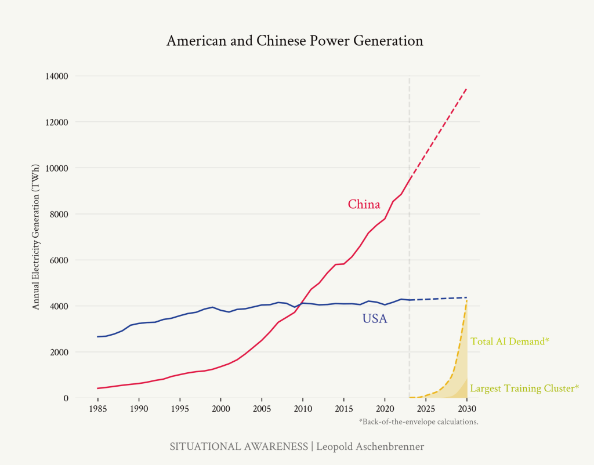
基于《竞赛万亿美元集群》的早期估计，2030年的AI电力建设对中国来说似乎比对美国更可行。
正如在《计算数量级》中广泛讨论的，扩展算力只是故事的一部分：算法进步可能贡献了AI进步的至少一半。我们现在正在开发AGI的关键算法突破（本质上是算法的EUV，因为数据墙的存在）。
在默认情况下，我预期西方实验室会遥遥领先；他们拥有大部分关键人才，并且近年来开发了所有关键突破。这种优势的规模很可能相当于几年内10倍（甚至100倍）更大的集群；这将为美国提供相当舒适的领先优势。
然而，在目前的路径上，我们将完全放弃这一优势：正如在安全部分广泛讨论的，目前的安全状态基本上让中国渗透美国实验室变得轻而易举。因此，除非我们很快锁定实验室，否则我预期中国将能够简单地窃取AGI的关键算法成分，并匹配美国的能力。
（更糟的是，如果我们不改善安全性，中国还有一条更加突出的竞争路径。他们甚至不需要训练自己的AGI：他们只需能够直接窃取AGI权重。一旦他们窃取了自动化AI研究员的副本，他们就会开始竞赛，并可以启动自己的智能爆炸。如果他们愿意比美国采用更少的谨慎——包括好的谨慎，以及不合理的监管和延迟——他们可能会更快地通过智能爆炸，超越我们达到超级智能。）
迄今为止，美国科技公司在AI和扩展方面的投入远超任何中国努力；因此，我们遥遥领先。但现在就不看好中国，有点像在2022年底ChatGPT发布时不看好谷歌在AI竞赛中的表现。谷歌当时还没有将努力集中在激烈的AI投注上，看起来OpenAI遥遥领先——但一旦谷歌觉醒，一年半后，他们正在进行一场非常严肃的斗争。中国也有一条明确的道路来进行非常严肃的斗争。如果中共在AGI竞赛中动员起来，情况可能开始看起来非常不同。
也许中国政府会无能；也许他们认为AI威胁中共并施加令人窒息的监管。但我不会指望这一点。
我个人认为，我们需要在假设我们将面临中国全力以赴的AGI努力的前提下运作。随着我们每年在AI能力方面取得戏剧性飞跃，随着我们开始看到软件工程师的早期自动化，随着AI收入爆炸式增长，我们开始看到10万亿美元的估值和万亿美元集群的建设，随着更广泛的共识开始形成，即我们正处于AGI的边缘——中共会注意到。正如我预期这些飞跃会让美国政府意识到AGI一样，我也预期它会让中共意识到AGI——并意识到在AGI方面落后对他们的国家力量意味着什么。
他们将是一个可怕的对手。
一个掌握超级智能力量的独裁者将拥有我们从未见过的集中权力。除了能够将自己的意志强加给其他国家外，他们还可以在内部确立自己的统治。数百万由AI控制的机器人执法人员可以监管他们的民众；大规模监控将被极大增强；忠于独裁者的AI可以单独评估每个公民的异议，通过先进的近乎完美的测谎技术根除任何不忠。
最重要的是，机器人军事和警察力量可以完全由单一政治领导人控制，并被编程为完全服从——不再有政变或民众叛乱的风险。
过去的独裁统治从未永久存在，而超级智能可以基本消除独裁者统治面临的所有历史威胁，并锁定他们的权力（参见价值锁定）。如果中共获得这种力量，他们可以完全彻底地强制执行党对”真理”的概念。
需要明确的是，我担心独裁者获得超级智能，并不仅仅因为”我们的价值观更好”。我强烈信仰自由和民主，正是因为我不知道什么是正确的价值观。在历史的长河中，“时间已经颠覆了许多战斗的信仰”。我相信我们应该将信心寄托在纠错机制、实验、竞争和适应上。
超级智能将赋予那些掌握它的人以粉碎反对、异议的力量，并锁定他们对人类的宏伟计划。任何人都很难抵御使用这种力量的可怕诱惑。我深切希望，我们能够依靠开国元勋的智慧——让根本不同的价值观蓬勃发展，并保持定义美国实验的喧闹多元性。
AGI竞赛的利害关系不仅在于某些遥远代理人战争中的优势，而在于自由和民主能否在下个世纪及以后生存。人类历史的进程既残酷又清晰。在20世纪，暴政曾两次威胁全球；我们绝不能抱有这种威胁已永远消除的幻想。对于我的许多年轻朋友来说，自由和民主感觉是理所当然的——但它们并非如此。在历史上，迄今为止最常见的政治制度是专制主义。
我真的不知道中共及其专制盟友的意图。但是，作为提醒：中共是一个建立在对也许是人类历史上最伟大的极权主义大屠杀者持续崇拜基础上的政权（“估计由于饥饿、迫害、监狱劳动和大规模处决，受害者人数在4000万到8000万之间”）；一个最近将一百万维吾尔人关进集中营并粉碎自由香港的政权；一个系统性地实行大规模监视以进行社会控制的政权，既有新式的（追踪手机、DNA数据库、面部识别等），也有老式的（招募一支公民军队来举报邻居）；一个确保所有短信都要通过审查的政权，一个为了压制异议甚至将海外参加抗议活动的孩子的家人拉进警察局的政权；一个已经将习近平巩固为终身独裁者的政权；一个吹嘘其目标是军事粉碎和”改造”自由邻国的政权；一个明确寻求以中国为中心的世界秩序的政权。
自由世界必须在这场竞赛中战胜专制力量。我们的和平与自由归功于美国的经济和军事优势。也许即使拥有超级智能，中共也会在国际舞台上表现负责任，让各自为政。但是他们这类独裁者的历史并不美好。如果美国及其盟友未能赢得这场竞赛，我们就会冒失去一切的风险。
保持健康领先优势对安全至关重要
科学技术的诅咒历史是，随着它们展现奇迹，也扩大了毁灭的手段：从棍棒和石头，到刀剑和长矛，步枪和大炮，机关枪和坦克，轰炸机和导弹，核武器。随着技术的进步，“毁灭/美元”曲线一直在下降。我们应该预期超级智能后的快速技术进步会遵循这一趋势。
也许生物学的巨大进步会产生非凡的新生物武器，那些静悄悄、迅速传播的武器，在按命令以完美杀伤力杀死之前（并且可以制造得极其便宜，连恐怖组织都负担得起）。也许新型核武器使核武库的规模增加几个数量级，配备无法检测到的新投送机制。也许蚊子大小的无人机，每个都携带致命毒物，可以被定向杀死敌国的每一个成员。很难知道一个世纪的技术进步会产生什么——但我相信它会展现令人恐惧的可能性。
人类在冷战期间险些自我毁灭。从历史角度看，AGI构成的最大存在风险是它将使我们能够开发出非凡的新大规模杀伤手段。这一次，这些手段甚至可能扩散到流氓行为者或恐怖分子手中（特别是如果按照当前路线，超级智能权重没有得到充分保护，可能被朝鲜、伊朗等直接窃取）。
朝鲜已经有了一个协调一致的生物武器项目：美国评估认为”朝鲜拥有一个专门的国家级攻击性项目”来开发和生产生物武器。看起来他们的主要限制是他们的小圈子顶尖科学家能够将（合成）生物学的极限推进到多远。当这种限制被消除时会发生什么，当他们可以使用数百万个超级智能来加速他们的生物武器研发时会发生什么？例如，美国评估朝鲜目前在基因工程生物产品方面”能力有限”——当这种能力变得无限时会发生什么？他们会用什么邪恶的新混合物来要挟我们？
此外，正如在超级对齐章节中讨论的，在智能爆炸期间和前后将存在极端的安全风险——我们将面临新颖的技术挑战，以确保我们能够可靠地信任和控制超人类AI系统。这很可能要求我们在某些关键时刻放慢脚步，比如说，在智能爆炸过程中延迟6个月以获得额外的安全保障，或者将大部分算力用于对齐研究而不是能力进展。
有些人希望达成某种国际安全条约。这对我来说似乎是天方夜谭。在中共和美国政府都足够相信AGI以至于认真对待安全风险的世界里，双方也都意识到国际经济和军事主导地位岌岌可危，在AGI方面落后几个月可能意味着永远被抛在后面。如果竞赛激烈，任何军备控制平衡，至少在超级智能的早期阶段，似乎都极其不稳定。简言之，“突破”太容易了：竞相推进智能爆炸、达到超级智能和决定性优势的动机（以及对他人将基于这种动机行动的恐惧）太强烈了。11 至少，我们在这里得到足够好结果的概率看起来很小。（那些气候条约进展如何？相比之下，那似乎是一个极其容易的问题。）
我们拥有的主要——或许是唯一的——希望是民主国家联盟对敌对势力保持健康的领先优势。美国必须领导，并利用这种领先地位向世界其他地区强制执行安全规范。这是我们在核武器方面采取的路径，提供和平利用核技术的援助以换取国际不扩散制度（最终由美国军事力量支撑）——这是唯一被证明有效的路径。
或许最重要的是，健康的领先优势给了我们回旋的空间：如果必要的话，能够”兑现”部分领先优势以确保安全，例如在智能爆炸期间投入额外精力进行对齐工作。
如果你处于势均力敌的军备竞赛中，超级智能的安全挑战将变得极其难以管理。2年与2个月的领先优势很容易就能决定一切。如果我们只有2个月的领先优势，我们在安全方面就完全没有余地。出于对中共智能爆炸的恐惧，我们几乎肯定会不择手段地竞赛，冲过我们自己的智能爆炸——在几个月内冲向比人类聪明得多的AI系统，没有任何能力放慢脚步以做出关键决策，这意味着超级智能出错的所有风险。我们将面临极其不稳定的局面，因为我们和中共迅速开发非凡的新军事技术，反复破坏威慑稳定。如果我们的机密和权重没有锁定，这甚至可能意味着一系列其他流氓国家也很接近，它们每一个都使用超级智能来提供自己的新超级大规模杀伤性武器库。即使我们勉强设法取得领先，这很可能是一场惨胜；这场生存斗争将把世界推向全面自毁的边缘。
如果民主盟友拥有健康的领先优势，比如说2年，12 超级智能看起来会非常不同。这为我们赢得了必要的时间来应对我们在超级智能前后将面临的前所未有的一系列挑战，并稳定局势。
如果并且当美国将决定性获胜变得明确时，那就是我们向中国和其他对手提供交易的时候。他们将知道自己不会获胜，所以他们将知道自己唯一的选择是坐到谈判桌前；而我们宁愿避免他们方面狂热的对峙或破坏西方努力的最后军事尝试。作为保证不干涉其事务并分享超级智能和平利益的交换，一个包含不扩散、安全规范和超级智能后某种稳定外观的制度可以诞生。
无论如何，当我们深入这场斗争时，我们绝不能忘记自我毁灭的威胁。我们能够完整地度过冷战涉及太多运气13——而毁灭的威力可能比我们当时面临的强一千倍。由美国领导的民主国家联盟的健康领先优势——以及庄严行使这种领导力来稳定我们发现自己所处的任何不稳定局面——可能是我们越过这个悬崖的最安全路径。但在AGI竞赛的激烈进行中，我们最好不要搞砸。
很明显：AGI是美国国家安全的生存挑战。是时候开始这样对待它了。
美国政府正在慢慢开始行动。对美国芯片的出口管制是一件大事，在当时是一个极其有预见性的举措。但我们必须全方位认真对待。
美国有领先优势。我们只需要保持它。而我们现在正在搞砸这一点。最重要的是，我们必须迅速彻底地锁定AI实验室，在我们在接下来的12-24个月内泄露关键AGI突破（或AGI权重本身）之前。我们必须在美国建设计算集群，而不是在提供容易资金的独裁国家。是的，美国AI实验室有义务与情报界和军方合作。美国在AGI方面的领先优势不会仅仅通过构建最好的AI女友应用程序来确保和平与自由。这并不好看——但我们必须为美国国防建设AI。
我们已经走上了几十年来最具爆发性的国际局势轨道。普京正在东欧大举进军。中东地区一片火海。中国共产党视收复台湾为其天命。现在再加上通用人工智能(AGI)的竞赛。再加上超级智能出现后几年内压缩了一个世纪的技术突破。这将是有史以来最不稳定的国际局势之一——至少在最初，先发制人的激励将是巨大的。
AGI时间线(约2027年?)和台湾观察家的台湾入侵时间线(中国准备在2027年前入侵台湾?)已经出现了令人不安的重合——随着世界对AGI的觉醒，这种重合肯定只会加剧。(想象一下，如果在1960年，世界上绝大多数铀矿储量不知怎么都集中在柏林!) 在我看来，AGI终局很有可能在世界大战的背景下上演。那时一切都将失去意义。
系列下一篇：
IV. 项目
例如，Yi-Large似乎是LMSys上的GPT-4级别模型，但这已经是OpenAI发布GPT-4一年多以后了。
类似地，Qwen hugging face代码大量引用了Mistral，中国大语言模型对美国开源的依赖似乎是一个明确的担忧，已经传达到了中国总理那里。
华为Ascend 910B似乎每卡成本约12万元人民币，约合17,000美元。这是在中芯国际7nm节点上生产的，性能与A100相似。H100比A100好大约3倍，而成本稍高(20-25k美元ASP)，这表明中国目前等效AI GPU性能的成本增加仅约2-3倍。
例如，它们仍在使用西方的HBM内存(出于某种原因没有受到出口管制?)，尽管据说长鑫存储将在明年开始HBM样品。
不过，由于它们仍然可以从西方进口其他类型的芯片，它们可以简单地将其7nm节点的全部产能用于AI芯片，以弥补较低的总体产量。
值得注意的是，即使是网络犯罪分子也能够入侵英伟达并获得关键的GPU设计机密。此外，TPUv6设计显然也是最近被起诉的谷歌中国籍员工窃取的内容之一。
例如，也许这些在性能/价格或性能/功耗上要差2倍。反过来，这也意味着要实现相同的整体数据中心性能，您需要更多电力，需要更多芯片联网，这也使事情变得更加麻烦。
请注意，即使芯片成本增加3倍，在数据中心成本增加方面也会远少于此。实际逻辑制造成本是
IV. 项目
随着AGI竞赛的加剧，国家安全机构将会介入。美国政府将从沉睡中醒来，到27/28年我们将看到某种形式的政府AGI项目。没有初创公司能够处理超级智能。在某个机密情报设施(SCIF)中，终局将会上演。
本文内容：
切换
通向项目的道路
为什么项目是唯一途径
超级智能将成为美国最重要的国防项目
超级智能的合理指挥链
超级智能的民用用途
安全
安保
稳定国际局势
项目是不可避免的；项目是否良好则不确定
终局
“我们必须好奇地了解这样一组物体——数百座发电厂、数千枚炸弹、数万人聚集在国家机构中——如何能够追溯到几个坐在实验室工作台前讨论一种原子特殊行为的人。”
Spencer R. Weart
如今提出了许多”AI治理”计划，从许可前沿AI系统到安全标准，再到为学者提供数亿计算资源的公共云。这些看起来用心良苦——但对我来说，它们似乎犯了一个范畴错误。
我认为美国政府会让一个随机的旧金山初创公司开发超级智能是一个疯狂的提议。想象一下，如果我们通过让优步即兴发挥来开发原子弹。
超级智能——比人类智能得多的AI系统——将拥有巨大的力量，从开发新型武器到推动经济增长爆炸。超级智能将成为国际竞争的焦点；几个月的领先优势在军事冲突中可能具有决定性意义。
那些无意识地内化了我们短暂的历史喘息期的人认为这不会召唤更多原始力量，这是一种错觉。与我们之前的许多科学家一样，旧金山的伟大头脑希望他们能够控制他们正在孕育的恶魔的命运。现在，他们仍然可以；因为他们是少数几个具有态势感知、理解他们正在构建什么的人。但在接下来的几年里，世界将会觉醒。国家安全机构也会如此。历史将会凯旋归来。
就像以前的许多时候——新冠疫情、二战——美国似乎正在打盹——然后，突然之间，政府以最非凡的方式转入高速运转。将会有一个时刻——就在几年内，再经过几次”2023年级别”的模型能力飞跃和AI话语——届时将会很清楚：我们正处于AGI的风口浪尖，超级智能紧随其后。虽然确切的机制有很多变数，但无论如何，美国政府将会掌舵；领先的实验室将(“自愿”)合并；国会将为芯片和电力拨款数万亿美元；民主国家联盟将会形成。
创业公司在很多方面都很出色——但是单靠一家创业公司根本无法胜任负责美国最重要的国防项目。我们需要政府参与，才能有丝毫希望抵御我们将面临的全面间谍威胁；私人AI努力可能直接将超级智能送给中共。我们需要政府确保至少有一个理智的指挥链；你不能让随意的CEO（或随意的非营利董事会）掌握核按钮。我们需要政府管理超级智能的严重安全挑战，管理智能爆炸的战争迷雾。我们需要政府部署超级智能来防御任何展现的极端威胁，度过随后极不稳定的国际局势。我们需要政府动员民主联盟赢得与威权力量的竞赛，并为世界其他地区制定（和执行）不扩散制度。我希望事情不是这样——但我们需要政府。（是的，无论哪届政府。）
无论如何，我的主要观点不是规范性的，而是描述性的。在几年内，这个项目将会启动。
深深印在我记忆中的一个转折是2020年2月底到3月中旬。在2月的最后几周和3月的最初几天，我完全绝望了：很明显我们正处在新冠指数增长中：一场瘟疫即将席卷全国，我们医院的崩溃迫在眉睫——然而几乎没有人认真对待。纽约市长仍在将新冠恐惧斥为种族主义，并鼓励人们去看百老汇演出。我能做的就是买口罩和做空市场。
然而在短短几周内，整个国家关闭了，国会拨款数万亿美元（字面意思上超过GDP的10%）。提前看到指数可能的走向太难了，但当威胁足够接近、足够生存攸关时，非凡的力量被释放了。反应是迟缓的、粗糙的、生硬的——但它来了，而且是戏剧性的。
AI的未来几年会有类似的感觉。我们现在处在中局。2023年已经是一个疯狂的转变。AGI从一个你会犹豫与之联系的边缘话题，变成了主要参议院听证会和世界领导人峰会的主题。考虑到我们仍然处于早期阶段，美国政府的参与程度让我印象深刻。再来几个”2023年”，奥弗顿窗口将被完全炸开。
随着我们在数量级中狂奔，跳跃将继续。到2025/2026年左右，我预期下一个真正令人震惊的阶跃变化；AI将为大型科技公司带来1000亿美元以上的年收入，在原始问题解决智能方面超越博士。就像新冠股市崩盘让许多人认真对待新冠一样，我们将有10万亿美元的公司，AI狂热将无处不在。如果这还不够，到2027/28年，我们将有在1000亿美元以上集群上训练的模型；成熟的AI代理/插入式远程工作者将开始广泛自动化软件工程和其他认知工作。每一年，加速度都会让人眩晕。
虽然许多人还没有看到AGI的可能性，但最终会形成共识。一些人，比如西拉德，比其他人更早地看到了原子弹的可能性。他们的警报最初并没有得到很好的接受；炸弹的可能性被认为是遥远的（或至少，人们认为保守和恰当的做法是淡化这种可能性）。西拉德的热切保密呼吁被嘲笑和忽视。但许多科学家，最初持怀疑态度，随着越来越多的实证结果出现，开始意识到炸弹是可能的。一旦大多数科学家相信我们正处在炸弹的边缘，政府，反过来，认为国家安全的紧迫性太大——曼哈顿计划开始了。
随着数量级从理论外推变成（非凡的）实证现实，逐渐地，领先的科学家、高管和政府官员之间也会形成共识：我们正处在边缘，处在AGI的边缘，处在智能爆炸的边缘，处在超级智能的边缘。在这里的某个地方，我们会得到AI的第一个真正令人恐惧的演示：也许是经常讨论的”帮助新手制造生物武器”，或自主入侵关键系统，或完全不同的其他东西。将会变得清楚：无论喜欢与否，这项技术将是一项完全决定性的军事技术。即使我们足够幸运没有陷入重大战争，中共似乎也可能已经注意到并启动了一个强大的AGI努力。也许最终（不可避免地）发现中共对美国领先AI实验室的渗透会引起很大轰动。
大约在26/27年左右，华盛顿的情绪会变得严肃。人们将开始viscerally地感受到正在发生的事情；他们会害怕。从五角大楼的大厅到国会的密室简报会中会响起明显的问题，每个人心中的问题：我们需要一个AGI曼哈顿计划吗？起初缓慢，然后突然，会变得清楚：这正在发生，事情将变得疯狂，这是自原子弹发明以来美国国家安全面临的最重要挑战。以某种形式，国家安全国家将非常深度地参与。这个项目将是必要的，实际上是唯一合理的回应。
当然，这是一个极其简化的描述——很多取决于共识何时以及如何形成、关键的警告信号等等。华盛顿特区以功能失调而臭名昭著。就像新冠疫情，甚至曼哈顿计划一样，政府将会极其迟缓和笨拙。在爱因斯坦1939年给总统的信（由西拉德起草）之后，成立了一个铀咨询委员会。但官员们无能，最初并没有太多进展。例如，费米只得到了6千美元（约合今天的13.5万美元）来支持他的研究，即使如此也不容易获得，只是在等待了几个月后才收到。西拉德认为，当局的短视和迟缓至少延误了项目一年。1941年3月，英国政府最终得出结论认为原子弹是不可避免的。美国委员会最初完全忽视了这份英国报告数月之久——直到最终在1941年12月，才启动了全面的原子弹计划。
这在实践中有很多可操作的方式。需要明确的是，这不需要看起来像字面意义上的国有化，比如AI实验室的研究人员现在受雇于军方之类的（尽管可能会！）。相反，我期望更加巧妙的协调。与国防部的关系可能看起来像国防部与波音或洛克希德·马丁的关系。也许通过国防承包或类似方式，主要云计算提供商、AI实验室和政府之间建立合资企业，使其在功能上成为国家安全国家的项目。就像AI实验室在2023年”自愿”向白宫做出承诺一样，西方实验室可能会或多或少”自愿”同意合并到国家努力中。而且国会可能必须参与，考虑到涉及数万亿的投资，以及制衡的需要。所有这些细节如何展现是另一天的故事。
但到26/27/28年末，它将正在进行。核心AGI研究团队（几百名研究人员）将迁移到一个安全地点；万亿美元的集群将以创纪录的速度建成；该项目将启动。
为什么该项目是唯一的途径
我对政府没有幻想。政府面临各种限制和糟糕的激励机制。我非常相信美国私营部门，几乎永远不会倡导政府大力参与技术或工业。
我曾经将同样的框架应用于AGI——直到我加入了一个AI实验室。AI实验室在某些方面非常擅长：他们能够将AI从学术科学项目带到商业大舞台，这是只有初创公司才能做到的方式。但最终，AI实验室仍然是初创公司。我们根本不应该期望初创公司具备处理超级智能的能力。
这里没有好的选择——但我看不到另一条路。当一项技术对国家安全变得如此重要时，我们将需要美国政府。
超级智能将是美国最重要的国防项目
我在之前的文章中讨论过超级智能的力量。在几年内，超级智能将彻底改变军事力量平衡。到2030年代初，美国的整个武器库（无论喜欢与否，这是全球和平与安全的基石）可能都会过时。这不仅仅是现代化的问题，而是全面替换。
简单地说，AGI的发展将明显属于更像核武器而不是互联网的类别。是的，当然它将是双重用途的——但核技术也是双重用途的。民用应用将有其时机。但在AGI终局的迷雾中，无论好坏，国家安全将是主要背景。
我们将需要在几年内完全重塑美国军队，面对快速的技术变革——否则就有被那些这样做的对手完全压制的风险。也许最重要的是，最初的优先事项将是部署超级智能用于防御应用，开发对策以应对无数新威胁：拥有超人黑客能力的对手、可以对我们的核威慑力量执行先发制人打击的新类型隐形无人机群、可以武器化的合成生物学进展的扩散、动荡的国际（和国内）权力斗争，以及失控的超级智能项目。
无论名义上是否私有，AGI项目都需要成为、将会成为，在本质上是一个防务项目，它将需要与国家安全国家极其密切的合作。
超级智能的理性指挥链
超级智能的力量——以及挑战——将属于与我们习惯从科技公司看到的任何东西都非常不同的参考类别。这似乎很清楚：这不应该由一个随机的CEO单方面指挥。事实上，在私人实验室开发超级智能的世界中，个别CEO很可能拥有字面意义上政变美国政府的权力。想象一下，如果埃隆·马斯克最终指挥核武库。（或者如果一个随机的非营利董事会可以决定夺取核武库的控制权。）
这也许是显而易见的，但是：作为一个社会，我们已经决定民主政府应该控制军队；超级智能将是，至少在最初，最强大的军事武器。激进的提议不是该项目；激进的提议是押注于私人AI CEO掌握军事权力并成为仁慈独裁者。
（事实上，在私人AI实验室的世界中，情况可能比拥有核按钮的随机CEO更糟——AI实验室糟糕安全的一部分是他们完全缺乏内部控制。也就是说，随机的AI实验室员工（零审查）可能在未被察觉的情况下叛变。）
我们需要一个合理的指挥链——以及所有其他必要的流程和保障措施，这些都是负责任地使用相当于大规模杀伤性武器的工具所必需的——这将需要政府来实施。从某种意义上说，这只是一个伯克式(Burkean)论证：制约政府权力的制度、宪法、法律、法院、制衡机制、规范以及对自由民主秩序的共同奉献（例如，将军拒绝执行非法命令）等等，都经受住了数百年的考验。与此同时，特殊的AI实验室治理结构在第一次接受测试时就崩溃了。美国军方如果想要的话，基本上可以杀死美国的每一个平民，或者夺取政权——而我们控制政府对核武器权力的方式，并不是通过让许多私人公司拥有自己的核武库。只有一个指挥链和一套制度体系已经证明了自己能够胜任这项任务。
再次强调，也许你是一个真正的自由主义者，在规范上不同意这种观点（让埃隆·马斯克和山姆·奥特曼指挥他们自己的核武库！）6 但一旦超级智能明显成为国家安全的主要事务，我确信华盛顿的男男女女们会这样看待它。
当然，这并不意味着超级智能的民用应用将为政府所保留。
核链式反应首先被用作政府项目——核武器永久为政府保留——但民用核能作为私人项目蓬勃发展（在60和70年代，在环保主义者关闭它之前）。
波音公司制造了B-29（二战期间最昂贵的国防研发项目，比曼哈顿计划还要昂贵）以及B-47和B-52远程轰炸机，与军方合作——然后将该技术用于波音707，这是开启喷气机时代的商用飞机。如今，虽然波音只能向政府销售隐形战斗机，但它可以自由地私下开发和销售民用飞机。
雷达、卫星、火箭、基因技术、二战工厂等等，都是如此。
超级智能的初始开发将被国家安全紧迫性所主导，以在一个极不稳定的时期生存和稳定。超级智能的军事用途将继续为政府保留，安全规范将得到执行。但一旦初期危险过去，世界稳定下来，自然的道路就是让参与国家财团的公司（和其他公司）私下追求民用应用。
即使在有”项目”的世界中，一个私人的、多元化的、基于市场的、繁荣的超级智能民用应用生态系统也会有其时代。
我在这个系列的前一篇文章中已经详细讨论过这个问题。按照目前的路线，我们不如放弃拥有任何美国AGI努力；中国可以迅速窃取所有的算法突破和模型权重（字面意思是超级智能的副本）。目前的路线甚至不清楚我们是否能达到对超级智能的”朝鲜防护”安全。在私人初创公司开发AGI的世界中，超级智能将扩散到数十个流氓国家。这根本是不可持续的。
如果我们要对此认真对待，我们显然需要锁定这些东西。大多数私人公司未能认真对待这一点。但无论如何，如果我们最终要面对中国间谍活动的全部力量（例如，窃取权重成为国家安全部的头号优先事项），私人公司可能不可能获得足够好的安全性。在那时，将需要美国情报界的广泛合作来充分保护AGI。这将涉及对AI实验室和AGI研究核心团队的侵入性限制，从极端审查到持续监控，到在SCIF中工作，到减少离开的自由；这将需要只有政府才能提供的基础设施，最终包括AGI数据中心本身的物理安全。
从某种意义上说，仅安全性就足以需要政府项目——如果我们不能锁定这些东西，自由世界的优势和AI安全都注定失败。（事实上，我认为这很可能是最终触发因素中的一个主要因素：一旦中国对AGI实验室的渗透变得明显，每个参议员、众议员和国家安全官员都会……对此事有强烈的意见。）
简单地说：我们有很多方式可能搞砸这件事——从确保我们能够可靠地控制和信任即将负责我们经济和军事的数十亿个超级智能代理（超级对齐问题），到控制滥用新的大规模毁灭手段的风险。
一些AI实验室声称致力于安全：承认他们正在构建的东西，如果出错，可能导致灾难，并承诺在时机成熟时会做必要的事情。我不知道我们是否能够充分信任他们的承诺，以此来押注每个美国人的生命。更重要的是，到目前为止，他们还没有表现出他们自己承认正在构建的东西所必需的能力、可信度或严肃性。
从根本上说，它们是初创公司，具有所有常见的商业激励。竞争可能会推动所有公司简单地冲刺通过智能爆炸，至少会有一些行为者愿意将安全抛到一边。特别是，我们可能想要”花费一些我们的领先优势”来有时间解决安全挑战，但西方实验室需要协调才能做到这一点。（当然，私人实验室的AGI权重早就被盗了，所以他们的安全预防措施甚至不重要；我们将受制于中共和朝鲜的安全预防措施。）
一个答案是监管。这在AI发展较慢的世界中可能是合适的，但我担心监管根本无法应对智能爆炸挑战的本质。必要的措施不会像花费几年时间进行仔细评估并通过官僚机构推进一些安全标准那样。它更像是打一场战争。
我们将面临疯狂的一年，情况每周都在极速变化，基于模糊数据的艰难决定将关乎生死，解决方案——甚至问题本身——都不会提前完全明确，而是归结为在”战争迷雾”中的能力，这将涉及疯狂的权衡，比如”我们的一些对齐测量看起来模糊，我们不再真正理解发生了什么，可能没问题，但有一些警告信号表明下一代超级智能可能会出错，我们应该延迟下一次训练运行3个月以获得更多安全信心——但糟糕，最新情报报告显示中国偷了我们的权重并在自己的智能爆炸上抢跑，我们该怎么办？“。
我不确信政府项目在处理这些问题上会胜任——但”由初创公司开发的超级智能”替代方案似乎比通常认识到的更接近于”祈求最好的结果”。我们需要一个能够带来做出这些困难权衡所需严肃性的指挥链。
智能爆炸及其直接后果将带来人类有史以来面临的最不稳定和最紧张的局势之一。我们这一代人不习惯这种情况。但在这个初期阶段，手头的任务不是开发酷炫的产品。而是以某种方式，拼命地，度过这个时期。
我们需要政府项目在与威权国家的竞争中获胜——并给我们明确的领先优势和必要的喘息空间来应对这种局势的危险。如果我们无法防止超级智能模型权重的即时盗窃，我们不如放弃。我们将需要捆绑西方的努力：汇集我们最好的科学家，使用我们能找到的每个GPU，并确保数万亿美元的集群建设在美国进行。我们需要保护数据中心免受对手的破坏或直接攻击。
也许最重要的是，需要美国领导层来开发——必要时执行——一个防扩散体系。我们需要阻止俄罗斯、朝鲜、伊朗和恐怖组织使用他们自己的超级智能来开发让他们能够挟持世界的技术和武器。我们需要使用超级智能来加强我们关键基础设施、军事和政府的安全，以防御极端的新黑客能力。我们需要使用超级智能来稳定生物学或类似领域进展的攻防平衡。我们需要开发安全控制超级智能的工具，并关闭来自他人不谨慎项目的流氓超级智能。AI系统和机器人将以10-100倍以上的人类速度移动；一切都将开始极速发生。我们需要准备好处理将一个世纪的技术进步压缩到几年中所带来的任何其他六西格玛动荡——以及相应的威胁。
至少在这个初期阶段，我们将面临最非凡的国家安全紧急情况。也许，没有人能胜任这项任务。但在我们拥有的选择中，该项目是唯一理智的选择。
最终，我在这里的主要观点是描述性的：无论我们是否喜欢，超级智能不会看起来像一个科幻初创公司，并且在某种程度上将主要属于国家安全领域。在过去一年里，我向我在旧金山的朋友们提到了该项目。也许最让我惊讶的是大多数人对这个想法感到多么惊讶。他们根本没有考虑过这种可能性。但一旦他们考虑了，大多数人都同意这似乎是显而易见的。如果我们对我们认为正在构建的东西有任何正确认识，当然，到最后这将（以某种形式）成为政府项目。如果一个实验室明天开发出真正的超级智能，当然联邦政府会介入。
一个重要的自由变量不是是否而是何时。政府是否直到我们处于智能爆炸中才意识到正在发生什么——还是会提前几年意识到？如果政府项目不可避免，越早似乎越好。我们将迫切需要那几年来进行安全应急计划，让关键官员跟上速度并做好准备，建立一个功能正常的合并实验室等等。如果政府只在最后才介入，情况将更加混乱（而且机密和权重早就被盗了）。
另一个重要的自由变量是我们能够召集的国际联盟：既包括开发超级智能的民主国家更紧密联盟，也包括向世界其他地区提供的更广泛的利益分享。
前者可能会像《魁北克协定》一样：丘吉尔和罗斯福之间的秘密协议，汇集两国资源开发核武器，同时承诺不会在未经相互同意的情况下对彼此或其他国家使用这些武器。我们需要拉拢英国（DeepMind）、日本和韩国等东亚盟友（芯片供应链），以及北约和其他核心民主盟友（更广泛的工业基础）。联合努力将拥有更多资源、人才，并控制整个供应链；能够在安全、国家安全和军事挑战方面密切协调；并在运用超级智能力量时提供有益的制衡。
后者可能会像”原子用于和平”、国际原子能机构(IAEA)和《不扩散核武器条约》(NPT)一样。我们应该提供与更广泛的国家（包括非民主国家）分享超级智能的和平收益，并承诺不对他们进攻性地使用超级智能。作为交换，他们放弃追求自己的超级智能项目，在AI系统部署方面做出安全承诺，并接受双重用途应用的限制。希望这一提议能减少军备竞赛和扩散的动机，并将广泛的联盟纳入美国主导的后超级智能世界秩序伞下。
或许最重要的自由变量就是不可避免的政府项目是否会有能力。它将如何组织？我们如何才能完成这项工作？制衡机制将如何运作，理性的指挥链又会是什么样子？几乎没有人注意到要解决这些问题。几乎所有其他AI实验室和AI治理的政治操作都是副场。这才是关键所在。
因此到27/28年，终局阶段将会到来。到28/29年，智能爆炸将会展开；到2030年，我们将召唤出超级智能，带着它所有的力量和威能。
奥本海默和格罗夫斯。
无论他们让谁负责这个项目，都将面临艰巨的任务：构建AGI，并且要快速构建；让美国经济进入战时状态以制造数亿个GPU；锁定一切，清除间谍，抵御中国共产党的全面攻击；以某种方式管理一亿个AGI疯狂地自动化AI研究，在一年内实现十年的飞跃，并很快产生远比最聪明人类更智能的AI系统；以某种方式保持足够的秩序，使这一切不会偏离轨道并产生试图从人类监督者手中夺取控制权的流氓超级智能；利用这些超级智能开发稳定局势和保持对手领先地位所需的任何新技术，快速改造美国军队以整合这些技术；同时应对可能是有史以来最紧张的国际局势。我得说，他们最好足够优秀。
对于我们这些接到召唤参与其中的人来说，这将是…压力巨大的。但为自由世界——以及全人类服务将是我们的责任。如果我们能够渡过难关并回顾那些岁月，这将是我们所做过的最重要的事情。虽然他们找到的任何安全设施都不会有今天荒谬高薪AI研究员生活方式的舒适条件，但也不会太糟。旧金山已经感觉像一个特殊的AI研究员大学城；这可能不会有太大不同。仍然是同一个奇怪的小圈子，白天为扩展曲线流汗，周末聚在一起，就AGI和当日实验室政治进行交流。
不过，嗯——风险将非常真实。
朋友们，沙漠中见。
系列下一篇：
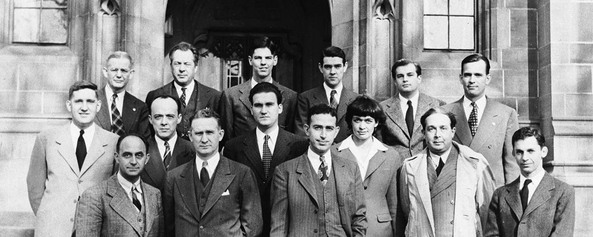
芝加哥大学首次受控核裂变反应四周年时的原子科学家重聚。
请注意，虽然私人公司帮助开发核武器组件，但他们从未被允许拥有完整组装的核武器。相比之下，我在这里提出的”AGI政府项目”主流版本对于WMD参考类别来说是前所未有地私有化的。↩︎
国会——甚至副总统！——都不知道曼哈顿计划。我们可能不应该在这里重复这种做法；我甚至建议该项目的关键官员需要参议院确认。↩︎
此时甚至不需要AI实验室员工的合作，因为他们此时大部分已经被自动化了。↩︎
正如萨姆·奥尔特曼曾经说过的，我们每年都离AGI更近一步，每个人都会获得+10疯狂点数。↩︎
事实上，政府拥有最大的武力是一项巨大的文明成就！我们不再是中世纪式的所有人对所有人的斗争，而是通过法院、多元化机构等来解决分歧。↩︎
或者你可能会说，只需开源一切。简单开源一切的问题在于，这不是美国千花齐放的美好世界，而是中国共产党可以自由获得美国开发的超级智能，并且能够超越构建（并应用更少的谨慎/监管）从而接管世界的世界。当然，另一个问题是超级WMD向世界上每个流氓国家和恐怖主义团体的扩散。我认为这不会有好结果。这有点像完全没有政府更可能导致暴政（或毁灭）而不是自由。
无论如何，随着我们接近AGI，人们高估了开源的重要性。鉴于集群成本上升到数千亿美元，关键算法秘密现在是专有的，而不是像几年前那样公布，将会有2-3个领先玩家，而不是分散编码者构建AGI的快乐社区。
我确实认为开源的另一种变体将继续发挥重要作用：落后几年的模型被开源，帮助技术的好处广泛传播。↩︎
致我的进步研究同行：你们应该思考这个问题，这将是你们知识项目的巅峰！你们花费如此多时间研究美国政府研究机构、它们在过去半个世纪的衰落，以及让它们重新有效所需要的条件。告诉我：我们如何让这个项目变得有效？↩︎
V. 结语思考
如果我们是对的呢？
本章内容：
切换
AGI现实主义
如果我们是对的呢？
“我至今还记得1941年的春天。那时我意识到核弹不仅是可能的——它是不可避免的。迟早这些想法不会只是我们独有的。很快每个人都会考虑这些，某个国家会将其付诸实施。[…]
而且没有人可以交流这个话题，我有很多不眠之夜。但我确实意识到这可能是多么非常非常严重。然后我不得不开始服用安眠药。这是唯一的办法，从那时起我再也没有停过。已经28年了，我想这28年来我没有一个晚上不服药。”
詹姆斯·查德威克（物理学诺贝尔奖得主，1941年英国政府关于原子弹不可避免性报告的作者，该报告最终推动了曼哈顿计划的启动）
在这个十年结束之前，我们将建造出超级智能。这就是本系列文章的主要内容。对于我在旧金山交谈过的大多数人来说，这就是屏幕变黑的地方。但之后的十年——2030年代——将至少同样充满事件。到十年结束时，世界将被彻底、面目全非地改造。一个新的世界秩序将被塑造。但遗憾的是——那是另一个时间的故事。
现在我们必须结束了。让我做几点最后的评论。
AGI现实主义
这一切都需要深思熟虑——而许多人做不到。“深度学习遇到了瓶颈！”他们每年都在宣称。这只是另一个技术泡沫，专家们自信地说。但即使在那些处于旧金山震中的人当中，讨论也已经在两个根本不严肃的集结号之间极化了。
一边是末日论者。他们多年来一直在痴迷于AGI；我很赞赏他们的先见之明。但他们的思想已经僵化，脱离了深度学习的经验现实，他们的提案天真且不可行，而且他们未能与真正的威权威胁接触。疯狂地声称99%的末日几率，呼吁无限期暂停AI——这些显然不是正确的道路。
另一边是e/acc。狭义上，他们有一些好观点：AI进步必须继续。但在他们肤浅的Twitter垃圾发帖之下，他们是假的；只想建立包装创业公司而不愿直面AGI的业余爱好者。他们声称是美国自由的热忱捍卫者，但无法抗拒不正当独裁者现金的诱惑。实际上，他们是真正的停滞论者。在试图否认风险的过程中，他们否认了AGI；本质上，我们得到的只会是酷炫的聊天机器人，这些肯定不危险。（在我看来，这是相当令人失望的加速主义。）
但在我看来，这个领域最聪明的人已经汇聚到一个不同的视角，第三条道路，我将其称为AGI现实主义。核心原则很简单：
超级智能是国家安全问题。我们正在迅速构建比最聪明人类更聪明的机器。这不是另一个酷炫的硅谷繁荣；这不是一些随机的程序员社区编写无害的开源软件包；这不是好玩的游戏。超级智能将是疯狂的；它将是人类曾经建造过的最强大武器。对于任何参与其中的人来说，这将是我们做过的最重要的事情。
美国必须领导。如果习近平先得到AGI，自由的火炬将无法生存。（而且，现实地说，美国的领导地位也是安全AGI的唯一道路。）这意味着我们不能简单地”暂停”；这意味着我们需要迅速扩大美国的电力生产来在美国建设AGI集群。但这也意味着业余创业公司的安全措施将核秘密交给中共不再可行，这意味着核心AGI基础设施必须由美国控制，而不是中东的某个独裁者。美国AI实验室必须将国家利益放在首位。
我们需要不搞砸。认识到超级智能的力量也意味着认识到它的危险。存在非常真实的安全风险；非常真实的风险是这一切都会出错——无论是因为人类将带来的破坏力量用于相互毁灭，还是因为，是的，我们召唤的外星物种是我们尚未能完全控制的。这些是可以管理的——但即兴发挥不会奏效。驾驭这些危险将需要好人带着一定程度的严肃性来到桌前，而这种严肃性尚未被提供。
随着加速的加剧，我只期望讨论变得更加尖锐。但我最大的希望是会有那些感受到即将到来的分量的人，并将其视为庄严的责任召唤。
如果我们是对的呢？
到这里，你可能认为我和所有其他旧金山人都完全疯了。但考虑一下，哪怕一瞬间：如果他们是对的呢？这些是发明和构建这项技术的人；他们认为AGI将在这个十年内被开发；而且，尽管存在相当广泛的频谱，他们中的许多人非常认真地考虑通往超级智能的道路将如我在本系列中描述的那样展开的可能性。
我几乎肯定在故事的重要部分犯了错误；如果现实最终真的接近这种疯狂程度，误差范围将会非常大。此外，正如我在开头所说，我认为存在广泛的可能性。但我认为具体化是很重要的。在这个系列中，我阐述了我目前认为这个十年剩余时间—这个十年的剩余时间最可能的单一情景。
因为—它开始感觉真实了，非常真实。几年前，至少对我而言，我认真对待这些想法—但它们是抽象的，被隔离在模型和概率估计中。现在感觉极其具体。我能看到它。我能看到AGI将如何被构建。这不再是关于人脑大小的估计、假设和理论推断以及所有那些—我基本上可以告诉你AGI将在哪个集群上训练以及何时构建，我们将使用的算法的大致组合，未解决的问题和解决它们的路径，重要人员的名单。我能看到它。这极其具体。当然，在2023年初全仓杠杆做多英伟达一直很棒，但历史的负担是沉重的。我不会选择这个。
但最可怕的认识是，没有精英团队来处理这件事。作为孩子，你对世界有这种美化的看法，当事情变得真实时，有英雄的科学家，超级能干的军人，冷静的领导者在处理，他们将拯救世界。事实并非如此。世界是极其渺小的；当假象被撕下时，通常只是幕后的几个人是活跃的参与者，他们拼命试图防止事情分崩离析。
现在，世界上也许只有几百人意识到即将袭击我们的是什么，他们理解事情即将变得多么疯狂，他们具有situational awareness(情境意识)。我可能亲自认识或与每个可能运营The Project(这个项目)的人只有一度分离。那些在幕后拼命试图防止事情分崩离析的少数人就是你和你的伙伴以及他们的伙伴。就是这样。就是这些。
总有一天它会脱离我们的掌控。但现在，至少在接下来几年的中局中，世界的命运取决于这些人。
自由世界会获胜吗？
我们会驯服superintelligence(超级智能)，还是它会驯服我们？
人类会再次避免自我毁灭吗？
赌注就是如此之高。
这些都是伟大而光荣的人。但他们只是人。很快，AI将统治世界，但我们还要经历最后一场较量。愿他们最后的管理为人类带来荣耀。